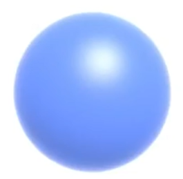
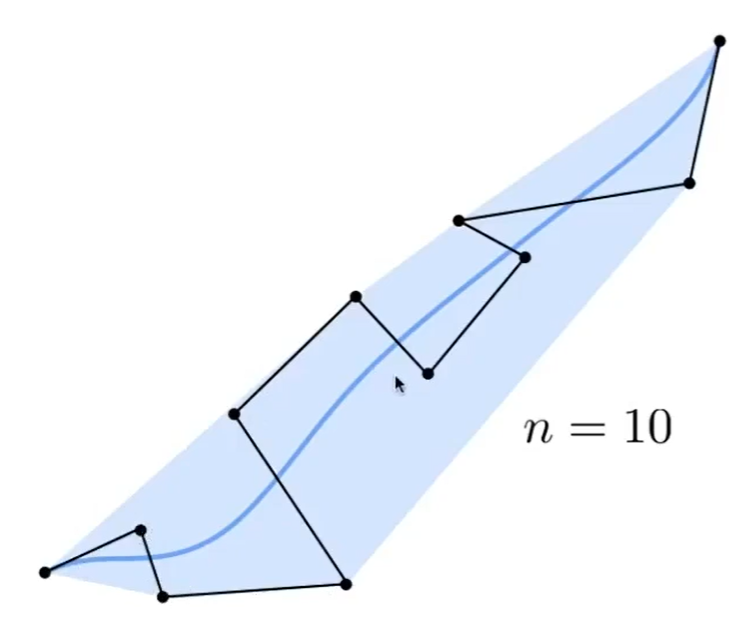
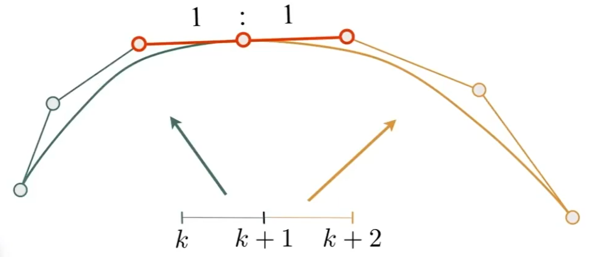
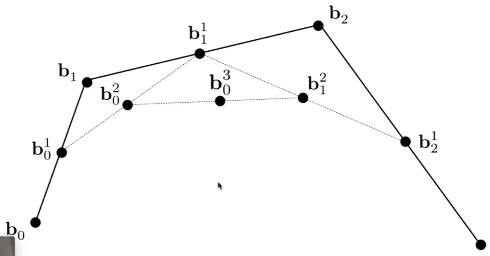
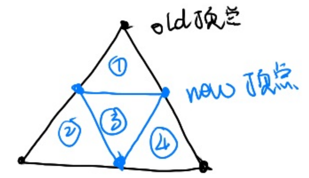
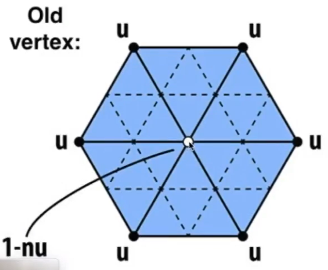
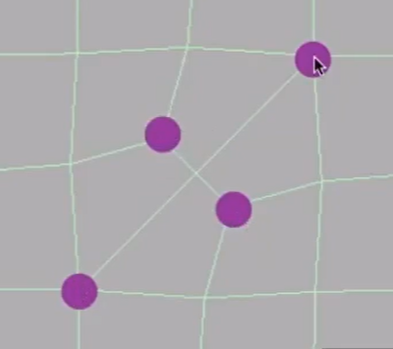
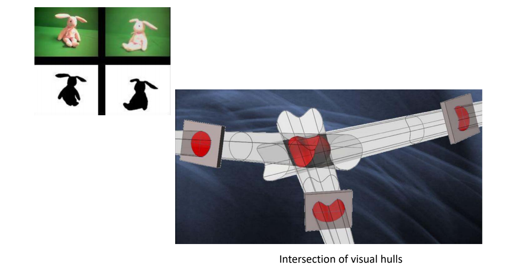

GAMES 102 几何建模与处理
如有侵权，请联系删除
说明
这个是GAMES-Webinar提供的一个课程系列。
如果说课程GAMES101的闫神像平易近人的师兄，把所有的算法的细节娓娓道来。那么课程GAMES102的刘老师则像的高深莫测的师傅俯瞰着眼前的知识点。也许他不能像
GAMES101那样照顾到听众的每个细节，但他能带来高屋建瓴的视野。
因此，如果遇到困难就多看几遍，坚持下来，必定“更上一层楼，修得千里目”。
课程PPT中已经列出了所有关键知识点。因此把PPT的内容也贴进了笔记中。在这门课的笔记中，正常字体代表原文。引文及特殊字体代表笔记。且对原PPT内容有做删改，去掉不关心的内容，合并重复的内容。
本文出自CaterpillarStudyGroup，转载请注明出处。
https://caterpillarstudygroup.github.io/GAMES102_mdbook/
几何的表达方式
几何的表达方式分为隐式表达和显式表达。
隐式表达[46:35]是指，不提供点的具体位置，只提供点应满足的约束f(x,y,z)=0。
隐式表达可以快速判断一个点在不在物体表面上。但是难以列举所有在表面上的点。
显式表达有两种方式：
- 直接给出所有点的具体位置
- 给出一些点，以及这些点到另一些点的映射关系，例如\(f:R^2 \rightarrow R^3\) 显式表达可以快速地列出所有在表面上的点，但难以判断一个点在不在表面上。
实际场景中，会根据需要使用不同的表达方式
隐式表达举例
【P10，1:02:05】
| 类型 | 举例 | 表达方式 |
|---|---|---|
| Algebraic Surface |  | \(x^2 + y^2 + z^2 = 1\) |
| Constructive solid Geometry | 通过基本几何之间的运算来定义新的几何 | |
| Distinct Function | [1:01:23] | 定将一个函数，来描述任意一个点到物体表面的最近的距离。距离为0的点就是边界。 |
| Distinct Function | [1:02:20] | 可对距离函数做blending |
| Fractals 分形 | [1：12：44] | 自相似。容易引入走样 |
距离函数blend相关的补充：
- 距离函数blend可以用于物体运动过程的插值。
图中A和B代表模型在两个动态状态的效果，如果用非SDF(signed distance field)的方式表达，对A和B做线性混合之后会得到这样的效果：
我们实际想到的是物体从A状态运动到B状态的效果。这个效果与我们预期的不一致。
如果用SDF来描述A和B，对两个SDF做blend就能够达到目的了。 - 两个SDF做blend得到新的SDF，怎么再根据SDF恢复出物体的表面？
答：marching cube。在格子上找出f(x)=0的点，然后把点连起来。
💡 基于骨骼动作的mesh blending也能达到这个效果。因此重要的不是隐式或显式，而是有没有抓住运动的来源。
优点：
- 容易描述
- compact 表达
- 容易判断一个点是否在模型的内部/外部
- 容易计算离表面的距离
- 容易计算光线与表面的夹角
缺点： - 难以描述复杂对象
显式几何
映射[P10]
点云 point cloud
list of points
足够可以表示任意的几何形状
常用于扫描输出
常被转换为其它表达方式再使用
Polygon Mesh
应用最广泛。
以三角形、四边形为主
obj 文件格式：
- v：顶点坐标
- vn:顶点法向量，数量同v
- vt：纹理坐标，最多为（顶点数 * 面片数）个
- f：面片，v/vt/vn
本文出自CaterpillarStudyGroup，转载请注明出处。
https://caterpillarstudygroup.github.io/GAMES101_mdbook/
从数学开始
数学是一种语言。用数学语言进行建模的过程：问题→模型->算法->代码。使用数学语言要擅长抽象。

👆 科学研究的过程
✅ 其中，对问题建模的能力是最重要的
集合内容跳过。
线性空间内容跳过。
映射内容跳过。
函数内容跳过。
函数的集合（函数空间）
用若干简单函数（“基函数”）线性组合张成一个函数空间
$$ -L=span\left (f_1,f_2,\dots ,f_n \right ) =({\textstyle \sum_{i=1}^{n}} a_if_i(x)|a_i\in R) $$
每个函数就表达（对应）为\(n\)个实数，即系数向量\((a_1,a_2,\dots ,a_n)\)
例如： 幂基
$$ ( x^{k},k=0,1,\dots ,n ) $$
构成的函数空间
$$ f(x)=\sum_{k=0}^{n} w_{k} x^{k} $$
称为多项式函数空间。
三角函数基构成的函数空间
$$ f(x)=a_{0}+\sum_{k=1}^{n}\left(a_{k} \cos k x+b_{k} \sin k x\right) $$
称为三角函数空间
空间的完备性：这个函数空间是否可以表示（逼近）任意函数？
❗ 函数空间几乎是后面课程整个连续几何部分的基础，理解函数空间对理解后面的课程非常重要。
万能逼近定理
Weierstrass逼近定理：
• 定理1：闭区间上的连续函数可用多项式级数一致逼近
• 定理2：闭区间上周期为\(2π\)的连续函数可用三角函数级数一致逼近
对 \( [a, b] \)上的任意连续函数\(g\), 及任意给定的\(\varepsilon>0 \), 必存在\(n\) 次代数多项式\(f(x)=\sum_{k=0}^{n} w_{k} x^{k} \), 使得
$$
\min _{x \in[a, b]}|f(x)-g(x)|<\varepsilon.
$$
傅里叶级数
$$ f(t)=A_{0}+\sum_{n=1}^{\infty}\left[a_{n} \cos (n \omega t)+b_{n} \sin (n \omega t)\right] $$
$$ f(t)=A_{0}+\sum_{n=1}^{\infty} A_{n} \sin n \omega t+\psi_{n} $$
[47:46] 两个\(f(t)\)是等价的。\(n\)代表对sin的缩放，\(\phi_t\) 代表对 sin 的平移，用一个函数sin通过对它的伸缩和左右平移，就能表达一个任意复杂的周期函数。
更复杂的函数：函数复合

$$ f=f_{k}{ }^{\circ} f_{k-1}{ }^{\circ} \ldots{ }^{\circ} f_{0} $$
问题：如何求满足要求的函数？
🔎 [51：11]
大部分的实际应用问题
- 还需要根据实际问题设计输入输出
- 可建模为：找一个映射/变换/函数
- 输入不一样、变量不一样、维数不一样
如何找函数的三步曲：
- 到哪找，即确定某个函数集合/空间
①各种网络模型(CNN，RNN)都是在解决“到哪找”的问题 - 找哪个，即度量哪个函数是好的/“最好”的
②各种Loss定义(L2,交叉熵)都是在解决“找哪个”的问题 - 怎么找，即求解或优化。可以选择不同的优化方法与技巧，目标是既要快、又要好…
③各种优化方法(牛顿下降、Adam)都是在解决“怎么找”的问题
本文出自CaterpillarStudyGroup，转载请注明出处。 https://caterpillarstudygroup.github.io/GAMES102_mdbook/
数据拟合(Fitting)问题
输入：一些观察的数据点
输出：反映这些数据规律的函数\(y=f(x)\)

🔎 [55：12]
1. 到哪找？
选择一个函数空间，通过函数空间来构造线性函数空间：
$$ A=span(B_{0}(x), \ldots, B_{n}(x)) $$
可以选择的函数空间有：
- 多项式函数 \(span (1, x, x^{2}, \ldots, x^{n})\)
- \(RBF\)函数
- 三角函数
✅ 选定一组基函数。
如果目标是周期函数，选择三角函数会比较合适
于是函数表达为
$$ f(x)=\sum_{k=0}^{n} a_{k} B_{k}(x) $$
把\(f(x)\)为表达基函数 \(\times\) 系数，那么一组系数能确定一个\(f(x)\)
求\(n+1\)个系数\((a_{0}, \ldots, a_{n})\)
✅ 把待定系数\((a_{0}, \ldots, a_{n})\)求解出来，这个函数就算是找到了。
2. 找哪个？ && 怎么找？ 目标1
目标
目标: 函数经过每个数据点（插值）

$$ y_{i}=f\left(x_{i}\right),i=0,1,\ldots,n $$
联立方程组
[57:18]把\(x_i\)和\(y_i\)代入公式。联立, 可得线性方程组
$$ \sum_{k=0}^{n} a_{k} B_{k}\left(x_{i}\right)=y_{i}, i=0,1, \ldots, n $$
简化写法为：
$$ Aa = b $$
其中，\(A 是 x_i 代入 B_k (x_i)得到的矩阵。a 是系数组成的向量。b 是 y_i\) 组成的向量。
Langrange方法求解
求解\((n+1) \times(n+1)\)线性方程组，可使用\(n\)次Langrange插值多项式方法。
插值\(n+1\)个点、次数不超过\(n\)的多项式是存在而且是唯一的
$$ p_{k}(x)=\prod_{i \in B_{k}} \frac{x-x_{i}}{x_{k}-x_{i}} $$
✅ 插值函数的自由度 = 未知量个数 - 已知量个数
条件数描述了解的稳定性，它与解的个数、自由度无关
问题
病态问题: 系数矩阵条件数高时, 求解不稳定
系数矩阵即上面的 A。
条件数指矩阵的奇异值中最大的与最小的之间的比例。
3 找哪个？&&怎么找？目标2
目标
目标：函数尽量靠近数据点（逼近）

✅ 由于设备误差、存储误差，导致数据不精确。
因此曲线不必要一定经过点，而是靠近就可以。
逼近是指，不要求\(y_i\)与\(f(x_i)\)严格相等，但希望误差尽量。
$$ \min \sum_{i=0}^{n}\left(y_{i}-f\left(x_{i}\right)\right)^{2} $$
✅ \((\cdot )^2\)是度量距离的一种方式。可替换。
除了考虑距离是否合理，还要考虑是否好优化。
因此\((\cdot )^2\)最常用。
目标函数
把目标函数看作是以系数为参数的函数 G
$$ G (a_o, a_1,\dots, a_n) = {\textstyle \sum_{i=0}^{n}} (y_i-f(x_i))^2 $$
求 G 的极小值，即求它的拐点。
最小二乘法求解
对各系数求导，得法方程(Normal Equation)
$$
\frac{\partial G}{\partial a_1} = 0 \\
\frac{\partial G}{\partial a_2} = 0 \\
\cdots \\
\frac{\partial G}{\partial a_n} = 0 \\
$$
此方法称为最小二乘法
问题
- 点多，系数少？
✅ 表达能力不够，欠拟合
- 点少， 系数多？
✅ 过拟合
Recap：插值 VS. 逼近

✅ 通常使用逼近而不插值
Overfitting（过拟合）
欠拟合 & 过拟合

过拟合可以达到误差为0，但是拟合的函数并无使用价值！
问：如何选择合适的基函数？
答：需要根据不同的应用与需求，不断尝试（不断“调参”）
避免过拟合的常用方法
🔎 [1：08：47]
• 数据去噪：剔除训练样本中噪声
• 数据增广：增加样本数，或者增加样本的代表性和多样性
• 模型简化：预测模型过于复杂，拟合了训练样本中的噪声。可选用更简单的模型，或者对模型进行裁剪
• 正则约束：适当的正则项，比如方差正则项、稀疏正则项
✅ 后面列举了常用正则项
正则项约束
选择一个函数空间，基函数的线性表达为：
$$ W=\left(w_{0}, w_{1}, \ldots, w_{n}\right) $$
$$ y=f(x)=\sum_{i=0}^{n} w_{i} B_{i}(x) $$
最小二乘拟合
$$ \min _{W}||Y-X W||^{2} $$
Ridge regression（岭回归）
$$ \min_{W}||Y -XW\left | \right | ^2+\mu|| W|| ^2_2 $$
稀疏学习：稀疏正则化
已知冗余基函数（过完备），通过优化来选择合适的基函数，即让系数向量的\( L_0 \)模（ 非0元素个数）尽量小，以此挑选（“学习”）出合适的基函数
[1:10:14]过完备：基函数过冗余或线性相关。
$$ \min_{a} \left | \right |Y -XW\left | \right | ^2+\mu|| W|| _0 $$
$$
\min_{a}\left | \right | Y -XW\left | \right | ^2,s.t|| W || _0\le \beta
$$
✅ \(||W||_0\)表示 W 中的非零元素个数
最小化\(||W||_0\)（优化问题）或把它限制在可接受范围内（约束问题）
公式一是优化问题、公式二是约束问题。
压缩感知

已知\(y\)和\(Φ \)，有无穷多解\(x\)
在一定条件下 (on Φ)，对于稀疏信号\(x\)，可通过优化能完全重建\(x\)
🔎 [Candes and Tao 2005]
\(L_0 \)优化：
$$ \min ||x||_0\\ s.t. Φx=y $$
🔎 [1：13：20]
✅ 已知信号 \(x\) 是高维稀疏的,通过采样矩阵\(\phi\)作用于\(x \)可得到低维向 \(y\),且根据y和\(\phi\)中恢复出\(x\)。
压缩感知常用于信号采集。
思考：非函数型的曲线拟合？
🔎 [1：15：40]
✅ 一个 \(x\) 对应多个 \(y\) ,因此不是函数。
本文出自CaterpillarStudyGroup，转载请注明出处。 https://caterpillarstudygroup.github.io/GAMES102_mdbook/
假定：仅函数形式
假定：仅函数形式，一般曲线（非函数形式）后面再学习
函数形式是指：
$$ f:R^1 \rightarrow R^1 $$
或
$$ y=f(x) $$
🔎 [03：55]
✅ 曲线中每个x都对应一个\(y\)值，是函数函数形式的曲线。上面的公式是函数形式曲线的两种表达方式。

✅ 这三个曲线是一般曲线
函数拟合问题
输入: 一些观察 (采样) 的数据点\((x_i,y_i)\)
输出: 拟合数据点的函数\(y=f(x)\), 并用于预测

函数拟合的目的：
- 压缩：把大量采样点压缩成函数
- 预测：预测未采样的点
这种拟合函数有多少个？怎样判断拟合函数的“好坏”？
🔎 [06：01]
方式一：分段线性
🔎 [06：12]
数据误差为\(0\)，但函数性质不够好：只有\(C^0\)连续，不光滑（数值计算）
✅ \(C^0\)连续不可求导，会给后面的使用带来难度。
离散几何研究这种函数，以目前的角度来看函数不好。
方式二：光滑插值
🔎 [08：06]

数据误差为\(0\)，但可能被 “差数据” (噪声、outliers) 带歪, 导致函数性质不好、预测不可靠
方式三：逼近拟合

🔎 [09：48]
允许误差不为\(0\)，但要足够小，这样能抵抗噪声
求拟合函数的应用驱动
大部分的实际应用问题
- 可建模为：找一个映射/变换/函数
- 输入不一样、变量不一样、维数不一样
求函数拟合一定要考虑应用背景，要有针对性地设计函数空间，否则只能靠试，就会很难了。
三步曲方法论
🔎 [12：50]
到哪找?
确定函数的表达形式 (函数集、空间)，一般是由基函数所张成的线性空间
(1)确定某个函数集合（“池子”）
(2)具有某种结构容易表达（比如线性函数空间）
(3)尽量广泛（表达能力强）
$$ L=span(b_0(x),\dots b_n(x)) $$
待定基函数的组合系数 (求解变量)
$$ f_\lambda (x)=\sum_{k=0}^{n} \lambda_ib_i(x) $$
\(f\)由待定系数\(\lambda=\left (\begin{array}{c} \lambda_{1} \\ \ldots \\ \lambda_{n} \end{array}\right) \)确定
通常把求一个函数转化为一组系数的求解。
基函数的选择决定了函数空间能拟合怎样的函数。
找哪个?
度量哪个函数是好的/“最好”的
定义损失函数，包括数据误差项（逼近数据的度量）与正则项（对函数性质的度量）
能量项 = 误差项 - 正则项
正则项：对系数加约束就相当于对函数加约束。
统计模型、规划模型...
怎么找?
-
线性问题
线性问题，可转化为解线性方程或线性方程组的问题，例如：
求解误差函数的驻点 (导数为 \(0 \)之处)，并转化为系数的方程组
如果是欠定的 (有无穷多解)，则修正模型，例如改进/增加各种正则项:Lasso、岭回归、稀疏正则项… -
非线性问题：
- 凸问题：有理论保证
- 非凸问题：难！数值求解（ 梯度下降法、牛顿法、拟牛顿法、L‐BFGS, … ），须选择合适初值、步长等；一般要根据具体的优化问题形式及特点来设计合适的优化方法！
本文出自CaterpillarStudyGroup，转载请注明出处。 https://caterpillarstudygroup.github.io/GAMES102_mdbook/
多项式插值定理
🔎 [16：46]
定理：若\(x_i\)两两不同，则对任意给定的\(y_i\)，存在唯一的次数至多是\(n\)次的多项式\(p_n\)，使得\(p_n(x)=y_i,i=0,\cdots,x^n\)。
✅ 唯一的多项式p的意思是唯一的一组系数\(a_0, \cdots, a_n\)
证明：在幂基\((1,x,\cdots,x^n)\)下待定多项式\(p\)的形式为：
$$
p(x)=a_0+a_1x+a_2x^2+\cdots+a_nx^n
$$
定理不限于幂基，下面证时过程只是以幂基为例
由插值条件\(p(x_i)=y_i,i=0,\cdots,n\)得到如下方程组:

👆 如果基函数选取不一样,方程组的系数矩阵不同
系数矩阵为Vandermonde矩阵，其行列式非零，因此方程组有唯一解。
✅ 如果不使用幂基而是别的基函数，也能得到上述方程组并解出唯一解，只是矩阵的内容不同。
要求解的系数是\(a_1,a_2, \cdots, a_n\),此处系数a是未知数，而不是通常理解的\(x\), \(x\) 代表输入，因此是已知量。
技巧1：构造插值问题的通用解
🔎 [17：44] ✅ 上一页方法中的问题：每次x或y变化都要构造一个公式来解。本页的目的是，只变y而x不变时不需要构造矩阵和解方程。
给定 \(n+1\)个点 {\((x_0,y_0),\cdots,(x_n,y_n)\)}, 寻找一组次数为\(n\)的多项式基函数\(l_i\)使得
$$ l_i(x_j) = \begin{cases} 1, & \text{ if } i=j \\ 0, & \text{ if } i\neq j \end{cases} $$
那么，插值问题的解为:
$$
P(x)=y_{0} l_{0}(x)+y_{1} l_{1}(x)+\cdots+y_{n} l_{n}(x)=\sum_{i=0}^{n} y_{i} l_{i}(x)
$$
✅ 这样做的好处是，即使y变化，也不用重新解方程组。\(l_i(x)\)可以通过上述方程组提前解出来，以\(y\)为系数对\(l_i(x)\)做线性组合，就可以得到\(P(x)\)
多项式\(l_i(x)\)被称为拉格朗日多项式，即拉格朗日插值问题的通用解。
该方法称为拉格朗日插值。
给定\(n+1\)个点，通过上面的方法解方程组，可以解出\(l_i(x)\)系数，从而得到拟合函数。
但 \(n+1\) 个点有任何一点改变，都要重新"构造方程组→解系数→得拟合函数"。
该技巧对以上过程做简化。在 \(n+1\) 个定点的\(x\)不变而只有\(y\)的变化的情况下，无须解方程而快速得到拟合函数。
具体步骤为：
2.先求拟合函数 \(l_i(x)\). 用上一页的方法。
构造用于拟合\(l_i(x)\)的数据点。其中\(x_i\)为原给定的\(n+1\)个时,\(x_i\),\(y_i\)为公式(1)中的\(l_i(x_j)\)，这样给每个\(l_i(x)\)构造了\(n+1\)个用于拟合点。例如:
\(n+1\)个点{\((x_0,1),(x_1,0)\dots ,(x_n,0)\)}导拟合函数\(l_0(x)\)
这样就得到了\(n+1\)个函数\(l_i(x)\)
在拟合\(l_i(x)\)的过程中只用到了原给定数据点的\(x\)而没有用 \(y\)。因此，只要x不变，\(l_i(x)\)函数就一直适用。
要拟合的函数\(P(x)\)就成了\(l_i(x)\)的线性组合，\(y_i\)是系数。
💡 我的思考：
根据 \(Aa=y\) 解出\(a\),得到拟合函数\(f(x)= A(x)\cdot a\)
现在，先算出 \(A{a}' = E,根据Ey=y可知：A{a}'y=Aa\).
因此得到拟合函数\(f(x)=A(x)a=A(x){a}' y\).
结论：把计算的过程或目标分解，分析每一部分计算的依赖项。根据依赖项决定是否能提前算好。
怎么计算多项式\(l_i(x)\)?
\(n\)阶多项式,且有以下\(n\)个根
$$ x_0,x_1,x_2,\cdots,x_{i-1} ,x_{i+1} ,\cdots,x_n $$
故可表示为
$$
l_i(x) \\
=C_{i}\left(x-x_{0}\right)\left(x-x_{1}\right) \ldots\left(x-x_{i-1}\right)\left(x-x_{i+1}\right) \ldots\left(x-x_{n}\right) \\
=C_{i} \prod_{j \neq i}\left(x-x_{j}\right)
$$
由\(l_i(x_i)=1\)可得
$$
1=c_{i} \prod_{j \neq i}\left(x_{i}-x_{j}\right) \Rightarrow c_{i}=\frac{1}{\prod_{j \neq i}\left(x_{i}-x_{j}\right)}
$$
最终多项式基函数为
$$
l_{i}(x)=\frac{\prod_{j \neq i}\left(x-x_{j}\right)}{\prod_{j \neq i}\left(x_{i}-x_{j}\right)}
$$
多项式\(l_i(x)\)被称为拉格朗日多项式
技巧2：更方便的求解表达
Newton插值：具有相同“导数”（差商）的多项式构造（\(n\)阶Taylor展开）
定义：
一阶差商：
$$
f\left[x_{0}, x_{1}\right]=\frac{f\left(x_{1}\right)-f\left(x_{0}\right)}{x_{1}-x_{0}}
$$
\(k\)阶差商:
设{\(x_0,x_1,\cdots,x_k\)}互不相同,\(f(x)\)关于{\(x_0,x_1,\cdots,x_k\)}的\(k\)阶差商为:
$$
f\left[x_{0}, x_{1}, \cdots, x_{k}\right]=\frac{f\left[x_{1}, \cdots, x_{k}\right]-f\left[x_{0}, x_{1}, \cdots, x_{k-1}\right]}{x_{k}-x_{0}}
$$
所以Newton插值多项式表示为： $$ N_{n}(x)=f\left(x_{0}\right)+f\left[x_{0}, x_{1}\right]\left(x-x_{0}\right)+\cdots+f\left[x_{0}, x_{1}, \cdots, x_{n}\right]\left(x-x_{0}\right) \cdots\left(x-x_{n-1}\right) $$
🔎 [19：23]
❓ 这里也没听懂？意思是预算出的有阶的差商？
多项式插值存在的问题
系统矩阵稠密
例如Vandermonde矩阵，处处非零元素
✅ 稀疏矩阵的优势：有好的迭代方法，计算很快.
eigen库：非常有名的数学库
病态问题
依赖于基函数选取，矩阵可能病态，导致难于求解（求逆）
病态矩阵示例
考虑二元方程组，解为\((1,1)\)
$$
x_{1}+0.5 x_{2}=1.5
$$
$$ 0.667 x_{1}+0.333 x_{2}=1 $$
对第二个方程右边项扰动0.001，解为 (0,3)
$$
x_{1}+0.5 x_{2}=1.5
$$
$$ 0.667 x_{1}+0.333 x_{2}=0.999 $$
对矩阵系数进行扰动，解为(2,-1)
$$
x_{1}+0.5 x_{2}=1.5
$$
$$ 0.667 x_{1}+0.334 x_{2}=1 $$
✅ 对系数矩阵或\(y\)向量做微小的扰动，其解的变化会非常大。
输入数据的细微变化导致输出（解）的剧烈变化
将线性方程看成直线（超平面），当系统病态时，直线变为近似平行，求解（即直线求交）变得困难、不精确
矩阵条件数
$$ \kappa_{2}(A)=\frac{\max _{x \neq 0} \frac{|A x|}{|x|}}{\min _{x \neq 0} \frac{|A x|}{|x|}} $$
矩阵条件数等于矩阵最大特征值和最小特征值之间比例，条件数大意味着基元之间有太多相关性，造成不稳定。
范德蒙矩阵的条件数
多项式插值问题是病态的，因为对于等距分布的数据点\(x_i\),范德蒙矩阵的条件数随着数据点数\(n\)呈指数级增长（多项式的最高次数为\(n-1\)）
✅ 多项式插值如果使用了高阶的基函数，就容易出现病态问题
因为幂（单项式）函数基的特点是，幂函数之间差别随着次数增加而减小，不同幂函数之间唯一差别为增长速度（\(x^i\)比 \(x^{i-1}\)增长快）
🔎 [26：31]
✅ 幂函数基，高阶后函数变化非常快，那么结果就会被幂底严重挠动
解决方法
好的基函数一般需要系数交替，且互相抵消问题，例如：

基之间互相抵消，函数就不会一直增长。
[?] 秦九韶算法
可使用正交多项式基。可通过Gram‐Schmidt正交化获得正交多项式基。
振荡(Runge)现象

结论
多项式插值存在以下问题：
- 多项式插值不稳定，控制点的微小变化可导致完全不同的结果
- 振荡(Runge)现象，多项式随着插值点数(可以是细微)增加而摆动
因此需要更好的基函数来做插值，例如Bernstein基函数、分片多项式
本文出自CaterpillarStudyGroup，转载请注明出处。 https://caterpillarstudygroup.github.io/GAMES102_mdbook/
为什么逼近？
用逼近代替插值的优点：
• 数据点含噪声、outliers等
• 更紧凑的表达
• 计算简单、更稳定

逼近问题
给定一组线性无关的连续函数集合\(B\)={\(b_1, \ldots b_n\)}和一组结点{\((x_1, y_1)\), ...,\((x_m, y_m)\)}, 其中\(m>n\)。
在\(B\)张成空间中哪个函数\(f\in\operatorname{span}(B)\)对结点逼近最好?
🔎 [31：38]
最佳逼近
最小二乘逼近
$$ \underset{f \in \operatorname{span}(B)}{\operatorname{argmin}} \sum_{j=1}^{m}\left(f\left(x_{j}\right)-y_{j}\right)^{2} $$
公式是关于系数\((\lambda _1,\lambda _2,\dots ,\lambda _n,)\)的函数，直接求极小值的闭式解。
$$ \sum_{j=1}^{m}\left(f\left(x_{j}\right)-y_{j}\right)^{2}=\sum_{j=1}^{m}\left(\sum_{i=1}^{n} \lambda_{i} b_{i}\left(x_{j}\right)-y_{j}\right)^{2} $$
$$ =(M \lambda-y)^{T}(M \lambda-y) $$
$$ =\lambda^{T} M^{T} M \lambda-y^{T} M \lambda-\lambda^{T} M^{T} y+y^{T} y $$
$$ =\lambda^{T} M^{T} M \lambda-2y^{T} M\lambda +y^{T} y $$
$$ M=\left(\begin{array}{ccc} b_{1}\left(x_{1}\right) & \ldots & b_{n}\left(x_{1}\right) \\ \ldots & \ldots & \ldots \\ b_{1}\left(x_{m}\right) & \ldots & b_{n}\left(x_{m}\right) \end{array}\right) $$
求解
上页公式可转化为关于\(\lambda\)的二次多项式
$$
\lambda^{T} M^{T} M \lambda-2 y^{T} M \lambda+y^{T} y
$$
求公式的法方程，可得使公式达到最小值，其解应满足：
$$
M^{T} M \lambda=M^{T} \mathrm{y}
$$
提示
－ 最小化二次目标函数\(x^TAx+b^Tx+c \)
－ 充分必要条件:\(2Ax=-b\)
本文出自CaterpillarStudyGroup，转载请注明出处。 https://caterpillarstudygroup.github.io/GAMES102_mdbook/
多项式的优点与缺点
这种类似于\(\sum a_if_i(x)\)的形式都叫多项式，根据\(f_i(x)\)的不同的定义，会成为不同的多项。例如以幂函数为基的是幂基多项式，比Berstein为基的是Bertein多项式。
优点
- 易于计算, 表现良好, 光滑, ...
- 表达能力足够!
魏尔斯特拉斯Weierstrass定理:令\(f\)为闭区间\([a, b]\)上任意连续函数, 则对任意给\(\varepsilon\), 存在\(n\)和多项式\(P_n\)使得
$$ \left|f(x)-P_{n}(x)\right|<\varepsilon, \forall x \in[a, b] $$
翻译成人话是：\(Pn(x)\)可以在一定误差内拟合任意\(f(x)\)。只要n足够大。
这里\(x的范围区间是[a,b]，通常考虑[0,1]\)
Weierstrass只证明了存在性,未给出多项式
Bernstein多项式
完备性
伯恩斯坦Bernstein给出了Bernstein的完备性证明：
对\([0,1]\)区间上任意连续函数\(f(x)\)和任意正整数\(n\), 以下不等式对所有\(x\in[0,1]\)成立
$$ |f(x)-B_n(f,x)|<\frac{9}{4} m_{f,n} $$
\(m_{f,n}\)=lower upper bound of |\(f(y_1)-f(y_2)\)|
\(y_1, y_2\in[0,1] \) 且|\(y_1-y_2\)|<\(\frac{1}{\sqrt{n}} \)
$$ B_n(f, x)=\sum_{j=0}^{n} f(x_j) b_{n, j}(x) $$
其中\(x_j\) 为[\(0,1\)]上等距采样点，\(b_{n,j}\)为Bernstein基
$$ b_{n,j} = \binom{n}{j} x^j (1-x)^{n-j} $$
\(\binom{n}{j}相当于{\textstyle C_{n}^{j}} \),排列组合的意思。
Bernstein基

- \(b_{0,0}(x)=1\)
- \(b_{0,1}(x)=1-x, b_{1,1}=x\)
- \(b_{0,2}(x)=(1-x)^2, b_{1,2}=2x(1-x),b_{2,2}=x^2\)
- \(b_{0,3}(x)=(1-x)^3,b_{1,3}=3x(1-x)^2, b_{2,3}=3x^2(1-x),b_{3,3}=x^3\)
- \(b_{0,4}(x)=(1-x)^4,b_{1,4}=4x(1-x)^3,b_{2,4}=6x^2(1-x)^2, b_{3,4}=4x^3(1-x),b_{4,4}=x^4\)
🔎 [36：40]
✅ 矩阵的本质：在不同的基函数空间做变换
6张图分别是0-5次的 Bernstein 基。
Bernstein多项式的优点
Bernstein基函数的良好性质：
- 非常好的几何意义！
- 正性、权性（和为1）\(\Rightarrow \)凸包性
权性。上面图中，任意画一条竖线，线上点的\(y\)值和为1
[?] 什么是凸包性？为什么有权性就有凸包性？
为什么凸包性就计算稳定？
- 变差缩减性
- 递归线性求解方法
- 细分性
- …
🔎 丰富的理论：CAGD 课程
关于Bernstein函数的两种观点
🔎 [46：17]

$$ B_{n}(f, x)=\sum_{j=0}^{n} f\left(\frac{i}{n}\right) b_{n, j}(x) $$
\(f(x)\)是一个离散函数， \(f(\frac{i }{n} )\)为\(x\)为第i个采样点时\(f(x)\)的值，因此 \(f(\frac{i}{n} )\)代表能有采样点。
红色实际上是基于蓝点画的 Bezier 曲线。
代数观点
蓝色为采样点\(f(\frac{i}{n} )\)，\(b_{n,j}(x) \)是系数，用系组来组合采样点。 红色为拟合曲线\(B_n (f,x)\)。当采样点足够多时\(n\to \infty\)，得到\(f(x)逼近 B_n (f,x)\) 红线逼近蓝点。
几何观点
\(f(\frac{i}{n})\)是系数，\(bn_1,j(x)\)是基函数，用系数来组合基函数，得到新的函数。
本文出自CaterpillarStudyGroup，转载请注明出处。 https://caterpillarstudygroup.github.io/GAMES102_mdbook/
Gauss函数
✅ 一维 RBF 称为 Gauss 函数
$$ g_{\mu ,\sigma } = \frac{1}{\sqrt{2\pi } } e^{-\frac{(x-\mu )^{2} }{2\sigma ^{2} } } $$

几何意义：
• 均值\(\mu\):位置
• 方差\(\sigma\)：宽度
不同µ和\(\sigma\)的 Gauss 函数都线性无关. 有什么启发？
各个线性无关的 Gauss 函数，可以张成一个空间。用 Gauss 函数作为基函数
RBF函数拟合
$$ f(x) = b_0 + \sum b_ig_i(x) $$

🔎 [47：44]
有\(n\)个采样点，分别以每个点的x值为µ.生成Gauss函数作为 RBF基。
\(b_0\)为上下偏移，可以来自先验，也可以是某种约束。
思考：
\(\sigma \) 取什么值能得到比较好的结果？
均值\(\mu\)和方差\(\sigma\)是否可以一起来优化？
本文出自CaterpillarStudyGroup，转载请注明出处。 https://caterpillarstudygroup.github.io/GAMES102_mdbook/
标准Gauss函数的变换
一般Gauss函数表达为标准Gauss函数的形式，即
$$ g_{0,1}(x) = \frac{1}{\sqrt{2\pi } } e^{-\frac{x^{2} }{2} } $$
把任意 Gauss 函数 \(g_{\mu,\sigma}(x)\)中的x做平移与缩放，使之成为 std Gauss 函数，即： $$ g_{\mu,\sigma}(x) \Rightarrow g_{0,1}(x') $$
$$ g_{\mu ,\sigma } (x)= \frac{1}{\sqrt{2\pi } } e^{-\frac{(x-\mu )^{2} }{2\sigma ^{2} } } =\frac{1}{\sqrt{2\pi } } e^{-\frac{1}{2}(\frac{x}{\sigma } -\frac{\mu }{\sigma } )^2} =g_{0,1 } (ax+b) $$
通过以上推导得：
$$
x'=ax+b
$$
$$
a=\frac{1}{\sigma },b=\frac{\mu }{\sigma }
$$
RBF由各种不同的Gauss函数线性组合而成， 用这种变换形式来描述RBF函数：
$$ f(x)=b_{0}+\sum_{i=1}^{n} b_{i} g_{i}(x) $$
各种不同的Gauss基函数是由一个标准Gauss函数通过平移和伸缩变换而来的，因此RBF就可以写成这样：
$$ f(x)=\omega_{0}+\sum_{i=1}^{n} \omega_{i} g_{0,1}\left(a_{i} x+b_{i}\right) $$
换个方式看函数
神经网络
将Gauss函数看成网络
$$ f(x)=\omega_{0}+\sum_{i=1}^{n} \omega_{i} g_{0,1}\left(a_{i} x+b_{i}\right) $$
RBF函数可以画成这样：

👆 [58:00] 用神经网络来描述RBF公式
✅ 其中\(\omega_0, \omega_i, a_i, b_i\)都是待优化的函数。 当n足够多时，f(x)可以逼近任何函数。
\(x\) 本身一维，考虑到平移，再升一维。隐层的1是指基函数线性组合后整体增加一个平移。
在这里， std gauss 相当于激活函数。连接线上的数值 \((a_i,b_i,\omega _i)\)是网络参数。\(n\)对应网络隐层的结点个数，需要手调。
神经元

一个神经网络就是一个函数
💡 从传统机器学习到神经网络，这是我见过的最好的解释。
✅ 参数的初值很重要，最好能根据物理意义找到初值。
RBF 神经网络
RBF (Radial Basis Function)，径向基函数，是高维的高斯函数。
RBF 神经网络的问题是，关于 \(a,b\) 的导数难求，高阶且非凸， 难以优化。只能找局部最小，因此初值很重要。
核函数思想
没解释
Gauss函数的特性：拟局部性
没解释
Guass拟合函数的进化
激活函数的选择？
启发：由一个简单的函数通过（仿射）变换构造出一组基函数，张成一个函数空间
关键是基函数的表达能力是否足够强：是否完备/稠密的？
机器学习的本质是在做拟合。
高维情形：多元函数
🔎 见【多元函数】，link
变量的多个分量的线性组合
$$ (x_1,x_2,...,x_n)\longrightarrow g_{0,1}(a^i_1x_1+a^i_2x_2+...+a^i_nx_n+b_i) $$
单隐层神经网络函数：
$$ f(x_1,x_2,...,x_n) = \omega_{0}+\sum_{i=1}^{n} \omega_{i} g_{0,1}(a^i_1x_1+a^i_2x_2+...+a^i_nx_n+b_i) $$
高维只是在输入层，输出层纵向多加几个圈
共享基函数，使用不同的系数
多层神经网络：多重复合的函数
线性函数和非线性函数的多重复合
$$ a_1^{(2)}=f(W_{11}^{(1)} x_1+W_{12}^{(1)}x_2+W_{13}^{(1)} x_3+b_1^{(1)}) $$
$$ a_2^{(2)}=f(W_{21}^{(1)} x_1+W_{22}^{(1)} x_2+W_{23}^{(1)} x_{3}+b_{2}^{(1)}) $$
$$ a_{3}^{(2)}=f(W_{31}^{(1)} x_{1}+W_{32}^{(1)} x_{2}+W_{33}^{(1)} x_{3}+b_{3}^{(1)}) $$
$$ h_{W, b}(x) =a_{1}^{(3)}=f(W_{11}^{(2)} a_{1}^{(2)}+W_{12}^{(2)} a_{2}^{(2)}+W_{13}^{(2)} a_{3}^{(2)}+b_{1}^{(2)}) $$
通常每层使用相同的激活函数，方便优化
增加网络的深度和宽度，都会极大膨胀参数个数
同样参数量级下，通常深的比宽的好，因为深的自由度更高
用神经网络函数来拟合数据

Regression problem
Input: Given training set \((x_1,y_1), (x_2,y_2),(x_3, y_3)\),….
Output: Adjust parameters \(0\)(for every node)to make:
$$
h(x_i)\approx y_i
$$
$$ F(X)=\sum_{i=1}^{N} v_i\varphi (W^T_iX+b_i) $$
❓ Why it works?
答：只要网络足够大，参数足够大，就能逼近任意函数。
❗ 存在的问题 与传统拟合一样存在同样的问题： 函数个数如何选？!
调参！
使用深度学习的方法
问题建模：理解问题、问题分解（多个映射级联）…
- 找哪个？
• 损失函数、各种Penalty、正则项… - 到哪找？
• 神经网络函数、网络简化… - 怎么找？
• 优化方法（BP方法）
• 初始值、参数…
调参：有耐心、有直觉…
本文出自CaterpillarStudyGroup，转载请注明出处。 https://caterpillarstudygroup.github.io/GAMES102_mdbook/
回顾
数据拟合：link
本文出自CaterpillarStudyGroup，转载请注明出处。 https://caterpillarstudygroup.github.io/GAMES102_mdbook/
多元函数（多变量）
$$ f: R^n \rightarrow R^1 $$
$$ \begin{pmatrix}x_1 \\\vdots \\x_n \end{pmatrix} \rightarrow y $$
$$ y = f(x_1,x_2, \cdots, x_n) $$
例子：通过升级实现二元函数的可视化 $$ z=f(x,y),(x,y)\in[0,1]\times[0,1] $$

二元函数的基函数构造
张量积，即用两个一元函数的基函数的相互乘积来定义，
例1：二次二元多项式函数\(z=f(x,y)\)的基函数{\(1,x,y,x^2,xy,y^2\)}
✅ [10:23] 例子中幂基最高为二次，因此只取不超过二次的项。
例2： 以任意函数为基函数

👆 [11:22] 例子：任意基。横轴和竖轴可以用不同的函数，但很少这样做。
多元函数的基函数构造
多元函数的张量积定义
优点：定义简单，多个一元基函数的乘积形式
不足：随着维数增加，基函数个数急剧增加，导致变量急据增加
求解系统规模急剧增加、求解代价大、占用内存空间大
多元函数的神经网络表达
用一个单变量函数\(\sigma (x)\)（称为激活函数）的不同仿射变换来构造 “基函数”：基函数数目可控
$$
y=f(x_1,x_2,...,x_n)
$$
$$
=w_0+\sum_{j-1}^{m} w_j\sigma (a_j^1x_1+...a_j^ix_i+...+a_j^nx_n+b_j)
$$

🔎 [16:12]
✅ 神网络方式的优点：
（1）可以解决张量积方式的维数膨胀问题，因为张量积的维度是指数级增长，而神经网络的\(m\)可以控制。
（2）有统一的优化方法和优化框架
❗ 存在的问题：仍需要调参
💡 我的思考
能用低维的神经网络代替高维的张量积，是因为，虽然张量积的各维度独立，但它对于要拟合的数据来说是有冗余的。
神经网络 hidden layer 的本质，把\(n\)维空间的点映射到m维空间的点，网络学习点在不同维度空间中的性质。
本文出自CaterpillarStudyGroup，转载请注明出处。 https://caterpillarstudygroup.github.io/GAMES102_mdbook/
向量值函数
定义
🔎 [24:41]
函数的\(x\)称为变量，\(y\)称为值。如果函数的值是一个高维空间的点，或者说y是一个向量，则称为向量值函数。
x和y又分别称为自变量和应变量，因此向量值函数是多个应变量的函数。
\(m\) 维向量值函数可以看作最是\(m\)个相互无关的普通函数
拟合方法
看成多个单变量函数，各个函数独立无关，一般会用同样的基函数（共享基函数）
$$ \begin{cases} y_1=f_1(x)\\ \vdots \\ y_m=f_m(x) \end{cases} $$
✅ f1, f2, ..., fm是基于同一基函数但具有不同系数的函数。
向量值函数举例
平面/空间参数曲线
单变量
$$ f:R^1 → R^m $$
$$ x →\begin{pmatrix}y_1 \\\vdots \\y_m \end{pmatrix} $$
几何解释：一个实数\(𝑥∈𝑅^1\)映射到𝑚维空\(𝑅^m\)的一个点，轨迹构成\(𝑅^m\)的一条“曲线” ，但本质维度为1
🔎 [26:37]图

曲线的嵌入空间是高维，本质维度为1 把\(x\)的取值范围归一化到 [0，1]，那么任意一个\(x\)值对应[0，1]上的一个点。 \(x 从 0 走到 1，y\)在高维空间中画出一条弧线。
特例：平面参数曲线
$$ f:R^1 → R^2 $$
$$ \begin{cases} x=x(t)\\ y=y(t) \end{cases} $$
$$ t\in [0,1] $$

在这一页中， \(t 是变量，(x,y)\)是值
特例：空间参数曲线
$$ f:R^1 → R^3 $$
$$ \begin{cases} x=x(t) \\ y=y(t) \\ z=z(t) \end{cases} $$
$$ t\in [0,1] $$

参数曲面
$$ f:R^2 → R^3 $$
$$ \begin{cases} x=x(u,v) \\ y=y(u,v) \\ z=z(u,v) \end{cases} $$
$$ (u,v)\in [0,1]\times [0,1] $$
几何解释：
• 一张曲面由两个参数\((u,v)\)决定，也称为双参数曲面
• 可灵活表达非函数型的任意曲面

流形：任意一个点的无穷小区域，等价于二维平面的圆盘
[32:28] 三维流形曲面，本质上是二维。
二维映射
$$ f:R^2 → R^2 $$
$$ \begin{cases} x=x(u,v) \\ y=y(u,v) \end{cases} $$
$$ (u,v)\in [0,1]\times [0,1] $$
几何解释：二维区域之间的映射，可看成特殊的曲面（第三个维度始终为\(0\)）
应用：图像变形(warping)

三维映射
$$ f:R^3 → R^3 $$
$$ \begin{cases} x=x(u,v,w)\\ y=y(u,v,w) \\ z=z(u,v,w) \end{cases} $$
$$ (u,v,w)\in [0,1]^3 $$
几何解释：三维体区域之间的映射
应用：体形变、体参数化、有限元

降维映射（低维投影）

降维映射一般有信息丢失，丢失的信息大部分情况下不可逆，即无法恢复
高维到低维，如果多个点映射到一个点，就会发生信息丢失，不可恢复。
💡 我的思考
信息丢失不定是坏事，有可能本身就是一个点，由于躁声的原因表现为多个点，也有可能是次要信息，不希望提取出来。
一般映射
$$ f:R^n → R^m $$
- \(n<m\)
为低维到高维的映射（高维的超曲面，\(n\)维流形曲面），本征维度为\(n\) - \(n>m\)
为降维映射，一般信息有损失
（1）如果\(𝑅^n\)中的点集刚好位于一个\(𝑚\)维（或小于\(𝑚\)）的流形上，则映射可能是无损的，即可以被恢复的
（2）如果值维度低于变量的本质维度，则必定不可恢复。

[42：00] 其中黄色为参数学习曲面
本文出自CaterpillarStudyGroup，转载请注明出处。 https://caterpillarstudygroup.github.io/GAMES102_mdbook/
曲线拟合问题
问题描述
[42:43]
输入：给定平面上系列点\((x_i,y_i),i=1,2,...,n\)
输出：一条参数曲线，拟合这些点

👆 [42：50]非函数型曲线
解决方法
$$ f:R^1 → R^2 $$
$$ \begin{cases} x=x(t)\\ y=y(t) \end{cases} $$
$$ t\in [0,1] $$
存在的问题
❓ \(x=x(t)\)，用\(x(t)\)拟合数据点\(x_i\)，但\(x_i\)与\(t\)没有关系，如何拟合？
答：需要人为构造这个关系。即构造\((t_i,x_i)\)，这个过程称为参数化，\(t_i\)是参数。
即，\(x(t)\)拟合点\((t_i,x_i)\)，\(y(t)\)拟合点\((t_i,y_i)\)
基于曲线参数化的曲线拟合问题

$$ \begin{cases} x=x(t)\\ y=y(t) \end{cases} $$
$$ t\in [0,1] $$
矢量符号化表达： $$ p=p(t)=\binom{x(t)}{y(t)} $$
然后极小化误差度量：
$$ E= {\textstyle \sum_{i=1}^{n}} ||\binom{x(t_i)}{ y(t_i)}-\binom{x_i}{y_i} ||^2= {\textstyle \sum_{i=1}^{n}}||p(t_i)-p_i||^2 $$
曲线参数化
构造\((t_i,x_i)\)和\((t_i,y_i)\)主要是如何取\(t_i\)
通常\(t_0=0,t_n=1\)
❓ 对数据点\((x_i,y_i)\)，对应哪个参数\(𝑡_i\)？
答：求数据点所对应的参数（点列的参数化）：一个降维的问题！
下面的参数化方法以二维为例。
均匀参数化 Equidistant (uniform) parameterization
\(𝑡_{i+1}-𝑡_i=const\)
例如：\(𝑡_i=i\)，得到的点对为{(1,x1),(2,x2),...,(n,xn)}和{(1,y1),(2,y2),...,(n,yn)}
缺点：Geometry of the data points is not considered

👆 用 uniform 角处比较尖锐，更好的参数化方法会得到更平滑的曲线。
弦长参数化 Chordal parameterization
\(𝑡_{i+1}-𝑡_i=||k_{i+1}-k_i||\)
Chordal 参数的距离与邻居点的距离成正比

中心参数化 Centripetal parameterization
\(𝑡_{i+1}-𝑡_i=\sqrt{||k_{i+1}-k_i||} \)

老师没有解释这种方法
Foley parameterization
老师没有解释这种方法
Involvement of angles in the control polygon
$$ t_{i+1}-t_i = ||k_{i+1}-k_i|| \cdot \left(1+\frac{3}{2} \frac{\hat\alpha_i ||k_{i} - k_{i-1}||}{||k_{i}-k_{i-1}||+||k_{i+1}-k_i||}+\frac{3}{2} \frac{\hat\alpha_{i+1}||k_{i+1}-k_i||}{||k_{i+1}-k_i||+||k_{i+2}-k{i+1}||} \right) $$
with
$$ \hat{\alpha } _i=\min (\pi -\alpha _i,\frac{\pi }{2} ) $$
and
$$ \alpha_{i}=angle(k_{i-1},k_i,k_{i+1}) $$

四种方法的比较

点的参数化对曲线拟合的影响很大，需要好的参数化！
按照老师的意思，似乎得到的曲线越光滑，说明参数化越好。
参数化的本质是降维。即把曲线原本所在的空间，嵌入到参数空间。
如果降维的维度不对，或维度对了但分布不好，都会导致降维结果不好。[58:40]
曲面参数化
三维的点找二维的参数：一个降维的问题！

参数化约束：保持边长、网格面积、角度，就能得到比较好的参数结果。
曲面参数化的应用
- 纹理映射

- 地图绘制

可展曲面展成平面不会扭曲。
球面不可展，展开必定扭曲。
本文出自CaterpillarStudyGroup，转载请注明出处。 https://caterpillarstudygroup.github.io/GAMES102_mdbook/
三次样条函数的来源
[14:00]

👆 每个三角形代表一个压铁。
物理推理过程省略，最后结论是两压铁间\(y(x)\)为三次函数，即样条曲线为分段三次函数。
❓ 问：为什么是3次？
答：2次多项式无法表达拐点，不够自由。高次（4次及以上）多项式拐点多，次数若较高计算易出现较大误差。3次正好
三次样条曲线的求解
已知每个压铁的位置，求压铁之间的三次函数。思考：
• 每段多项式函数之间满足什么条件？
• 如何求解？
求解思路
根据已知条件来定义变量
每段为3次多项式，因此每一段函数的形式如下，且有4个变量（待定系数）
$$ y_i(x)=a_i+b_ix+c_ix^2+d_ix^3 $$
假设有\(n+1\)个型值点（\(n\)段），则总共有个\(4n\)变量。
根据已知条件来设置约束
- 首先，曲线要插值型值点，有\(n+1\)个约束条件；
- 其次，假设曲线整体为\(C^2\)连续，则相邻两段在拼接点要满足3个条件（\(C^0\)连续、\(C^1\)连续、\(C^2\)连续）；则有\(3n-3\)个约束条件；
到目前为止共有\(4n-2\)个约束条件；因此，再加2个额外条件，即可唯一确定整条曲线。
根据边界条件来设置约束
在首尾的控制点上各增加一条约束，见[23:36]的边界条件。例如：
-
自由端：指定曲线在两个端点处的二阶导数值
特别地，两个端点的二阶导数值指定为0时称为自然三次样条 -
夹持端： 指定曲线在两个端点处的一阶导数值
-
抛物端：首末两段为抛物线
-
周期端
-
混合边界条件
方法1
- 引入中间变量：节点处的2阶导数值\(M_i\)（弯矩）
- 每段\({y}''(x)\)表达为\(M_i\)和\(M_{i+1}\)的线性插值，则\(y_i(x)\)为包含待定值\(M_i\)的3次多项式
- 再根据拼接条件（\(C^0\)、\(C^1\)、\(C^2\)连续），列出等式
- 最后加上2个边界条件，构成关于{\((M_i,i=1,...,n-1)\)}的\((n-1)\times (n-1)\)阶的线性方程组
方程组为对称的、三对角的、对角占优的，称为三弯矩方程组。方程组系数矩阵满秩，有唯一解。可用追赶法求解三弯矩方程组。
方法2
- 引入中间变量：节点处的1阶导数值\(M_i\)（转角）
- …（推导过程类似）
- 最后加上2个边界条件，构成关于{\(M_i,i=1,...,n-1\)}的\((n-1)\times(n-1)\)阶的线性方程组
方程组为对称的、三对角的、对角占优的，称为三转角方程组。方程组系数矩阵满秩，有唯一解。同样可用追赶法求解三转角方程组。
简化的计算技巧
Hermite型插值多项式
如果已知两个压点的位置及一阶导，则可以快速求出三次曲线(Hermite)。
假设
$$ \begin{cases} S(x_{i-1})=f_{i-1}\\ S(x_i)=y_i \end{cases} $$
$$ \begin{cases} {s}' (x_{i-1})=m_{i-1} \\ {s}' (x_i)=m_i \end{cases} $$
预先求出一组满足性质的四条曲线，分别是（1）经过x0且其它点都为0（2）经过x1且其它点都为0（3）x0的导数满足要求，其它都为0（4）x1的导数满足要求，其它都为0
其它曲线都可以通过这四条曲线组合出来。
当\(x=\in [x_{i-1},x_i]\)时，有
$$
S(x)=y_{i-1}h_0(x)+y_ih_1(x)+m_{i-1}H_0(x)+m_iH_1(x)
$$

对函数有4个约束：
分别针对每个约束得到4个函数，即 \(h_0,h_c,H_0,H_1\)。
\(s(x)\)为这4个函数的线性组合。
Lidstone型插值多项式
已知两个压点的位置和二阶导，也能快速求出曲线。
具体过程没讲，跟上面的方法类似
好处：在给定两个端点及其导数情况下，可直接写出函数的表达形式，这是数学上的一个通用技巧
❓ 虽然没怎么听懂，但感觉是类似【技巧1构造插值问题的通用解】(link)的一种方法。
本文出自CaterpillarStudyGroup，转载请注明出处。 https://caterpillarstudygroup.github.io/GAMES102_mdbook/
三次基样条
这一节没讲，用Hermit基组成样条叫基样条。
$$ S(x)=\sum_{i=0}^{n}y_i \varphi _i(x)+{y}'_0 \varphi _{n+1}(x)+{y}'_n \varphi _{n+2}(x) $$
其中\(\varphi _i(x)\)均为三次样条函数，且满足

任一\(\varphi _i(x)\)可由三次样条函数方法求得。
[29:35] # ？不知道在干什么.大概是用 Hermit 类似的方法简化求三次基样条的过程。
[>]这个简化方法有点像拉格朗日优化。
基样条特征
• 考虑定义在所有整数节点上的基样条
即满足\(\varphi (j)=\delta _{0j}\),\((j=0,\pm1,\pm2,...)\)

$$ \lambda =\sqrt{3} -2\approx - 0.268 $$


(a) 相邻两端异号；
(b) 每段有一个极值点，\(j+1\)段极值点是j段极值点的\(\lambda\)倍;
(c) 节点处导数满足\(m_{j+1}=\lambda m_j\)
本文出自CaterpillarStudyGroup，转载请注明出处。 https://caterpillarstudygroup.github.io/GAMES102_mdbook/
三次样条曲线
这一节也没细讲，大概意思是，用上一节讲了基函数，上上节讲了带参数化的多元函数拟合方法。输入一些点，用这种基函数以及这种拟合方法拟合这些点，得到的曲线就叫三次样条曲线。
样条函数的局限性
• 须有小扰度假定
• 不能处理多值问题
• 不能很好表达空间曲线
• 不具有坐标不变性（几何不变性）
三次参数样条曲线
• 3个坐标分量\(x,y,z\)分别是参数\(t\)的三次样条函数
• 对型值点做参数化
• 对3个坐标分量分别处理
本文出自CaterpillarStudyGroup，转载请注明出处。 https://caterpillarstudygroup.github.io/GAMES102_mdbook/
曲线的几何连续性
参数连续性
定义
在数学分析/高等数学中，我们所说的“连续性”（光滑性）是指“参数连续性”：
给定两条曲线\(x_1(t)\)和\(x_2(t)\)，其中\(x_1(t)\)定义在\([t_0,t_1]\)，\(x_2(t)\)定义在\([t_1,t_2]\)
曲线\(𝒙_1\)和\(𝒙_2\)在\(t_1\)称为\(C^r\)连续的，如果它们的从\(0^{th}\)（\(0\)阶） 至\(r^{th}\)（\(𝑟\)阶）的导数向量在\(𝑡_1\)处完全相同。
- \(C^{-1}\)：表示不连续
- \(C^0\): position varies continuously
- \(C^1\): First derivative is continuous across junction。即 the velocity vector remains the same
- \(C^2\): Second derivative is continuous across junction 即 The acceleration vector remains the same

参数连续性的不足
参数连续性过于严格，在几何设计中不太直观
• 例子1：一条线段v0v1

表示为分段函数：
$$ \varphi(t)=\begin{cases} v_{0}+\frac{v_{1}-v_{0}}{3} t, 0 \leq t \leq 1\\ v_{0}+\frac{v_{1}-v_{0}}{3}+\frac{2\left(v_{1}-v_{0}\right)}{3}(t-1), 1 \leq t \leq 2 \end{cases} $$
线段上的任意点应该是处处连续的。但是， $$ {\varphi }'(1-)=\frac{v_{1}-v_{0}}{3},{\varphi }' (1+)=\frac{2(v_{1}-v_{0})}{3} $$
\(\varphi (t)\)在\(t=1\)的左右导数不相等，因此，\(\varphi(t)\)在\([0,2]\)中不是\(C^1\)的，与直线的连续性应是\(C^\propto\)的矛盾。
❓ 问：为什么此时在\(t=1处 C^{1}\)不连续
答：导数反应的是对变量的变化率，而图中两段的\(t\)是不同的变量。
因此，参数连续性依赖于参数的选择，同一条曲线，参数不同，连续阶也不同。
• 例子2：同一条线段，但对参数化方法做一些改造：

表示为分段函数：
$$ \varphi(t)=\begin{cases} v_{0}+\frac{v_{1}-v_{0}}{3} t, 0 \leq t \leq \frac{2}{3}\\ v_{0}+\frac{v_{1}-v_{0}}{3}+\frac{\left(v_{1}-v_{0}\right)}{3}(t-\frac{2}{3}), \frac{2}{3} \leq t \leq 2 \end{cases} $$
则\({\varphi }' (\frac{2}{3}- )={\varphi }' (\frac{2}{3}+ ),\varphi (t)\)在\([0,2]\)就是\(C^\infty \)了。
这个参数化方法的改造，本质是引入了参数的一个变换
$$ t=\begin{cases} \frac{2}{3}s,0\le s\le \frac{2}{3},\\ \frac{3}{4}(s-\frac{2}{3})+1,\frac{2}{3}\le s\le 2. \end{cases} $$
使得原来不是\(C^1 \)的曲线变为\(C^1 \)的了。
参数连续性依赖于参数定义，无法刻画曲线本征的特性。因此引入几何连续性。
几何连续性
定义
设\(\varphi (t)(a\le t\le b)\)是给定的曲线。若存在一个参数变换\( t=p(s)(a_1\le s\le b_1)\), 使得\(\varphi (p(s))\in C^n[a_1,b_1]\),且\(\frac{d\varphi (p(s))}{ds} \ne 0\), 则称曲线\(\varphi (t)(a\le t\le b)\)是\(n\)阶几何连续的曲线，记为 $$ \varphi (t)\in GC^n[a,b] $$
或
$$ \varphi (t)\in G^n[a,b] $$
把线段\(C^1\)不连续变成\(C^\infty \)连续的过程就是参数变换的例子。这里只是给出定义，不提供参数变换的方法。
性质
- 条件 \(\frac{d\varphi (p(s))}{ds} \ne 0\)保证了曲线上无奇点；
一般不考虑有奇点的情况
- 几何连续性与参数选取无关，是曲线本身固有的几何性质；
本征特征：不会由于曲的旋转、平移而改变的特征，例如曲率。
- \(𝐺^n\) 的条件比\(𝐺^n\)的宽，曲线类型更多；
具体形式
• \(𝐺^0\)：表示两曲线有公共的连接端点，\(C^0\)与的条件一致
• \(𝐺^1\)：两曲线在连接点处有公共的切线方向，即切线方向连续，切线长度可以不同。
• \(𝐺^2\)：两曲线在连接点处有公共的曲率圆，即曲率连续

曲线编辑工具。跳过
两种连续性的比较
C连续适合于动画。G连续适合于设计建模。
本文出自CaterpillarStudyGroup，转载请注明出处。 https://caterpillarstudygroup.github.io/GAMES102_mdbook/
函数/曲线拟合
-
从代数观点来看：从一组基函数所张成的函数空间中，找一个“好”的函数来拟合给定的采样点。
比如幂基{\(1,x,x^2,\cdots ,x^n\)}
\((n=2) \)二次多项式：\(𝑓(t)=at^2+bt+c\) -
参数曲线形式：\(f(t)=\binom{x(t)}{y(t)} \)
建模的两种形式
$$ 𝑓(t)=at^2+bt+c $$
-
重建（Reconstruction/Fitting）
• 逆向工程：形状已有，要将其“猜”出来
• 采样\(\to \)拟合：需要函数空间足够丰富（表达能力够）
• 代数观点：{\(a,b,c\)}作为基函数的组合权系数
• 输入：采样点{\(S_j,j=0\sim m\)} 及基函数{\(b_i(t),i=0\sim n\)}
• 输出：拟合函数的系数{\(p_i,i=0\sim n\)} -
设计（Design）
• 自由设计：凭空产生，或从一个简单的形状编辑得到
• 交互式编辑：几何直观性要好，具有好性质的基函数使得交互设计更直观
• 几何观点：基函数{\(t^2,t,1\)}作为控制点的组合权系数
• 输入：交互输入（或者反求）控制顶点{\(p_i,i=0\sim n\)}
• 输出：曲线\(f(t)\)
本文出自CaterpillarStudyGroup，转载请注明出处。 https://caterpillarstudygroup.github.io/GAMES102_mdbook/
两种观点，两种表达方式
使用幂基来表达曲线
二次多项式曲线（抛物线）:
$$ 𝑓(t)=at^2+bt+c $$

几何观点：基函数为这些顶点的组合权系数。

从几何观点来看，系数顶点与曲线本身无直观的联系，因此无几何意义！ 不利于用户来交互修改曲线：适用于重建，但不适用于设计
使用Bernstein基函数表达
使用Bernstein基函数来改写
$$ f(t)=\binom{1}{1} t^2+\binom{-2}{0} t+\binom{1}{0} $$
$$ \downarrow $$
$$ f(t)=\binom{1}{0} (1-t)^2+\binom{0}{0} 2t(1-t)+\binom{0}{1} t^2 $$
系数顶点与曲线关联性强，具有很好的几何意义。对于交互式曲线设计更观

用Bernstein基函数所表达的曲线具有非常好的几何意义！
Bernstein基函数
\(n\)次Bernstein基函数:\(B=\){\(B_0^{(n)},B_1^{(n)},\cdots ,B_n^{(n)}\)}
$$ B_i^{(n)}(t)=\binom{n}{i}t^i(1-t)^{n-i}=B_{i-th basis function}^{(degree)} $$
where the binomial coefficients are given by: $$ \binom{n}{i}= \begin{cases} \frac{n!}{(n-i)!i!} && for \quad 0\le i\le n \\ 0 && otherwise \end{cases} $$

本文出自CaterpillarStudyGroup，转载请注明出处。 https://caterpillarstudygroup.github.io/GAMES102_mdbook/
Bezier曲线
定义
\(n\)次Bezier曲线有\(n+1\)个控制顶点
$$ x(t)=\sum_{i=0}^{n} B^n_i(t)\cdot b_i $$
\(b_i\)称为控制顶点，所有\(b_i\)按顺序连起来得到的多边形为
控制多边形

Bezier曲线的性质来源于Bernstein基函数的性质 （曲线是控制顶点的线性组合构成的，基函数提供了组合系数）
属性

- 起始点同p0位置
- 起点处的切线方向同\(\vec{p_0p_1}\)
- 终点同为p3位置
- 终点处的切线方向同\(\vec{p_2p_3}\)
例子
3次Bezier曲线
$$ f(t)=\sum_{i=1}^{3} B^3_ip_i, \quad t\in [0,1] $$

更复杂的Bezier曲线

3D空间的Bezier曲线（单参数）
$$ f(t)=\sum_{i=1}^{n} B^n_ip_i,t\in [0,1] $$

Piece-wise Bezier曲线

[38:23] 当控制点比较多时，Bezier曲线不利于控制
- How
把多个点分段，每4个点画一条曲线，例如photoshop中的钢笔功能。
- What
光滑的Piece-wise Bezier曲线
C0连续：数值上连续
C1连续：切线连续（方向和大小都要一致），即光滑
C2连续：曲率连续
要使分段的Bezier曲线光滑（C1连续），需要让上一段的终点和下一段的起点切线一致。这可以通过控制点的位置来实现。

本文出自CaterpillarStudyGroup，转载请注明出处。 https://caterpillarstudygroup.github.io/GAMES102_mdbook/
Bernstein基函数的性质
🔎 定义见上一页
对称性
$$ B_i^{(n)}(t)=B_{n-i}^{n}(1-t) $$
且
\(B^{(n)}_i(t)\) 在\(t= \frac{i}{n} \)达到最大值

正权性
正性（非负性）+ 权性 = 凸包性
$$ B_i^{(n)}(t)\ge 0,\forall t\in [0,1] $$
$$ \sum_{i=1}^{n}B_i^{(n)}(t)=1, \forall t\in [0,1] $$
基性
\(B=\){\(B_0^{(n)},B_1^{(n)},...,B_N^{(n)}\)}是次数不高于n的多项式集合（空间）的一组基
且与幂基可以相互线性表达：

递推公式
基函数的递推公式
$$ B_i^{(n)}(t)=（1-t）B_i^{(n-1)}(t)+tB_{i-1}^{(n-1)}(1-t) $$
with \( \quad B_0^{(0)}(t)=1，B_i^n(t)=0\) for \(i\notin \){\(0\cdots n\)}
由 \(\binom{n-1}{i} +\binom{n-1}{i-1}=\binom{n}{i} \)可推导得到
\(n\)阶的基函数由2个\(n-1\)阶的基函数加权得到，利于保持一些良好的性质
导数
$$ \frac{d}{dt}B_i^{(n)}(t)=n[B_{i-1}^{(n-1)}(t)-B_i^{(n-1)}(t)] $$
$$ \frac{d^2}{dt^2}B_i^{(n)}(t)=n(n-1)[B_{i-2}^{(n-2)}(t)-2B_{i-1}^{(n-2)}(t)+B_i^{(n-2)}(t)] $$
升阶
$$ (1-t)B^n_i(t)=(1-\frac{i}{n+1})B^{(n+1)}_i (t) $$
$$ tB^n_i(t)=\frac{i+1}{n+1}B^{n+1}_i (t) $$
Bezier曲线的性质
凸包性
凸包性：曲线在控制点组成的多边形内部。

系数满足性和权性的线性组合称为凸组合。
端点插值性

$$ B_0^0(0)=1,B_1^n(0)= \dots B_n^n(0)=0 $$
$$ B_0^n(1)= \dots =B_{n-1}^n(1)=0,B_n^n(0)=1 $$
$$ \downarrow $$
Bezier曲线经过首末两个控制顶点\(p_0,p_n\)

导数
Bezier曲线的导数（切线）
已知\(p_0,\dots ,p_n,f(t)=\sum_{i=0}^{n} B_i^n(t)p_i\)，可得：
$$ {f}' (t)=n\sum_{i=0}^{n-1} B_i^{n-1}(t)(p_{i+1}-p_i) $$
$$ f^{[r]} (t)=\frac{n!}{(n-r)!} \cdot \sum_{i=0}^{n-r}B_i^{n-r}(t)\cdot \Delta ^r p_i $$
Bezier曲线的端点性质
端点插值：
$$
f(0)=p_0
$$
$$ f(1)=p_n $$
端点的切线方向与边相同：
$$ (f)'(0)=n[p_1-p_0] $$
$$ (f)'(1)=n[p_{n-1}-p_n] $$
端点的2阶(k)切线与3点(k+1)相关：
$$ (f)''(0)=n(n-1)[p_2-2p_1+p_0] $$
$$ (f)''(1)=n(n-1)[p_n-2p_{n-1}+p_{n-2}] $$
结合几何意义来理解
升阶
根据Bernstein基的升阶公式可得出Bezier曲线的升阶性质：
$$ f(t)=\sum_{i=0}^{n+1} B_i^{n+1}(t)[\frac{n+1-i}{n+1} p_i+\frac{i}{n+1} p_{i-1}] $$

系数为4个控制点，黑色为5个控制点，但它们生成的曲线相同。 所生成的桔色曲线本质阶数是3阶。
本文出自CaterpillarStudyGroup，转载请注明出处。 https://caterpillarstudygroup.github.io/GAMES102_mdbook/
算法描述
Input: points \(𝒃_0,𝒃_1,\dots 𝒃_n∈ \mathbb{R} ^3\)
Output: curve \(x(t),t∈ [0,1]\)
过程示例
Repeated convex combination of control points
$$ b_i^{(r)}=(1-t)b_i^{(r-1)}+tb_{i+1}^{(r-1)} $$

点 \(b_0^{(0)},b_0^{(1)},b_0^{(2)},b_0^{(3)}是曲线 b_0^{(0)},b_0^{(3)}\)的控制点。

例子
给定3个点，画Bezier曲线
把起点看作是t=0时刻，终点看作是t=1时刻，画Bezier曲线，相当于求t=[0,1]区间时pt所在的位置。把范围所有时刻的pt连起来就是Bezier曲线。

- 算出b0b1中的t位置的点为\(b^1_0\)
- 算出b1b2中的t位置的点为\(b^1_1\)
- ab连成一条线，算是ab中的t位置的点为\(b^2_0\)
- \(b^2_0\)是 Pt 的位置，
给定4个点，画Bezier曲线

[23:24]
总结

- 给定\(t\)，计算Bezier曲线\(x(t)\)上参数为\(t\)的点
[30:18]局限性：一次只能针对一个\(t\)值计算。
- 良好的几何意义：该点将曲线一分两条子Bezier 曲线，其控制顶点是中间生成的点
- 可用于Bezier曲线的离散及求根等许多应用
本文出自CaterpillarStudyGroup，转载请注明出处。 https://caterpillarstudygroup.github.io/GAMES102_mdbook/
几何样条曲线
样条就是分段曲线的意思。
用分段Bezier曲线来插值型值点
给定型值点:
$$
k_0, \dots ,k_n\in \mathbb{R} ^3
$$
每两点间生成一段Bezier曲线，使得整体曲线满足一定的连续性\((𝐶^0,C^1,C^2)\)

蓝点是型值点。黑色是为了控制生成的曲线额外添加的点。
两Bezier曲线的拼接条件

回顾：Bezier曲线的端点性质link
-
C0连续与G0连续的条件：默认满足
-
\(G^1\)连续：三点共线
-
\(C^1\)连续：三点共线且等长

-
\(C^2\)连续：\(𝑑^2⁄dt^2 \)为 \((p_2-2p_1+p_0),(p_n-2p_{n-1}+p_{n-2})\)，即阴影三角形相似

-
\(G^2\)连续：？
构造3次插值Bezier曲线的几何方法

用矩阵计算的方法
根据基构造矩阵，计算系数。
局限性，任意控制点的改变就要重新构造矩阵和计算
工程中常用的几何方法
构造曲线的关键是算出辅助控制点的位置。
[38:48]

(1) \(P_o 与P_2\)连线
(2) 过\(P_1点画与P_0P_2\)平行的线段，线段以\(P_1\)为中点，长度为\(P_0P_2的\frac{1}{6} \).
(3) 线段的端点是辅助控制点的位置。
这种方法能满足C1，不能满足C2
广义样条曲线
分段的多项式曲线（Bezier曲线）

所有的分段连续曲线，曲线可以是直的，曲线之间也可以只有C1连续
本文出自CaterpillarStudyGroup，转载请注明出处。 https://caterpillarstudygroup.github.io/GAMES102_mdbook/
为什么引入B样条曲线
Bezier曲线的不足

$$ x(t)=\sum_{i=0}^{n} B_i^n(t)\cdot b_i $$
每个基函数在整平[0，1]作用域上都有值，因此具有全局性。 任意一个点的移动都会影响整条曲线。
全局性：牵一发而动全身，不利于设计
❓ 不是可以通过分段来解决吗？
答：可以，但要分成多个函数来表达。B样条用统一的函数表达分段曲线。
样条曲线的不足
分段的多项式曲线（Bezier曲线）
优点：分段表达，具有局部性
缺点：要分成多个函数来表达。
思考：以统一的方式表达分段函数
基函数应满足的性质
形式类比：每个控制顶点用一个基函数进行组合
$$ x(t)=\sum_{i=0}^{n} N_{i,k}(t)\cdot d_i $$
其中\(d_i\)为控制顶点，\(N\)为基函数。
基函数性质要求：
• 基函数须局部性（局部支集）
• 基函数要有正性+权性
启发：
【Bernstein基函数的递推公式】：link
思路：
- 局部处处类似定义，由一个基函数平移得到
- 高阶的基函数由2个低阶的基函数“升阶”得到，利于保持一些良好的性质，比如提高光滑性
本文出自CaterpillarStudyGroup，转载请注明出处。 https://caterpillarstudygroup.github.io/GAMES102_mdbook/
构造B样条基函数： 以三次为例
1. 参数化
型值点参数，建立 \(d_i 与t_i\)之间的关系。

👆 图中是均匀参数化的例子。 \(i\) 是参数， \(i\) 的取值构成节点向量基函数通过结点向量来定义，每个基函数定义在几个特定的节点上。
2. 构造基函数𝑏(𝑡)
𝑏(𝑡)应满足以下性质

- 𝑏(𝑡) is \(C^2\) continuous
- 𝑏(𝑡) is piecewise polynomial, degree 3 (cubic)
- 𝑏(𝑡) is has local support
- Overlaying shifted \(𝑏 (𝑡+i)\) forms a partition of unity
- \(𝑏(𝑡)\ge 0 \) for all 𝑡
In short: - All desirable properties build into the basis
- Linear combinations will inherit these
基函数的构造方法
Repeated linear interpolation：从0阶（水平直线）开始，使用\(t\)和\((1-t)\)进行线性组合、即升阶每升一次阶，曲线会更光滑，跨度区间会多覆盖一个结点。


基函数的定义
De Boor Recursion: uniform k阶 B样条基函数的定义
Uniform:使用均匀参数化

B‐spline curves: general case
此页公式定义在非均匀结点上。
Given: knot sequence \(t_0 < t_1 < \cdots < t_n < \cdots < t_{n+k}\) \((t_0,t_i,\cdots,t_{n=k})\) is called knot vector
Normalized B‐spline functions \(N_{i,k}\)of the order (degree \(k-1\)) are defined as:
$$ N_{i,1}(t)=\begin{cases} 1,t_i\le t<t_{i+1}\\ \\ 0,otherwise \end{cases} $$
$$ N_{i,1}(t)=\frac{t-t_i}{t_{i+k-1}-t_i} N_{i,k-1}(t)+\frac{t_{i+k}-t}{t_{i+k}-t_{i+1}}N_{i+1,k-1}(t) $$
for \(k>1\), and \(i=0,...,n\)
基函数的例子
Example 1

$$ N_{i,1}(t)=\begin{cases} 1,t_i\le t<t_{i+1}\\ 0,otherwise \end{cases} $$
$$ N_{i,1}(t)=\frac{t-t_i}{t_{i+k-1}-t_i} N_{i,k-1}(t)+\frac{t_{i+k}-t}{t_{i+k}-t_{i+1}}N_{i+1,k-1}(t) $$
for\( k>1,\) and \(i=0,...,n\)
\(N_{i, k}:K 代表阶数，i代表第i\)个基函数。
\(N_{1, 1}和 N_{2, 1}组合，得到 N_{1, 2}\)
\(N_{1, 2}和 N_{2, 2}组合，得到 N_{1, 3}\)
Example 2

Example 3

3. 基函数的平移和伸缩
每个基函数是同一个基函数的平移或伸缩得到，其中第 \(i\) 个基函数是以\(t_i\)为中心的局部函数。

基函数性质
局部性
\(𝑁_{i,k}(t)\) > 0 for \(𝑡_i < 𝑡 < t_{i+k}\)
\(𝑁_{i,k}(t)\) = 0 for \(𝑡_0 < 𝑡 < t_i\) or \(t_{i+k} <t < t_{n+k}\)
The interval \([t_i,t_{i+k}]\), is called support of \(N_{i,k}\)
权性 + 凸包性
\(\sum_{i=0}^{n} N_{i,k}(t)=1 \)for \(t_{k-1}\le t\le t_{n+1} \)
光滑性
For \(\quad t_i\le t_j\le t_{i+k}\), the basis functions \(N_{i,k}(t)\) are \(C^{k-2} \) at the knots \(t_j\)
本文出自CaterpillarStudyGroup，转载请注明出处。 https://caterpillarstudygroup.github.io/GAMES102_mdbook/
B‐spline curves 的定义
Given:
\(𝑛+1\) control points \(𝒅_0,\dots,d_n∈\mathbb{R} ^3\)
参数化向量 \(𝑇=(t_0,\dots,t_n,\dots,t_{n+k})\)
\(𝒅_i\) 又称为 de Boor points
Then：
k阶 B‐spline curve 𝒙(𝑡) 定义为：
$$ x(t)=\sum_{i=0}^{n} N_{i,k}(t)\cdot d_i $$
B样条本质是分段曲线、但通过 local basis funchion 的方法，有一个公式统一了所有分段曲线。
B‐spline curves 的例子
\(k=4,n=5\)

Support intervals of \(𝑁_{i,k}\)
由于\(n=5\)，\(d_0-d_5\)定义第一条曲线，\(d_1-d_6\)定义第二条曲线。
本质上是分段曲线，在连接点上C3连续。
Multiple weighted knot vectors
例子中的\(𝑇=(t_0,\dots,t_n,\dots,t_{n+k})\) 满足 \(t_0< t_1< \dots< t_{n+k}\)
但也可以定义为\(t_0\le t_1\le \dots\le t_{n+k}\)，即结点重合。
结点重合会导致连续性下降，每增加一重、连续性减一。可以以此方法控制曲线的连续性。
可以根据重合度控制结点的光滑性。
• The recursive definition of the B spline function \(𝑁_{i,k}(i=0,\dots,n) \) works nonetheless as long as no more than 𝑘 knots coincide
首未端点插值
set: \(t_0=t_1=\dots=t_{k-1}\) and \(t_{n+1}=t_{n+2}=\dots=t_{n+k}\)
\(𝒅_0\) and \(𝒅_n\) are interpolated

要使首未端点被插值，需要把首未端点设置为\(K\)重。把B-spline curve 的两个端点都设成\(n-1\)重，就会退化为 Bezier curve.
B‐spline curves的性质
性质1：退化
要使首未端点被插值，需要把首未端点设置为\(K\)重。把B-spline curve 的两个端点都设成\(n-1\)重，就会退化为 Bezier curve.
性质2：连续性
结点重合会reduction of continuity of\(𝑥(𝑡)\)。𝑙重结点 \((1\le 𝑙 < 𝑘)\) means \(𝐶^{k-𝑙-1}\) continuity
性质3：局部性
moving of \(𝑑_i\) only changes the curve in the region \([𝑡_i,t_{i+k}]\)
The insertion of new de Boor points does not change the polynomial degree of the curve segments

[1:10:41] 💡 在神经网络中把 acfivation 改为 local basis funchion. 这样，只需更新 N N 的部分参数。
B样条的计算 The de Boor algorithm
算法背景
输入：
de Boor points：\(𝒅_0,…,𝒅_n\)
Knot vector：
$$ (t_0,\cdots ,t_{k-1}=t_0,t_k,t_{k+1},\dots ,t_n,t_{n+1},\dots ,t_{n+k}=t_{n+1}) $$
输出：
Curve point \(𝒙(𝑡)\) of the k 阶B‐spline curve
算法过程
不断地插入结点就可以得到B样条曲线
- Search index with \(t_r\le t\le t_{r+1}\)
for i=r-k+1,... ,r
d^0_i=d_i
for j=1, ... ,k-1
for i=r-k+1+j,\cdots ,r
a_i^j={t-t_i}/{t_{i+k-j}-t_i}
d_i^j=(1-a^j_i) \cdot d^{j-1}_{i-1}+a_j^i \cdot d^{j-1}_i
d^{k-1}_r=x(t)
B样条的其他理论知识
- B样条的许多性质
• 局部凸包性、变差缩减性、包络性
• B样条的导数、积分递推式、几何作图 - 重节点的B样条基函数及B样条曲线
- Bezier样条曲线转换为B样条曲线
- B样条插值方法
- …

本文出自CaterpillarStudyGroup，转载请注明出处。 https://caterpillarstudygroup.github.io/GAMES102_mdbook/
Bézier曲线
• 类似RBF函数：对每个控制点叠加权函数
• 几何设计观点：给定控制顶点{\(b_i,i=0\sim n\)}，使用一组（随\(t\)变化的）权系数函数{\(B_i^n(t),i=0\sim n\)} 对它们进行线性组合，得到的点的集合
$$ x(t)=\sum_{i=0}^{n} B^n_i(t)\cdot b_t $$

Bezier曲线的性质来源于Bernstein基函数的性质
B样条曲线
• Bézier曲线、RBF函数：每个控制点上的权系数函数都是全局（定义在整个定义域）的
• B样条曲线：每个控制点上的权系数函数是局部定义的（定义在其参数节点附近的支集）

本文出自CaterpillarStudyGroup，转载请注明出处。 https://caterpillarstudygroup.github.io/GAMES102_mdbook/
Bezier曲线存在的问题
Bézier曲线无法表示圆弧！

Evaluation of \((𝒙^𝟐+𝒚^𝟐)\) for points on the Bezier curve

投影几何
齐次坐标：\(x\longrightarrow \binom{wx}{w} \)
例如：
- 2D case:
$$ \binom{x}{y} →\begin{pmatrix}wx \\wy \\w \end{pmatrix} $$
- 3D case:
$$ \begin{pmatrix}x \\y \\z \end{pmatrix} →\begin{pmatrix}wx \\wy \\wz \\w \end{pmatrix} $$

用欧式坐标表达的空间称为欧氏空间。用齐次坐标表达的空间称为投影空间
构造有理Bezier曲线
基本形式
构造\(\mathbb{R} ^n\)空间中的d阶有理Bezier曲线
（1）在\(n+1\)维空间定义 d阶Bezier 曲线
$$ 𝒇^{(hom)}(t)=\sum_{i=0}^{n}B_i^{(d)}(t)P_i,P_i\in \mathbb{R} ^{n+1} $$
（2）把最后一个维度作为齐次项
（3）再通过除法映射到\(n\)维,得到欧氏空间的曲线n
$$ 𝒇^{(eucl)}(t)=\frac{\sum_{i=0}^{n}B_i^{(d)}(t)\begin{pmatrix}p_i^{(1)} \\\cdots \\p_i^{(n)} \end{pmatrix}}{\sum_{i=0}^{n}B_i^{(d)}(t)P_i^{(n+1)}} $$
一般形式
每个控制顶点上设置一个权系数
$$ {f}^{(eucl)} (t)=\frac{\sum_{i=0}^{n}B_i^{(d)} (t)w_ip_i}{\sum_{i=0}^{n}B_i^{(d)} (t)w_i } $$
$$ p_i=\begin{pmatrix}p_i^{(1)} \\\cdots \\p_i^{(n)} \end{pmatrix} $$
另一种形式
$$ {f}^{(eucl)} (t)=\sum_{i=0}^{n}p_i =\frac{B_i^{(d)} (t)w_i}{\sum_{i=0}^{n}B_i^{(d)} (t)w_i } =\sum_{i=0}^{n}q_i(t)p_i $$
with \(\sum_{i=0}^{n} q_i(t)=1\)
如权系数都相等，则退化为Bezier曲线
也可以看作是权函数\(q_i(t)\)变成了有理形式的权函数。
有理Bezier曲线的几何解释
几何解释
高维的Bezier曲线的中心投影

3D空间中的多项式曲线投影到2D有可能是圆。因为3D坐标到2D坐标的转换要经过一个除法。
数学上的有理是带分母的意思。
2次有理Bezier曲线表示圆

权系数对曲线形状的影响
控制顶点的权系数越大，曲线就越靠近该点

调整控制顶点的位置或权重都能控制曲线。
有理Bezier曲线的性质
具有Bezier曲线的大部分性质(设\(w_i>0,i=1\sim n\)):
• 端点插值
• 端点切线
• 凸包性
• 导数递推性
• de Casteljau作图算法
• …
本文出自CaterpillarStudyGroup，转载请注明出处。 https://caterpillarstudygroup.github.io/GAMES102_mdbook/
NURBS
定义
NURBS = Non‐Uniform Rational B‐Spline = 非均匀有理B样条
(\(𝑁^{(d)}_i\) :B‐spline basis function 𝑖 of degree d)
$$ f(t)=\frac{\sum_{i=1}^{n}N_i^{(d)}(t)w_ip_i }{ \sum_{i=1}^{n}N_i^{(d)}(t)w_i} $$
- Uniform：均匀参数化，结点向量均匀
- Non‐Uniform：非均匀参数化，结点向量非均匀
非均匀,使用了非均匀的参数化，参数间距不一致，甚至有可能重合。
De Boor algorithm
similar to rational de Casteljau alg.
- option 1. – apply separately to numerator, denominator
- option 2. – normalize weights in each intermediate result
the second option is numerically more stable
这一部分没讲
影响NURBS曲线建模的因素
• 控制顶点：用户交互的手段
• 节点向量：决定了B样条基函数
• 权系数：也影响曲线的形状，生成圆锥曲线等

NURBS曲线的性质
大部分与Bezier/B样条曲线类同：具有良好的几何直观性
[24:18] 变差缩减：曲线与直线相交，其交点数不多于控制顶点的凸包与直线的交点数。
此性质用于曲线与直线求交。
本文出自CaterpillarStudyGroup，转载请注明出处。 https://caterpillarstudygroup.github.io/GAMES102_mdbook/
Bezier曲线的作图法
DeCasteljau算法：link
几何直观性：逐步割角、磨光，类似于雕塑雕刻过程
作图法中每画一条线段，可以看作是对凸包多边形的割角。
对多边形不断地割角可以得到一条光滑细线。
要解决的问题
输入：一个简单多边形（控制多边形）

输出：一条与之关联的光滑曲线

解决方法：通过不断“割角”构造曲线？
（1）给定一个简单多边形
（2）通过一定规则，割角磨光，产生更多边的多边形
（3）不断迭代操作割角磨光，产生（极限）光滑曲线

细分方法的思想
两个步骤：
- 拓扑规则：加入新点，组成新多边形 (\(splitting\))
在哪加:在哪两个点之间加新点。
- 几何规则：移动顶点，局部加权平均 (\(averaging\))
• 对所有顶点都移动：逼近型
• 只对新顶点移动：插值型
加在哪：新点的坐标是多少。通常是旧点的线性组合，因这样算得快。

本文出自CaterpillarStudyGroup，转载请注明出处。 https://caterpillarstudygroup.github.io/GAMES102_mdbook/
Chaikin割角法[1974]
具体步骤
加在哪：每条边取中点，生成新点

在哪加：每个点与其相邻点平均（顺时针），点分裂成边（割角），老点被抛弃（逼近型）
$$ {\nu }' _{2i}=\frac{1}{4} \nu _{i-1}+\frac{3}{4} \nu _i $$
$$ {\nu }' _{2i+1}=\frac{3}{4} \nu _{i}+\frac{1}{4} \nu _{i+1} $$
迭代生成曲线

细分结果

收敛后的极限曲线是由初始多边形决定的二次均匀B样条曲线。
节点处\(𝐶^1\)，其余点处\(𝐶^\infty \)
均匀三次B样条曲线细分方法
• 拓扑规则：边分裂成两条新边
• 几何规则：

$$ {\nu }' _{2i}=\frac{1}{8} \nu _{i-1}+\frac{3}{4} \nu _i+\frac{1}{8} \nu _{i+1} $$
$$ {\nu }' _{2i+1}=\frac{1}{2} \nu _{i}+\frac{1}{2} \nu _{i+1} $$
本文出自CaterpillarStudyGroup，转载请注明出处。 https://caterpillarstudygroup.github.io/GAMES102_mdbook/
细分曲线的性质证明
证明的思路
新顶点是老顶点的线性组合，据此将细分过程表达成矩阵形式
讨论细分矩阵的谱性质（特征根）

[41:07]证明的思路
这个感受野不离断变大的过程像卷积。
Chaikin细分
矩阵形式
Control points at level \(𝑙: 𝒑^{(l)}_i\)
“Splitted” points at level \(𝑙+1: \tilde{p} ^{(l+1)}_i\)
“Averaged” control points at level \( 𝑙+1:𝒑^{(l+1)}_i\)


极限情况
极限曲线上的点可由细分矩阵的幂次的极限求得:
$$ \begin{pmatrix}x_-^{[\infty ]} \\x^{[\infty ]} \\x_+^{[\infty ]} \end{pmatrix}=\lim_{k \to \infty} M^k_{srbdiv}\begin{pmatrix}x_-^{[l]} \\x^{[l]} \\x_+^{[l ]} \end{pmatrix} $$
- 收敛的必要条件:
• 细分矩阵的最大特征根为1
• 否则会爆炸 (>1) 或收缩 (<1)
本文出自CaterpillarStudyGroup，转载请注明出处。 https://caterpillarstudygroup.github.io/GAMES102_mdbook/
插值型细分方法
细分方法的特点：保留原有顶点不动。对每条边，增加一个新顶点。不断迭代，生成一条曲线
- 可以看成是“补角法”

4点插值型细分
细分规则

👆 蓝点分别是两条线的中点、新增点在中点连线的延长线上。

当\(𝛼∈(0,\frac{1}{8})\) 时，生成的细分曲线是光滑的；否则，细分曲线非光滑，生成了分形曲线。
🔎 Nira Dyn, David Levin, John A. Gregory A 4‐point interpolatory subdivision
scheme for curve design. Computer Aided Geometric Design, 4(4): 257‐268, 1987.
4点插值型细分曲线的例子

一般：2n点插值细分方法
极限曲线的连续阶随着\(n\)增大而增加
- 2点插值细分方法
$$ P_{2i+1}^{k+1}=\frac{1}{2} (P^k_i+P^k_{i+1}) $$
- 4点插值细分方法
$$ P_{2i+1}^{k+1}=-\frac{1}{16} P^k_{i-1}+\frac{9}{16}P^k_{i}+\frac{9}{16}P^k_{i+1}-\frac{1}{16}P^k_{i+2} $$
- 6点插值细分方法
$$ P_{2i+1}^{k+1}=\frac{3}{256} P^k_{i-2}-\frac{25}{256}P^k_{i-1}+\frac{150}{256}P^k_{i}+\frac{150}{256}P^k_{i+1}-\frac{25}{256}P^k_{i+2}+\frac{3}{256}P^k_{i+3} $$
非线性细分方法
基于双圆弧插值的曲线细分方法
给定一条边,新点为插值其两端点及两端切向的双圆弧的一个连接点,也是其两端点两端切向的所确定三角形的内心.
每个细分步骤后调整切向.

要通过解方程或优化来解
极限曲线\(𝐺^2\)，光顺，保形

参考文献
• Denis Zorin et al.Subdivision for Modeling and Animation. SIGGRAPH 2000 Course Notes
• Warren and Weimer. Subdivision Methods for Geometric Design: A Constructive Approach. Morgan-Kaufmann Publishers, 2002
• M.S. Sabin. Recent Progress in Subdivision: a Survey. Advances in Multiresolution for Geometric Modelling Mathematics and Visualization 2005, 203‐230
• Cashman. Beyond Catmull–Clark? A survey of advances in subdivision surface methods. Compute Graphics Forum, 31(1), 2012, 42–61
本文出自CaterpillarStudyGroup，转载请注明出处。 https://caterpillarstudygroup.github.io/GAMES102_mdbook/
隐式曲线
回顾：参数曲线
曲线定义在一个单参数\(t\)的区间上，有\(t\)上的基函数来线性组合控制顶点来定义
$$ x(t)=\sum_{i=0}^{n} B^n_i(t)b_i $$

曲线的性质来源于基函数的性质
回顾：平面曲线的定义方法
显式函数
$$ f:R^1\longrightarrow R^1 $$
$$ y=f(x) $$

👆 点\((𝑥,𝑓(𝑥)),𝑥∈[a,b]\)的轨迹
参数曲线
\(p:R^1\longrightarrow R^2\)
\(x=x(t)\)
\(y=y(t)\)

👆 点\((𝑥(𝑡),𝑦(𝑡)),𝑡∈[𝑎,𝑏]\)的轨迹
隐式函数
自变量\(x\)和应变量\(y\)的关系非显式关系，是一个隐式的关系（代数方程）：
$$ f(x,y)=0 $$
比如：
• \(𝑎𝑥+𝑏𝑦+𝑐=0\)
• \(𝑥^2+𝑦^2=1\)
• \(𝑦^2=𝑥^3+𝑎𝑥+𝑏\)
• \(𝑥𝑦^2+\ln(𝑥 \) \(\sin 𝑦-𝑒^{y-\sqrt{x} })=\cos (x-\sqrt{x^3-2y} )\)
所有满足该代数方程的点的轨迹是条曲线

细分曲线

前三种是连续表达，第四种是线段表达。
连续表达在数学上容易表达。但在应用上有局限。
本文出自CaterpillarStudyGroup，转载请注明出处。 https://caterpillarstudygroup.github.io/GAMES102_mdbook/
隐函数定理
对于任意的隐函数，全局上很难写出 \(y=f(x)\)形式。
但在任意一个局部，可以定义出\(y=f(x)\)
隐式曲线的绘制
将隐函数升高一维，看成是\(x\)和\(y\)的二元函数
\(z=f(x,y), \)
\(x,y\in [a,b]\times [c,d]\)
则该隐式曲线为上述二元函数的0等值线（平面\(z=0\)与\(z=f(x,y)\)的交线）
• \(f(x,y)=0\), 曲线上；
• \(f(x,y)<0\), 曲线的左侧（内部）；
• \(f(x,y)>0\), 曲线的右侧（外部）；

找一个隐式函数上的点的过程称为显式化或参数化。这是一个比较难的问题，常用方法是Marching Cube。
隐式函数表达
已知一条封闭曲线，如何构造隐式函数表达？
General case
- Non‐zero gradient at zero crossings
- Otherwise arbitrary
没有解释这种方法
Signed implicit function:
sign (𝑓):
- 负：inside
- 正：outside
Signed distance field (SDF)
|𝑓|：distance to the surface
sign(𝑓): negative inside, positive outside
Squared distance function
𝑓 = \((\)distance to the surface\()^2\)

微分属性 Differential Properties
对于曲面表面上的点x，满足以下性质：
-
\( 𝑓(𝒙)=0\)
-
假设\(𝛻𝑓(𝒙)\ne 0\)，否则为奇异点，不考虑这种情况
-
unit normal为：
$$ 𝑛(𝒙)=\frac{\nabla f(x) }{||\nabla f(x)|| } $$- For signed functions, the normal is pointing outward
- For signed distance functions, this simplifies to 𝒏(𝒙)=𝛻𝑓(𝒙)
-
mean curvature与the divergence of the unit normal成正比:
$$ -2𝐻(𝒙)=𝛻⋅𝒏(𝒙)=\frac{𝜕}{𝜕𝑥} n_x(x)+\frac{𝜕}{𝜕y}ny(x)+\frac{𝜕}{𝜕z}n_z(x)\\ =𝛻 ⋅\frac{𝛻𝑓(𝒙)}{||𝛻𝑓(𝒙)||} $$- For a signed distance function, the formula simplifies to:
$$ -2𝐻(𝒙)=𝛻 ⋅ 𝛻𝑓(𝑥)=\frac{𝜕^2}{𝜕𝑥^2} f(x)+\frac{𝜕^2}{𝜕y^2}f(x)+\frac{𝜕^2}{𝜕z^2}f(x)=𝛻𝑓(𝑥) $$
本文出自CaterpillarStudyGroup，转载请注明出处。 https://caterpillarstudygroup.github.io/GAMES102_mdbook/
隐式曲线的绘制
输入：一个二元隐式函数\(z=f(x,y)\)
输出：值为\(0(或a)\)的等值线\(z=0\)（或\(z-a=0\)）
目的：
• 将隐式曲线转化为参数形式、离散曲线（多边形）形式
• 绘制曲线
Marching Cubes算法 [Siggraph1987]
隐式曲线绘制的最常用方法，网上能找到很多开源实现代码
思想（2D: Marching Squares）
• 在一些离散格子点上求值
• 然后利用局部连续性插值出值为0的点
• 按一定的顺序连接这些点形成离散曲线


当格子点足够密，曲线性质基本上符合格子性质。
歧义情况
In some cases, different topologies are possible which are all locally plausible:

解决方法：
1.This is an undersampling artifact，可通过提高分辨率（加密）解决
2.判断函数导数
Adaptive / hierarchical grids
Perform a quadtree / octree tessellation of the domain (or any other partition into elements)
Refine where more precision is necessary (near surface, maybe curvature dependent)
Associate basis functions with each cell (constant or higher order)

本文出自CaterpillarStudyGroup，转载请注明出处。 https://caterpillarstudygroup.github.io/GAMES102_mdbook/
隐式曲线的拟合问题
输入：平面上的一些点（设采样自封闭曲线），一般还需给定或估计点的法向信息
输出：拟合这些点的一个隐式函数，该隐式函数所表达的曲线就是拟合曲线

假设输入点是无序的，因此无法用细分方法
基本思想：
- 根据已知点设计隐式曲线应满足的约束。使如： $$ f(x)=0,f(x+n)=1,f(x-n)=-1 $$
也可以根据先验知识构造其它约束，约束越多，拟合越好。- 根据约束进行拟合或插值。
拟合问题的求解步骤
1. 估计法向
利用邻近点来估计切平面

2. 拟合一个二元函数
在型值点上值为0，外部（法向方向的点）为正，内部为负

隐式函数构造方法
• Blobby molecules
• Metaball
• RBF based method
• Multi‐level partition of unity implicits (MPU)
自适应的RBF
• Poisson reconstruction method
不仅拟合点，还拟合点的梯度
• Screened Poisson method
• …

图1是 MDU,图2是 Melaball
本文出自CaterpillarStudyGroup，转载请注明出处。 https://caterpillarstudygroup.github.io/GAMES102_mdbook/
参数曲面
张量积曲面
定义
张量积：link
$$ f(u,v)=\sum_{i=1}^{n} \sum_{j=1}^{n}b_i(u)b_j(v)p_{i,j} $$
$$ =\sum_{i=1}^{n} b_i(u)\sum_{j=1}^{n}b_j(v)p_{i,j} $$
$$ =\sum_{j=1}^{n} b_j(v)\sum_{i=1}^{n}b_{i}(u)p_{i,j} $$
曲面是曲线的曲线
先沿一个方向做，然后再沿另一个方向做（方向顺序无关）
张量积曲面的性质
类似于曲线情形，性质取决于基函数的性质
Bezier曲面
定义
基于张量基定义的形式，以Bizier基定义的曲面
$$ f(u,v)=\sum_{i=1}^{d} \sum_{j=0}^{d}B_i^{(d)}(u)B_j^{(d)}(v)p_{i,j} $$

Bezier曲面的性质
-
边界插值
-
凸包
-
变差缩减
-
几何作图法

-
曲面片之间的拼接连续性

其他曲面
• B样条曲面
• 有理曲面
• NURBS曲面
本文出自CaterpillarStudyGroup，转载请注明出处。 https://caterpillarstudygroup.github.io/GAMES102_mdbook/
Trimmed NURBS曲面
Trimmed：裁剪
Trimmed NURBS曲面：表达带“洞”的曲面
（1）在曲面上定义曲线：使用参数域上的NURBS曲线来定义，然后复合得到曲面上的曲线
（2）用曲线来表达曲面上的洞

三角域上的Bezier曲面片
背景：张量积形式的 Bezier 曲面定义在矩形曲域，表达很不灵活，难以应用于非规整曲面。
定义在三角面片上的类似于 Bezier 的曲面。
三角域的Bernstein‐Bezier曲面片：表达非矩形边界的曲面
• 矩形域有时不方便
• 使用三角域来定义曲面片
三角Bezier曲面片
$$ F(x)=\sum_{i+j+k=n;i,j,k\ge0}^{} \frac{n!}{i!j!k!} \alpha ^i\beta ^j\gamma ^kp_{i,j,k} $$
$$ x=\alpha a+\beta b+\gamma c,\alpha +\beta +\gamma =1 $$

\(\alpha ,\beta ,\gamma \) 为三角形上某个点的重心坐标。
连续性

张量积体（三参数）
Bezier体

张量积曲面总结
• 两个独立方向的“曲线的曲线”
• 性质大都类同于曲线的性质
• 表达、公式形式比曲线情形复杂
• 特殊问题：角点的光滑性
本文出自CaterpillarStudyGroup，转载请注明出处。 https://caterpillarstudygroup.github.io/GAMES102_mdbook/
三角域的Bernstein‐Bezier曲面片
• 矩形域有时不方便
• 使用三角域来定义曲面片

背景：张量积形式的 Bezier 曲面定义在矩形曲域，表达很不灵活，难以应用于非规整曲面。
定义在三角面片上的类似于 Bezier 的曲面。
三角Bezier曲面片
$$ F(x)=\sum_{i+j+k=n;i,j,k\ge0}^{} \frac{n!}{i!j!k!} \alpha ^i\beta ^j\gamma ^kp_{i,j,k} $$
本文出自CaterpillarStudyGroup，转载请注明出处。 https://caterpillarstudygroup.github.io/GAMES102_mdbook/
曲线光顺 Curve fairing
本文出自CaterpillarStudyGroup，转载请注明出处。 https://caterpillarstudygroup.github.io/GAMES102_mdbook/
从曲线的曲率图的直观理解

看上去光滑的曲线，放大后发现是凹凹凸凸的（右）
Fairing Design is Important!
• Shoe sole
• Cam profile
• Ship hull：船的表面光顺可以减小水的阻力。
• Car profile
• Plane profile
• …
光顺的定义
为什么光顺难以定义
光顺是一种微观的性质，很难描述
是否光顺取决于人的主观和经验
没有明确的数学定义
没有客观的测量方法
光顺的参考定义
- [Su and Liu 1978]
- \(C^2\) continuous
- curvature plot is free of any unnecessary variation
例如： the distribution of curvature must be as uniform as possible.
- [Farin and Sapidis, 1989]
- curvature plot consists of relatively few 单调段（monotone pieces）
- [Farin 2002]
- curvature plot is continuous
- curvature plot consists of only a few monotone pieces.
- [Roulier and Rando, 1994]
- \(C^2\) continuous
- minimizes the integral of the squared curvature with respect to arc length
$$ \int _ck^2ds=MIN $$
这是用整条曲线的能量来定义，是全局面定义法。
Observations of Fairness
- Neither a global problem nor a local problem, but a large local problem
• Not an energy minimization problem - Need not \(C^2\) continuous
• Circular spline - Intimately related to uniform distribution of curvature
• Curvature is a “magnifier” of the curve fairness
不能用\(\int K^2=MIN\) 来定义，有可能k不大，但频繁挠 动，仍不算光顺。
Example 1
$$ y=\sin x, x\in[0,6\pi] $$

The curve is \(C^\infty \)，但并不光顺
原因：拐点（vibration）数太多
拐点即 from convex to concave or from concave to convex
Example 2
$$ y=\frac{1+\delta }{0} x^2+\sin x,x\in [0,6\pi ],\delta >0 $$

$$ {y}'' =1+\delta -\sin x > 0 $$
The curve is \(C^\infty \)且一直在递增无拐点，但仍不光顺
原因：\(y''\)有太多振荡。
Example 3

The curvature function \({y}''(x) \)不满足G2连续。
\(k_1\)与\(k_2\)变化不大时光顺。
原因：\({y}''(x) \) has large amplitude at discontinuity point.
不满足\(C^2\)连续，但光顺，因此\(C^2\)不是必须的。
曲线的光顺的“新定义”
一条曲线是光顺的，如果
（1）它是\(C^{l+1} ( l > 0 )\)连续的；
（2）它的曲线本身拐点较少；
（3）它的曲率图的拐点较少；
（4）它的曲率图变化的振幅相对小。
说明 1： 条件(1)中的 \(C^{1+l}\) 是要求曲线为 \(C^{1}\) 连续而不必\(C^{2}\),但\(C^{1}\)的导数满足有界变差。条件 (4) 则要求曲线在曲安非连续点处的跳跃要尺尽可能小。
说明 2： 满足 (2)和(3)描述的曲线的它的曲率图含有的单调段都会相对少。这与前面所述的判 别准则 1-4 一致。
💡 光顺很难定义，为什么一定要给它一个定义？因为定义代表了一个明确的标准，在同一个标准下讨论问题才有意义。
Remarks
震荡数 Vibration：Change from convex to concave or change from concave to convex
一阶震荡数 First vibration number \(R\)：Vibration number of \(y(x)\)
二阶震荡数 Second vibration number \(S\)：Vibration number of curvature function
本文出自CaterpillarStudyGroup，转载请注明出处。 https://caterpillarstudygroup.github.io/GAMES102_mdbook/
曲线的光顺方法
函数型3次样条曲线
小扰度假设：
- 转角不大于60°
- \({y}' (x)\ll 1 \)
- \({y}'' (x)\approx k(x)\)

\({y}' \ll 1⇒ 曲线的转角不会太大，此时 y"(x)=K(x)\)
[?] \(y"\)不就是\(K\)吗？为什么需要这个前提条件？
工业界做高精设备时才需要考虑光顺。
光顺方法的基本思想
• \(C^1\) continuous
• Decrease jump amplitude of curvature
• Decrease the first vibration number \(R\)
• Decrease the second vibration number \(S\)
具体步骤
这个框架适用于大部分问题：预处理 → 核心算法 → 后处理。
核心算法又可以分为粗处理 → 精处理
Step 1. 初光顺 Coarse fairing
- 定界法
• Adjust the positions of control points
• Decrease the jump amplitude of curvature
• Remove some unwanted inflections - Physical approach
Step 2. 基本光顺 Basic fairing
- 卡尺法
• Adjust the positions of control points
• Remove other redundant inflections
• Decrease the first vibration number \(R\) - Geometric approach
Step 3. 精光顺 Fine fairing
- 回弹法
• Check the signs of shear force at control points
• Adjust the change numbers of shear force
• Decrease the second vibration number \(S\) - Physical approach
B样条曲线的光顺方法
• 基于稀疏优化的光顺优化方法
$$ \min_{\tilde{d} } ||e(\tilde{d} )||_1 $$
$$ s.t.||(\tilde{d} )-d||_\infty \le \varepsilon $$
曲率的二阶差分向量\(e\). 计算公式如下：
$$ e_i=\frac{C_{i+1}-C_i}{t_{i+1}-t_i} -\frac{C_{i}-C_{i-1}}{t_{i}-t_{i-1}},i=1,\cdots ,n-3 $$
王士玮等，基于稀疏模型的曲线光顺算法，计算机辅助设计与图形学学报，2016.
本文出自CaterpillarStudyGroup，转载请注明出处。 https://caterpillarstudygroup.github.io/GAMES102_mdbook/
回顾：\(R^2\)和 \(R^3\)中的曲线/曲面

映射的维数：link
重建与设计：link
曲线（形状）的不同表达方法：link
几何迭代法（渐进迭代逼近）
(progressive‐iterative approximation, PIA)

要解决的问题：
\(Q_0\) ~ \(Q_4\) 是用户给点，要求新的控制顶点P，使其生成 的曲线经过Q点。
普通方法：
构造方程反求控制顶点。
本文方法：
图(b)的P点标注得不对。
用 Q 作为初始 P
基于 P 画出曲线。
计算曲线对应点与Q的距离，调整P的位置。
公式求解与迭代求解的区别
本文出自CaterpillarStudyGroup，转载请注明出处。 https://caterpillarstudygroup.github.io/GAMES102_mdbook/
从连续到离散
对象的表达
• 在数学上，连续表达与计算
• 在计算机中，离散表达与计算
数值方法：数值微分、数值积分、数值优化
• 数值分析：离散计算对精确计算的近似程度
• Fourier分析/变换：离散Fourier分析/变换
• 卷积（滤波）
在计算机科学（计算机图形学）中，采样无处不在
• 计算机只能表达离散的数值
• 例子：int型的数据（量化）
💡 人的感知精度高，宏观表现为连续，计算能力支持的精度低，宏观表现为离散，精度不匹配就会产生artifact.
曲线的离散化
要解决的问题
将连续性表达转化为多边形表达（分段线性）

黑色是光滑曲线，但无法用于计算。因此用虚线近似替代曲线进行计算。只要能控制直线与曲线的误差。
为何要离散化？
-
渲染的必要性：线段/圆的光栅化
- 曲线的绘制：曲线须离散成多边形
- 曲面的绘制：曲面须离散成三角形网格

只有针对线段或特殊曲线（圆、椭圆）等的高效渲染算法。
不会针对一般曲线专门设计，因此要把一般曲线离散成线段再渲染。

- 计算的必要性：直线求交、多项式求根

- 制造的必要性：刀具轨迹只能走直线段和圆弧
Nyquist–Shannon采样定理
If a function \(x(t)\) contains no frequencies higher than B hertz, it is completely determined by giving its ordinates at a series of points spaced 1/(2B) seconds apart.

Bezier曲线的离散定理
定理：曲线到弦的最大距离<控制顶点到弦的最大距离
应用：给定误差，估计离散层级

离散曲线的几何量的计算
-
如果有连续表达，利用连续表达的曲线来计算
-
如无连续表达
• 差分法：利用差分形式来近似微分属性
差分法：一个点的导数是相邻点的差分，用前一点和后一点的弦的斜率来代替当前点的切线。
• 拟合法：利用光滑函数来拟合估计属性

- Tylor展开及估计
本文出自CaterpillarStudyGroup，转载请注明出处。 https://caterpillarstudygroup.github.io/GAMES102_mdbook/
重心坐标要解决的问题 - FFD
FFD = Free‐form Deformation
[Sederberg et al. 86]
问题：给定一个包含物体的边界多边形，改变边界时，如何计算物体的变形？
方法：Embed the object into a domain that is more easily parametrized than the object.
优点:
• You can deform arbitrary objects
• Independent of object representation

本文是作用于3D物体的算法，以2D为例说明该算法：
用 Bezier 面片包围目标面片。通过控制 Bazier 顶点来控制目标面片。
Bezier 顶点称为 proxy （代理） ，但Proxy 不一定是 Bezier 点，也可以是边界上的点，主要是找到目标上任意一个点与 Proxy 点之间的关系。
因此问题简化为求内部点与边界点（控制顶点）之间的关联关系
关联关系本质是重心坐标，即组合系数
代理的优点是：简化问题，可以快速得到一个基本准确的结果。
缺点是：1.有些无法简化的地方，就是artifact.
2.如何得到准确的关联关系。
几何图形的重心坐标
三角形的重心坐标：三角形的顶点是 Proxy 点. P是三角形内任意一点。用某种方法来描述P与 Proxy 点之间的关系。
即把P描述为Proxy点的线性组合。线性组合的系数就是P的重新坐标值。
四边及以上多边形不能用三角形的方法求重心坐标，因为系数解不唯一。
因此需要一种对所有多边形适用的更统一的重心坐标定义方式。
Coordinates：这一页没讲
重心坐标的应用：这一页没讲
Coordinates In A Polytope：这一页没讲
BC of 2D Polygons：这一页没讲
各种重心坐标的计算方法
- Wachspress (WP) coordinates
$$ w_{i}=\frac{\cot \gamma_{i-1}+\cot \beta_{i}}{r_{i}^{2}} $$

- mean value (MV) coordinates
$$ w_{i}=\frac{\tan \left(\alpha_{i-1} / 2\right)+\tan \left(\alpha_{i} / 2\right)}{r_{i}} $$

- discrete harmonic (DH) coordinates
$$ w_{i}=\cot \beta_{i-1}+\cot \gamma_{i} $$

不同的几何坐标都有相应的几何背景
重心坐标的应用
1.imge warping

2. shading

通常只存储顶点上的shading value. 非顶点处的shade value 是通过顶点的shading value 插值得到。插值是基于重心坐标做的。
3. Transfinite Interpolation
问题：给定4条边界曲线，构造插值这4条曲线的一张曲面
Interpolating height function to model a surface

4. allow directly updating on interpolation when resampled.

❓ 这就是普通插值，跟重心坐标有什么关系？
广义重心坐标的学习资料
http://www.inf.usi.ch/faculty/hormann/barycentric
本文出自CaterpillarStudyGroup，转载请注明出处。 https://caterpillarstudygroup.github.io/GAMES102_mdbook/
2D形状（离散曲线）处理
离散曲线的去噪/滤波
• Denoising, smoothing, fairing

曲线简化(Simplification)

曲线编辑/变形(Editing/Deformation)

形状插值(Morphing)

形状的对称性检测(Symmetry)

形状分割(Segmentation)

形状匹配(Matching/Correspondences)

形状检索(Retrieval)

形状描述子(Descriptors)

本文出自CaterpillarStudyGroup，转载请注明出处。 https://caterpillarstudygroup.github.io/GAMES102_mdbook/
回顾：三角网格曲面

- 观点 1：曲面的离散逼近
• 采样：顶点为从曲面上的采样点
• 构网：每个三角面为线性平面
• 本质：分片线性逼近

- 观点 2：平面图的嵌入
• 平面图
• 图的顶点提升 (lifting) 至三维空间
• 本质：二维流形

几何（网格）处理库
• CGAL: http://www.cgal.org
• Libigl: https://github.com/libigl/libigl
• MeshLab: http://www.meshlab.net
• OpenMesh: https://www.openmesh.org
• PCL (Point Cloud Library): http://www.pointclouds.org
• TriMesh: http://graphics.stanford.edu/software/trimesh
• DGtal: https://dgtal.org
• pymesh
• Pymeshlab
本文出自CaterpillarStudyGroup，转载请注明出处。 https://caterpillarstudygroup.github.io/GAMES102_mdbook/
曲线的微分几何

Point p
Point p on the curve at \(u_0\)
$$
p = C (u_0)
$$
单参数曲线，因此只有一个参数\(u_0\)
Tangent T
Tangent T to the curve at \(u_0\)
$$ C_u=\frac{\partial C(u)}{\partial u} \\ T=\frac{C_u}{||C_u||} $$
Normal N and Binormal B
Normal N and Binormal B to the curve at \(u_0\)
\(C_u\) 与曲线相切，又记为T
\(C_{uu} 与 N 同朝向(夹角<90^{\circ})\)
\(C_u\)和\(C_{uu}\)做叉积，得到方向B。
B 称为从法矢，B与 \(C_u\) 叉乘得到 N.
\(N,C_{uu},C_u\) 应该在同一平面内，且\(C_{uu}位于C_u 和 N \)之间。
T（切线），B(以法），N（法线）构成直角坐标系。
Curvature κ
Curvature is independent of parameterization，用于Measure curve bending
$$ k=1/R $$
其中R为二阶密切圆的半径
以上符号的关系

本文出自CaterpillarStudyGroup，转载请注明出处。 https://caterpillarstudygroup.github.io/GAMES102_mdbook/
曲面的微分几何

Point p
Point p on the surface at \((u_0,v_0)\)
Tangent \(S_u\)
Tangent \(S_u\) in the u direction
$$ S_u=\frac{\partial S(u,v)}{\partial u} $$
Tangent \(S_v\)
Tangent \(S_v\) in the v direction
$$ S_v=\frac{\partial S(u,v)}{\partial v} $$
Plane of tangents T
$$ T=uS_u+vS_v $$
\(S_u 和 S_v\) 张成一个平面，称为切平面。
Normal N
$$ N=\frac{S_u\times S_v}{||S_u\times S_v||} $$
Curvature
方向曲率：曲率是随着方向变化的
N 所在平面与曲面相交，得到平面曲线，有对应的曲率空间曲面的切线和曲率都是基于特定方向的。
曲面的曲率
主曲率 Principal Directions
两个方向（正交）曲率：最大曲率\(𝜅_1\)和最小曲率\(𝜅_2\)
其他方向曲率：
$$ k=k_1\cos ^2\theta +k_2\sin ^2\theta $$
\(\theta \)是当前曲率方向与\(K_1\)方向的夹角。


高斯曲率
$$ k=k_1k_2 $$
等距变换不变量：曲面发生变形，但曲面上任意两点间距离不变。
可展曲面：处处高斯曲率为0的曲面。其展开为平面时不会发生变形。
有三类可展曲面：柱面、锥面、切线面

切线面：任意空间曲线的所有切线构成的面。
平均曲率
$$ k=\frac{k_1+k_2}{2} $$
处处平均曲率为0的曲面：极小曲面

平均曲率流定理

$$ \delta _i=\frac{1}{d_i} \sum _{\nu\in N(i)}(\nu_i-\nu) $$
$$ \frac{1}{len(\gamma )} \int _{\nu\in \gamma }(\nu_i-\nu)ds $$
$$ \lim_{len(\gamma ) \to 0} \frac{1}{len(\gamma )} \int _{\nu\in \gamma }(\nu_i-\nu)ds=H(\nu_i)n_i $$
\(\gamma \)代表红点的邻域外围封闭曲线。
\(V_i 是红点， V是\gamma \)上的点。
\( len(\gamma) \)代表曲线长度。
\(H(V_i)为 V_i\) 的平均曲率。
当曲线长度趋于0，其极限是一个常值。常值的方向为法向，大小为平均曲率。
本文出自CaterpillarStudyGroup，转载请注明出处。 https://caterpillarstudygroup.github.io/GAMES102_mdbook/
离散微分几何要解决的问题
微分几何研究曲面无穷小邻域上的微分属性（导数、曲率）
但Mesh是分段线性的，在三角形内部无穷连续，在边和点上\(C^0\)连续。
\(C^0\)连续不光滑、不可微，如何讨论微分性质？
答：通过采样点估计出原始曲面的微分属性。包括：
• Normal estimation
• Curvature estimation
• Principal curvature directions
• …
两种估计微分属性的方法论
Approximate the (unknown) underlying surface
（1） Continuous approximation：Approximate the surface & compute continuous differential measures (normal, curvature)
（2） Discrete approximation：Approximate differential measures for mesh
Continuous Approximation
Quadratic Approximation
第一步：获取周围点的信息
对于要估计的顶点，使用其周围的顶点的信息：
- Compute normal at vertex
- Typically average face normals
- Compute tangent plane & local coordinate system
- For each neighbor vertex compute location in local system
- relative to node and tangent plane

第二步：拟合曲面
定义 quadric function，例如抛物面
$$ F(x, y, z)=ax^{2}+bxy+cy^{2}-z=0 $$
使用least squares来找到拟合quadric function的系数
$$ \min \sum_{i}^{} (ax_i^2+bx_iy_i+cy_i^2-z_i) $$
$$ \begin{pmatrix}x_1^2 & x_1y_1 &y_1^2 \\ \cdots &\cdots &\cdots \\ x_n^2 &x_ny_n &y_n^2 \end{pmatrix}\begin{pmatrix}a \\b \\c \end{pmatrix}=\begin{pmatrix}z_1 \\\cdots \\z_n \end{pmatrix}A=\begin{pmatrix}x_1^2 & x_1y_1 &y_1^2 \\ \cdots &\cdots &\cdots \\ x_n^2 &x_ny_n &y_n^2 \end{pmatrix},X=\begin{pmatrix}a \\b \\c \end{pmatrix},b=\begin{pmatrix}z_1 \\\cdots \\z_n \end{pmatrix} $$
Approximation can be found by:\(\tilde{X}=\left(A^{T} A\right)^{-1} A^{T} b\)
第三步：基于曲面估计微分属性
Approximation principal curvatures
Given surface \(F\)，principal curvatures \(k_\min \) and \(k_\max\) are real roots of:
$$ k^{2}-(a+c)k + ac - b^{2} = 0 $$
Mean curvature:
$$ H = (k_\min + k_\max)/2 $$
Gaussian curvature:
$$ K = k_\min k_\max $$
Other approximation
- Cubic approximation
• J. Goldfeather and V. Interrante. A novel cubic‐order algorithm for approximating principal direction vectors. ACM Transactions on Graphics 23, 1 (2004), 45–63. - Implicit surface approximation
• Yutaka Ohtake et al. Multi‐level partition of unity implicits. Siggraph 2003. - Many others…
Discrete Approximation
顶点的Normal Estimation
顶点Normal = 加权平均 face normals
Weighted: face areas, angles at vertex
What happen at edges/creases(折痕)?
为什么刘老师要问这个问题，顶点肯定在边上的。
Mean Curvature
由Laplace‐Beltrami（平均曲率流）定理：
$$ K(x_i)=\frac{1}{2A_M} \sum_{j\in N_1(i)}^{} (\cot \alpha _{ij}+\cot \beta _{ij})(x_i-x_j) $$

其中：
\(N_l(X_i)\):表\(X_i点的l\)邻域点
\(A_m\)：整个多边形的面积
Gauss Curvature
Gauss‐Bonnet定理：

例子：

👆 color map：数据的可视化方法，红 > 绿 > 篮
存在的问题
Approximation always results in some noise
解决方法：（1）截断（2）平滑
References
- MEYER M., DESBRUN M., SCHRÖDER P., BARR A.: Discrete differential‐geometry operators for triangulated 2‐manifolds. In Visualization and Mathematics III, Hege H.‐C., Polthier K., (Eds.). Springer, 2003, pp. 35–58. (PDF)
离散微分几何算子的开创性文章
- TAUBIN G.: Estimating the tensor of curvature of a surface from a polyhedral approximation. In Proc. International Conference on Computer Vision (1995), pp. 902–907.
- MEYER M., DESBRUN M., SCHRÖDER P., BARR A.: Discrete differential‐geometry operators for triangulated 2‐ manifolds. In Visualization and Mathematics III, Hege H.‐C., Polthier K., (Eds.). Springer, 2003, pp. 35–58.
- CAZALS F., POUGET M.: Estimating differential quantities using polynomial fitting of osculating jets. In Eurographics Symposium on Geometry Processing (2003), pp. 177–187.
- COHEN‐STEINER D., MORVAN J.: Restricted delaunay triangulations and normal cycle. In Proc. ACM Symposium on Computational Geometry (2003), pp. 312–321.
- GOLDFEATHER J., INTERRANTE V.: A novel cubic‐order algorithm for approximating principal direction vectors. ACM Transactions on Graphics 23, 1 (2004), 45–63.
- MARTIN R. R.: Estimation of principal curvatures from range data. International Journal of Shape Modeling 4, 1 (1998), 99–109.
- OHTAKE Y., BELYAEV A., SEIDEL H.‐P.: Ridge‐valley lines on meshes via implicit surface fitting. ACM Transactions on Graphics 23, 3 (2004), 609–612. (Proc. SIGGRAPH’2004).
- PAGE D., SUN Y., KOSCHAN A., PAIK J., ABIDI M.: Normal vector voting: Crease detection and curvature extimation on large, noisy meshes. Graphical Models 64, 3‐4 (2002), 199–229.
本文出自CaterpillarStudyGroup，转载请注明出处。 https://caterpillarstudygroup.github.io/GAMES102_mdbook/
极小曲面
• 平均曲率处处为0的曲面

每个点都是马鞍点
常见的极小曲面肥皂泡。
建筑中使用极小曲面，好看、省材料、不积水
极小曲面的平均曲率流

Laplace Operator (Umbrella Operator)
Mean 曲率处处为0，代入 Mean Curve 的计算公式
$$ K=\frac{1}{2A_m} \sum (\cot \alpha_{ij}+\cot \beta_{ij})(x_i-x_j)=0 $$
以上公式可以看作是 V 与其 1 邻域点的线性组合，得到 Q 平面内的重心坐标点。
任意一个曲面，把P往Q方向移动，就可以得到极小曲面：
$$ L(P)=\frac{1}{n} \sum_{i=1}^{n} \overrightarrow{PQ_i} =\frac{1}{n} \sum_{i=1}^{n}Q_i-P $$

但是不建议直接把P移动Q点，而是每次移一小部分。
- 因为每个点的运动是互相影响的，一个点变化太大，它邻居的目标就不对了。

不断迭代，每个顶点都会接近平均曲率为0。（离散平均曲率流定理）
\(\lambda \)太大会不收敛。\(\lambda \)取小一点多走几步。
其中Hn的定义如下：
$$ H_n=\frac{\nabla_PA}{2A} $$
$$ H_n=\frac{1}{4A} \sum_{j}^{} (\cot \alpha _j+\cot \beta _j)(P-Q_j) $$

离散极小曲面的局部迭代法
非封闭曲面
找到边界 # 只能对非封闭曲面（带一条边界）操作
固定边界顶点
迭代 # 尝试试验不同的参数𝜆
对每个内部顶点
找顶点1‐邻域
更新其坐标 # 更新坐标需要用老的顶点坐标
更新所有顶点法向

封闭曲面
对于封闭曲面，不固定住的点，最后会收缩到一个点。

❓ 如何构造曲面边界？
答：自己构造
Triangle
http://www.cs.cmu.edu/~quake/triangle.html
当满足\(K=0时， L 的模长为0\)。
从任意取曲面优化成极小曲面的方法：
- 计算出中间的黑点
- 向黑点移动
（重心）
本文出自CaterpillarStudyGroup，转载请注明出处。 https://caterpillarstudygroup.github.io/GAMES102_mdbook/
三角网格：曲面的离散表达
三角形网格是曲面的分片线性逼近。通过定义点的位置和点之间的连续关系，来描述一个曲面。
流形Meshes
流形：任意一个点的无穷小领域同胚于一个二维圆盘
非流形边

👆 图1中一条边有三个相邻的面，因此是非流型边
非流形顶点

❗ 本课程假设都是流型曲面。如果遇到非流型就直接去掉或变成流形。
Mesh上的操作
在mesh上的操作有：
- 网速细分：引入更多三角形，并调整顶点坐标。使表面更光滑
- 网格简化：在保持基本形状的情况下，用更少的三角形
- 网格 Regularization：使网格更接近正三角形，这样对渲染更友好

本文出自CaterpillarStudyGroup，转载请注明出处。 https://caterpillarstudygroup.github.io/GAMES102_mdbook/
网格曲面的数据结构
Uses of Mesh Data：跳过
Storing Mesh Data：跳过
Define a Mesh：跳过
3D Mesh Surface
- Surface & material properties
• Material color
• Ambient, hightlight coefficients
• Texture coordinates
• BRDF, BTF - Rendering properties
• Lighting
• Normals
• Rendering modes
General Used Mesh Files
- General used mesh files
• Wavefront OBJ ( *. obj)
• 3D Max ( *. max, *. 3ds)
• VRML ( *. vrl)
• Inventor ( *. iv)
• PLY ( *. ply, *. ply2)
• Py mesh lab
• User‐defined ( *. m, *. liu) - Storage
• Text – (Recommended)
• Binary
Wavefront OBJ File Format
- Vertices
• Start with char ‘v’
• (x,y,z) coordinates - Faces
• Start with char ‘f’
• Indices of its vertices in the file - Other properties
• Normal, texture coordinates, material, etc.

本文出自CaterpillarStudyGroup，转载请注明出处。 https://caterpillarstudygroup.github.io/GAMES102_mdbook/
Review：3D网格曲面
3D网格曲面是二维流形曲面的离散：link1、link2 、link3
局部特征度量
一个点的信息通常由它周围的顶点和面片来决定。

对于离散几何来说，无穷小邻域性质就通过 n 邻域来分近似。
其中最常用的是1‐邻域，即1‐ring neighborhood
离散观点：直接取邻域点的特征来计算当前点的特征
连续观点：取邻域点拟合成曲面，然后分析曲面在该点处的特征。
一般“流形”结构也是通过局部邻域来定义

Detail = surface – smooth (surface)
Smoothing = averaging
红点是surface。
黄点是smooth，是蓝点的加权平均，可以用各种加权方式。有哪些权重方法见本页最后。
黄色向量是detail，称为拉普拉斯算子，可以描述红点的尖锐承度。
连续Laplace算子(operator)
此页中是连续形式的 Laplace 算子。
定义在欧氏空间的Laplace 算子
\(n\)维欧几里得空间的二阶微分算子（椭圆型算子）
梯度 \(\nabla f\) 的散度 \(\nabla \cdot f\)
$$ \Delta f=\nabla \cdot \nabla f=\nabla^{2} f $$
梯度是一个向量，散度指向量各个分量之和。
定义在坐标系中的Laplace 算子
在笛卡尔坐标系中，为所有非混合二阶偏导数：
$$ \Delta f=\sum_{i=1}^{n} \frac{\partial^{2} f}{\partial x_{i}^{2}} $$
特别地，对二元实函数\(f(x,y)\)：
$$ \Delta f=\frac{\partial^{2} f}{\partial x^{2}}+\frac{\partial^{2} f}{\partial y^{2}} $$
定义在黎曼流形上的Laplace 算子
称为Laplace‐Beltrami 算子
$$ \nabla ^2f=\nabla \cdot \nabla f \\ =\frac{1}{\sqrt{|g|} } \partial _i(\surd |g|g^{ij}\partial _jf). $$
离散 Laplacian 算子
又称为Umbrella Operator、伞型算子
$$ \delta _i=\nu _i-\sum _{j\in N(i)}w_j\nu _j $$

❓ 如何理解离散曲面的Laplace比算子？[23:40]
2D场景： （图[24:39]）
后向差分：
$$ {f}'_ x=\frac{y_ {i+1}-y_i}{x_ {i+1}-x_ i} $$
前向差分： $$ {f}'_ x= \frac{y_ i-y_ {i-1}}{x_ i-x_ {i-1}} $$
3D的场景

① ② ③ ④ 看作是⑤的 1 邻域。
推广到一般形式可得：\(\delta _i\)
\(\delta _i\)称为 Laplace 算子，也叫 Laplace 坐标、微分坐标。
平均曲率流定理

平均曲率流定理：link
将此定理公式写成离散形式，与\(\delta _i\)公式相通。
微分坐标 represent the local detail / local shape description，具有与\(H(v_i)n_i\)相同的特点：
- The direction approximates the normal
- The size approximates the mean curvature

Weighting Schemes
• Uniform weight (geometry oblivious)
$$ w_i=1 $$
• Cotangent weight (geometry aware)
$$ w_j=(\cot \alpha +\cot \beta ) $$
• Normalization
$$ w_j=\frac{w_j}{\sum _jw_j} $$

$$ \delta _i=\frac{1}{d_i} \sum _{j\in N(i)}(\nu_i-\nu_j) $$
1邻域点加权平均的权有讲究,通常使用 cotangent.
本文出自CaterpillarStudyGroup，转载请注明出处。 https://caterpillarstudygroup.github.io/GAMES102_mdbook/
Local Laplacian Smoothing的作用
几何细节的度量
Useful for operations on surfaces where surface details are important
Laplacian Smoothing
方法
$$ P^{new}=P^{old}+\lambda L(P^{old}) $$

上节课的任意曲面到极小曲面的过程,是一种特殊的Local Lapluàn Smoothing.
也可以看作是去噪、滤波。
平滑也相当于滤波，GAMES101有解释。
over-smoothing问题
但存在over-smoothing问题，需要选择合适的\(\lambda\)和迭代次数。

基于平均曲率流近似Laplacian Smoothing的效果
平均曲率流：link
不知道拉普拉斯坐标，但知道平均曲率和法向，也能做拉普拉斯平滑
Laplacian 可以用于提取高频和平滑高频，效果取决于权重定义是否合理。

$$ Hn=\frac{\nabla _PA}{2A} $$
$$ Hn=\frac{1}{4A} \sum _j(\cot \alpha _j+\cot \beta _j)(P-Q_j) $$


Mean Curvature Flow 使用 cotangent 权，因此是Laplacian Smoothing 的特殊形式。
对于 low densily mesh,\(\delta _i\) 比较长，如果使用普通权，这种情况会收缩快。如果使用 cotangent 权，则不会。
本文出自CaterpillarStudyGroup，转载请注明出处。 https://caterpillarstudygroup.github.io/GAMES102_mdbook/
Local Laplacian Smoothing 方法存在的问题
- 不同位置收敛速度不同
- 自交
Global Laplacian Smoothing
极小曲面
方法
极小曲面(minimal surface) = 平均曲率处处为0 = 微分坐标一致为0

所有顶点的方程联立，得到网格曲面的整体Laplacian方程：
$$ Ax = 0 \\ x=(v_1,v_2,\dots ,v_n)^\top $$ \(A 的第 i 行为 (v_i)的系数，即 第i个系数为1，第j个系数为 w_{ij}\),其余为0.整体上非常稀疏。
应用：生成极小曲面
- 检测边界，固定边界
- 构建稀疏方程组\((\delta=0)\)
global体现在所有点的约束同时满足，不需要像Local那样迭代出极小曲面。
但是global需要求解方程组，可以用数学方法，也可以用迭代方法。
- 求解稀疏方程组
注：有高效的求解方法，且有成熟的数学库可使用MLK, Eigen
- 更新内部顶点坐标

任意曲面
也不一定目标是极小曲面，可以是指定曲率的曲面，则Laplacian Matrix为：
方法

$$ A_{ij}=\begin{cases} 1 , i\in N(j)\\ 0, otherwise \end{cases} $$
$$ D_{ij}=\begin{cases} d_i, i=j\\ 0, otherwise \end{cases} $$
$$ L=I-D^{-1}A $$
考虑到每个点有x, y, z三个分量，展开来是这样的：

增加将边界点固定的约束。
应用：Reconstruction
根据拓扑关系生成L矩阵，那么在拓扑不变的情况下，就可以根据提前记录下的\(\delta\)还原出原曲面。
$$ Lv=\delta $$

不断减小\(\delta\)而更新V,得到极小曲面。
Rank(L) = n‐c (n‐1 for connected meshes)
L 非满秩， C 为 mesh 的联通个数，至少为1.
必须增加额外约束使L满秩。
本文出自CaterpillarStudyGroup，转载请注明出处。 https://caterpillarstudygroup.github.io/GAMES102_mdbook/
Mesh Parameterization (Mesh Flattening)
什么是曲面参数化
对于一个二维流形的三维曲面，把它拍成二维的过程称为参数化。

- 每个3D顶点(\(x,y,z\))对应一个2D点(\(u,v\))
• (\(u,v\)) 称为 (\(x,y,z\)) 的参数（2D流形曲面的本征维数）
曲面参数化要解决的问题

非可展曲面展开后必须形变，因此希望展开后的平面形变尽量地少，具体衡量为：
- 三角形不能发生翻转。
- 三角形的扭曲能够保持。
- 边界不要自交。
这节课为曲面参数化的基础课，不涉及这些内容，将在后面展开。
参数化的应用
- 提供了三维曲面每个点的一个二维参数，可用于贴纹理
- 在低维来处理高维问题，减少复杂度
- 三维曲面之间的相关问题可通过参数化空间来处理
曲面参数化的方法：Tutte’s Method
第一步：将边界映射到平面的凸多边形上
[Floater 97’]

M. Floater. Parametrization and smooth approximation of surface triangulations. CAGD, 1997.
http://www.cs.jhu.edu/~misha/Fall09/Floater97.pdf
第二步：求解稀疏方程组

Forming a sparse linear system
还是之前 Global Laplacian Smoothing 求极小曲面的原理。
边界点在同一平面上，得到的极小曲面也是在平面上的。
但是要把边界点放右边呢？因为右边是固定点，要求的是内部点。
性质

- 优点：
简单
如果边界位于凸多边形上，则三角形一定不会发生翻转！ - 缺点：
扭曲大
在密的地方容易发生数值上的精度问题 - 其它 第二步中使用不同的权值定义方向得到的结果不同，使用cot权的扭曲最小

使用这种格子作为纹理，方便观察扭曲情况，仍建议用 cotangent 权，扭曲较小。
图1：均匀权， 图3：cotangent权
操作步骤总结
• 检测边界
• 将边界映射到正方形边界或圆边界（凸边界）
• 构建稀疏方程组
• 求解稀疏方程组
• 更新顶点坐标
• 连接纹理图像，更新显示
分块参数化

复杂模型割成多块分别参数化，再 packing
优点：1.减少扭曲。 2.具有语义。
缺点：1.空间浪费。
本文出自CaterpillarStudyGroup，转载请注明出处。 https://caterpillarstudygroup.github.io/GAMES102_mdbook/
Shrinkage问题
Global Laplacian smoothing results in shrinkages

解决方法：add constraints，例如顶点约束、面约束…

Soft Lapacian Smoothness
不带约束的 Laplacian 会导致maesh收缩，因此要固定几个
点作为约束。
hard 约束（Interpolation）：必须满足的约束，例如 \(S.T.g(t)=0\)
Soft 约束（Approximation）: 尽量满足的约束，例如 \(\min f(x)\)
硬约束会导致约束点变成一尖点，因此引入软约束
从优化的方法讲，Soft可以用GD迭代。比hard的KKT要简单
Vertex Constraints
Add position constraint for one vertex

hard 约束的问题是,fix点处会很突兀,因此通常使用软约束。
每 fix 一个点，在矩阵下面增加三行。
加入约束之后. L 的行数远多于列数。只能求近似解。
\(\min \left || Ax- b \right ||^2\),相当于软约束优化问题。
$$ \min _{{X}'} {||L{X}' ||^2+\mu ^2\sum _{i\in C}|{v }'_i -v_i|^2} $$
第一项： Laplace 尽量小，第二项：固定点尽量不动

Face Constraints

除了固定顶点位置的约束，还可以对面加约束，例如：固定面片重心的位置。关键是要线性约束。

Other Constraints
• Edge constraints

• 1‐ring barycenter constraints

• Other linear constraints
Results

‘8’-like mesh model
3070 vertices, 6144 triangles
本文出自CaterpillarStudyGroup，转载请注明出处。 https://caterpillarstudygroup.github.io/GAMES102_mdbook/
Laplacian Editing
[Sorkine et al. SGP 2004]
What’s are Details?
• Detail = surface – smooth (surface)
• Smoothing = averaging

What’s the Difference?

Laplacian Editing
- Local detail representation – enables detail preservation through various modeling tasks
- Representation with sparse matrices
- Efficient linear surface reconstruction

Editing framework
- The spatial constraints will serve as modeling constraints
- Reconstruct the surface every time the modeling constraints are changed
Detail constraints: \(LX=\delta \)
Modeling constraints: \(x_j=c_j,j\in\) {\(j_1,j_2,\dots j_k\)}
用户对 mesh 的一个点进行编辑，算法更新其他的点，得到合理结果。
本质：保持 mesh 的 Laplace 不变，因为 Laplace 描述了曲面的特征。
准确说是 Laplace 长度不变，方向有可能旋转。
Direct Detail Preserving

Rotation Transformation

$$ \begin{pmatrix}b_1-b_i \\\vdots \\b_N-b_i \end{pmatrix}=\begin{pmatrix}a_1-a_i \\\vdots \\a_N-a_i \end{pmatrix}R_i $$
Reconstruction
• Soft constraints
$$ L^TLv=L^T\delta $$

Variational Viewpoint
• Laplacian Approximation
$$ \tilde{X} =\underset{X}{argmin} (||LX-\delta ^{(x)}||^2+\sum _{j\in C}w^2||x_j-c_j||^2). $$
• Gradient Approximation
$$ \underset{\phi }{min} \iint _\Omega ||\nabla \phi -w||^2dA, $$
User Interfaces
• ROI is bounded by a belt (static anchors)
• Manipulation through handle(s)

Results

Detail transfer and mixing
• “Peel“ the coating of one surface and transfer to another

第一步：Parameterization onto a common domain and elastic warp to align the features, if needed
第二步：Detail peeling:

$$ \xi _i=\delta _i-\tilde{\delta } _i $$
第三步：Changing local frames:

第四步：Reconstruction of target surface from: \(\delta _{target}\)
$$ \delta _{target} ={\delta}' _i+{\xi}' _i $$
Examples

Mixing Laplacians
• Taking weighted average of \(\delta _i\) and \(\delta ^‘_i\)

Mesh transplanting
- The user defines
• Part to transplant
• Where to transplant
• Spatial orientation and scale - Topological stitching
- Geometrical stitching via Laplacian mixing

• Details gradually change in the transition area


提取与还原即 Encoder& Decoder.Laplace 是手工方法，E&D是AI方法。
本文出自CaterpillarStudyGroup，转载请注明出处。 https://caterpillarstudygroup.github.io/GAMES102_mdbook/
网格细分 [09：26]
目的：引入更多三角形，并调整顶点坐标。使表面更光滑
基本方法都是通过平均的方式让平面的局部得到平滑，类似图像的模糊操作。
✅ 立方体不断细分后会变成球体，因为细分的目的是变光滑。
Loop 细分算法
[11:30] (loop 是人名，不代表循环）
第一步： 划分三角形

第二步：更新new顶点的位置
new顶点被两个old三角形共享，更新公式为：
\[ p = \frac{3}{8}(A+B) + \frac{1}{8}(C+D) \]
第三步：更新old顶点的位置

old 顶贞被多个 old 三角形共享
更新公式为：
\[ p = (1 - n * u) * pos + n * neighbor \]
n:与old顶点连接的边数
u:一个经验值
pos: old顶点更新前的位置
neighbor: old顶点的所有邻居的位置之和
Catmull-Clark 细分
loop 细分只能用于三角形面片，而此算法则更通用
定义
Quad face：四边形面片
Non-quad face：非四边形面片
奇异点： degree不为4的点，degree 表示与点相邻的边数

第一步：取所有边上的中点与面上的中点
把边中点与面中总用一条线连起来

操作后，增加的奇异点个数与 操作前的non-quad face 数相同，且所有的面都变为 quad face

第二步： 更新面中心的新增点，

更新公式为：
\[ f = \frac{v_1 + v_2 + v_3 + v_4}{4} \]
❓ 如果是在一个三角形面片的中心呢？
第三步： 更新边中心的新增点

更新公式为：
\[ e = \frac{v_1 + v_2 + f_1 + f_2}{4} \]
更新 old 顶点
更新公式为：
\[ p' = \frac{f_1 + f_2 + f_3 + f_4 + 2(e_1 + e_2 + e_3 + e_4) + 4p}{16} \]
💡 以上这些方法都是基于经验估计。
new point的位置不是该是由邻居点使用固定加权值得到，这个权值应该是不固定的，与old point和neighbour的距离有关。
这些都是local细分方法，要想细分后与原mesh形状接近，应该使用global方法。
同时，mesh细分是对丢失信息的补全，要想猜丢失的信息，还需要从其它mesh的统计规律、物理意义、人为知识中得到先验信息。
网格 Regularization

Mesh (surface) Denoising
Meshes obtained from real world objects are often noisy.

• Mesh denoising
• Mesh smoothing
• Mesh filtering
• Mesh improvement
• Surface fairing (*)
这几个词都是去噪的不同表达。
在连续几何中， fairing 代表光顺，与 smoothing 不同。
在离散几何中， fairing 与 smoothing 通用。
噪声的特点
No Precise Mathematical Definition! 以下是经验上的描述：
• High‐frequent tiny parts
• Small bumps on the surface
• High curvature parts
• High fairing energy parts
• …

👆 实际上，满足以上特点的不一定是噪声，也有可能是特征。
去噪的难点
去噪的难点在于，噪声和特征都是未知的。因此去噪需要识别噪声和特征，要Eliminate high frequency并Preserve global features
Mesh去噪方法论 - Mesh Smoothing Model
假定：网格顶点的数据及连接关系不变
问题转化为：顶点进行适当的扰动或偏移，得到顶点的新位置，使得“噪声”减少！关键是顶点如何偏移？
定义\(M\)为含噪声的网格曲面，\(M^0\)为无噪声的网格曲面，for all \(v\in M\)，认为：
$$ v=v^0+\varepsilon n $$
即顶点偏移的方向为n，大小为\(\varepsilon\)
好的算法不追求绝对的真实，而是合理的假设与必要的简化
偏移的方向n
n可以是\(𝒗^0\)点的法向，或\(𝒗\)点的法向。
如果取前者，仍然是ill‐posed问题。
因此在这里用后者，即v点的法向。
\(v是带噪声曲面上的点，v_0\)是无噪声曲面上的点。
假设：
① \(v是v_0\)沿几方向上做了一点偏移。
② \(n是v_0\)的法方向。
③ 当\(v接近v_0\)时， \(v 的法线方向接近 n\)
因此随着逐步迭代，后者会趋进前者。
偏移的大小\(\varepsilon\)
经验值，不展开
Filtering
连续形式：
$$ (x*h)(t)=\int_{-\infty }^{\infty } x(\tau )h(t-\tau )d\tau $$
离散形式：
$$ (x*h)(t)= {\textstyle \sum_{𝜏=-\infty }^{\infty }} x(𝜏 )h(t-𝜏 ) $$

几何意义：
将函数\(ℎ(𝑡)\)作为权来对\(𝑥(𝑡)\)进行加权平均（滤波）
将\(𝑥(𝑡)\)的局部信息进行混合平均
Gaussian Filtering
通常使用Gauss函数作为权函数
$$ {I}' (u)=\sum _{p\in N(u)}e^{\frac{||u-P||^2}{2\sigma ^2} }I(P) $$
Gauss 函数的好处：
① 概率密度函数，积分和为1.
② 具有对称性
③ 与距离相关
Mesh Vertex Filtering
Laplacian operator / Umbrella Operator：link
滤波对象
- Vertex
- Normal
- Curvature
- Color
- Other physical properties (texture, albedo, … )
Challenges:
• Iteration number
• Shrinkage

本文出自CaterpillarStudyGroup，转载请注明出处。 https://caterpillarstudygroup.github.io/GAMES102_mdbook/
1. Vertex Filtering
1.1 Laplacian Smoothing
原理

特点
- Equivalent to box filter in signal processing
- Apply to all vertices on mesh
- Typically repeat several times
- Can describe as energy minimization
• Energy = sum of squared edge lengths in mesh
• Parameter\(\lambda >0\)controls convergence "speed"
存在的问题
存在Over‐smoothing问题

存在Shrinkage问题

改进
- Laplacian
$$ P^{new} = P^{old}+\lambda L(P^{old}) $$
- Taubin’95：Laplacian + Expansion
$$ P^{new} = P^{old}-(\mu -\lambda )L(P^{old})-\mu \lambda L^2(P^{old}),\mu >\lambda >0 $$

图1：原图
图2：普通 Laplace
图3：Laplace + 收缩完再扩张回去。去噪同时保留了一些特征。
- Bilaplacian：Special case of Taubin’s
$$ P^{new} = P^{old}+\lambda L^2(P^{old}) $$
两阶拉普拉斯
1.2 Mean Curvature Flow
引入平均曲率、考虑了几何特征。
1.3 Bilateral filtering 双边滤波
此方向借鉴于图像算法
图像算法是的双边滤波

Bilateral:双边
U 和 P 代表U点与P点的位置
I(U) 和I(P)代表U和P点的值
分子：U 点对 P 点的影响表现I(P)前面的系数上。
系数考虑了两方面因素：
(1) U 与 P 的距离，反映了U 对 P 的影响力。
(2) I(U) 与I(P)的距离，反映了I(P)的特征性。
二者都是距离越大权重越小。
分母，归一化
例子：

👆 f是普通的高斯权重。fg是考虑了点的距离之后的权重。
除了U和I(U)，还可以根据实际情况加入更多的特征考量。
这也是人工提取特征，然后用公式表达出来的传统方法。
网格中的双边滤波

灰线：理想曲面，实际位置未知。
黄点：曲面上的点，由于带噪声呈上下分布。
蓝点：黄点中取的任意一点作为例子。

对蓝点做以下估计：
取P点邻域内的点，做PCA，最大特征值对应的向量为 P点的法向。
所有点向切平面上投影，得到距离1。
所有点向法线上投影，得到距离2。
由于同时考虑了距离1和距离2，因此称双边。
💡 我的想法：
前面提到的， feature 和 noise 很难区分。
比如例子中的棱角和噪声一样，具有高频、曲率大的特点。
但特征有连续性，在大的区间里表现出规律，而噪声不具备这个特点，可以据此区分。
效果：

1.4 Implicit Mesh Evolutions
explicit scheme：
$$ M_{n+1}=M_n+\lambda L(M_n) $$
implicit scheme：
$$ M_{n+1}=M_n+\lambda L(M_{n+1}) \\ \Rightarrow (I-\lambda L)M_{n+1}=M_n $$
隐式方法通过求解线性稀疏方程组得到结果（类似全局法）
❓ 认为噪声是沿着法向的偏移，本身就是一种猜测、为什么说用真实曲面的法向会更好呢？
本文出自CaterpillarStudyGroup，转载请注明出处。 https://caterpillarstudygroup.github.io/GAMES102_mdbook/
2. Normal Filtering
法向滤波的应用场景
先对法向进行滤波（可使用顶点滤波的任何方法），根据滤波后的法向重建网格顶点

由法向重建顶点
• 输入：滤波后的法向量场
• 输出：重建网格顶点，使得其法向量接近输入
法向是一阶微分量，可以通过积分求出顶点。
离散情况下，积分过程变成了线性方程组，方程依据是法向与边垂直。
$$ \begin{cases} n_f^T\cdot (x_j-x_i)=0\\ n_f^T\cdot (x_k-x_j)=0 \\ n_f^T\cdot (x_i-x_k)=0 \end{cases} $$
Energy:
$$ E=\sum _{fk}\sum _{i,j\in fk}(n^T_k\cdot (x_j-x_i))^2 $$
求解线性方程组
See more in [Zhang et al. Guided Mesh Normal Filtering. PG 2015.]
本文出自CaterpillarStudyGroup，转载请注明出处。 https://caterpillarstudygroup.github.io/GAMES102_mdbook/
3. Global Smoothing
能量优化方法
Liu et al. Non‐Iterative Approach for Global Mesh Optimization. CAD 2007.

E(s')，第一项：光滑，第二项：数据保持，关键是如何度量光滑。
增加约束
约束：link
本文出自CaterpillarStudyGroup，转载请注明出处。 https://caterpillarstudygroup.github.io/GAMES102_mdbook/
4. Mesh Improvement
什么是质量好？（1）三角形接近正三角形（2）无翻转
方法一：Flip

Example

其他去噪方法
-
基于稀疏优化的方法
• He and Schaefer. Mesh denoising via L0 minimization. Siggraph 2013. -
基于压缩感知的方法
• Wang et al. Decoupling Noises and Features via Weighted L1‐analysis Compressed Sensing. ACM TOG, 2014. -
基于机器学习的方法
• Wang et al. Mesh Denoising via Cascaded Normal Regression. Siggraph 2016. -
很多很多工作…
其他数据的去噪
• Point cloud
点云：把点云去噪转化为前面学过的问题。例如取空间上的邻居点作为它的邻域。
• Volumetric data
• Depth images
深度相机的数据质量很差，尤其是深度这一维度。
本文出自CaterpillarStudyGroup，转载请注明出处。 https://caterpillarstudygroup.github.io/GAMES102_mdbook/
采样 (Sampling)
图像是对区域的采样，视频是对时间的采样
采样与重建

采样与信号频率
Nyquist–Shannon sampling theorem

Slide courtesy of Prof. Ren Ng, UC Berkeley
欠采样产生频率的走样
• 高频函数拟合低频信号：过拟合
• 低频函数拟合高频信号：欠拟合

采样举例
1D曲线的采样：分段线性逼近表达

2D曲面的采样：分片线性逼近表达

三角形面片拟合曲面：分片线性逼近面
课程以2D为例。
平面区域的采样
规则采样
将一个区域分解为若干个小区域

不规则采样

如何根据不规则的采样点，把平面剖分成子区域（三角形）

Blue Noise Sampling
Blue Noise：不均匀且没有规整的 pattern 可通过频谱图来分析。

👆 左： A uniformly distributed yet randomly located point set
右：The typical power spectrum, radially averaged ower spectrum and anisotropy of blue noise distributions.
三角化 Triangulation
复杂函数的分片线性逼近 (piece‐wise linear approximation)

本文出自CaterpillarStudyGroup，转载请注明出处。 https://caterpillarstudygroup.github.io/GAMES102_mdbook/
平面三角网格
给定平面上一些点，如何生成比较好的三角剖分？
什么是好的三角剖分？

• Minimal angle
• Mean ratio
• Aspect/radius ratio
• Singular values
Singular values：奇异值
计算当前三角形到正三角形的变换矩阵。 A 对奇异值做分解，得到2或3个奇异值。
奇异值越接近，表明三角形越正。质量越好。
• …
本文出自CaterpillarStudyGroup，转载请注明出处。 https://caterpillarstudygroup.github.io/GAMES102_mdbook/
Delaunay三角化
[1:06:28] 一种点云剖分算法
剖分结果

绿点：点云、平面上的点

(1) 给每个点一个区域，区域的边界由两个绿点的中垂线构成。（蓝线图）
(2) 红线图为蓝线图的对偶图
[?] 什么是对偶图？边对边、面对点是什么意思？
以图上观察是，点所属区域有几个边，点就会发出多少连线，连线的另一端是区域边界对应的点。
具体过程


(1)图称为 Voronoi 图
(2)图称为 Trangulation 图
Properties of DT
DT: Delaunay Triangulation
空圆性质
Empty sphere property: no points inside the circum‐sphere of any simplex
空圆性质：三角形外接圆一定不含其它绿点（四点共圆除外）

最小角最大
最小角是指：所有三角形中最小的角
最大是指：所有可能的三角化方法中，此方法的最小角最大。
[Lawson 1977] and [Sibson 1978]

凸包
三角形最外层边是点集的凸包

其它
- DT maximizes the arithmetic mean of the radius of inscribed circles of the triangles.
- [Lambert 1994]
- DT minimizes roughness (the Dirichlet energy of any piecewise‐linear scalar function)
- [Rippa 1990]
- DT minimizes the maximum containing radius (the radius of the smallest sphere containing the simplex)
- [Azevedo and Simpson 1989], [Rajan 1991]
Edge Swapping/Flipping [Sibson 1978]
这是一个求Delaunay的方法
- Start with any triangulation
- find any two adjacent triangles that form a onvex uadrilateral that does not satisfy empty sphere condition
- swap the diagonal of the quadrilateral to be a Deluany triangulation of that four points
- repeat step 1,2 until stuck.

优点：简单、直观、必定收敛。
缺点：慢、不可并行。
Algorithms for Voronoi Diagrams
这是一个求Voronoi的方法
- Compute the intersection of n‐1 half‐planes for each site, and “merge” the cells into the diagram
- Divide‐and‐conquer (1975, Shamos & Hoey)
- Plane sweep (1987, Fortune)
- Randomized incremental construction (1992, Guibas, Knuth& Sharir)
本文出自CaterpillarStudyGroup，转载请注明出处。 https://caterpillarstudygroup.github.io/GAMES102_mdbook/
Mesh Generation
Given a fixed point set, Delaunay triangulation will try to make the triangulation more shape regular and thus is considered as a “good” structured mesh.

如果点集的位置本身就不好？

👆 The distribution of points is more important for a good mesh.
How to sample points to generate high‐quality meshes?

Centroidal Voronoi Tessellation
定义
定义: The VT is a centroidal Voronoi tessellation (CVT) , if each seed coincides with the centroid of its Voronoi cell

👆 CVT:满是“点与所在区域的重心重合”的 Voronoi 图。
方法
• Construct the VT associated with the points
• Compute the centroids of the Voronoi regions
• Move the points to the centroids
• Iterate until convergent
效果

CVT理论
CVT energy function:
$$ F(X)=\sum_{i=1}^{N} \int _{V_i}\rho (X)||X-X_i||^2dX $$
CVT is a critical point of \(F(X)\), an optimal CVT is a global minimizer of \(F(X)\)
Geometric interpretation
The CVT energy with \(\rho (X)\) identical to 1, is the volume difference between the circumscribed polytope and the araboloid.
\(\rho (x)\)是种加权，用于内容相关。
当 \(\rho =I 时， X为 V_i \)的重心时能量最小。

The gradient of \(F(X)\) is [Iri et al. 1984; Asami 1991; Du et al. 1999]:
$$ \frac{\partial F}{\partial \chi _i} =2m_i(\chi _i-C_i), $$ where $$ m_i=\int _{\chi\in \Omega _i }\rho (\chi )d\sigma $$
Lloyd’s method is a gradient descent method, thus has linear convergence
Smoothness of F(X)
Can BFGS method be applied to computing CVT? Or does CVT energy F(X) have required \(C^2\) smoothness?
Results:
- It has been noted that F(X) is non‐smooth [Iri et al. 1984], but without proof
- It has been proved that F(X) is \(C^1\) [Cortes et al. 2005]
- F(X) is \(C^2\) in a convex domain in 2D and 3D [Liu et al. 2009]
C2 Continuity of F(X)

Figure: Illustration of \(C^2\) smoothness of CVT energy in 2D
CVT的应用
- CVT on Surface
- CVT for Remeshing
[1:20:59]
把 CVT 算法推广到曲面，可以把距离改为测地线度量
连续曲面测地距离：表面上的孤长
离散网格的测地距离：可参数化到平面再计算
Optimal Delaunay Triangulation
ODT energy function:
$$ E(X)=||f-f_{I,T }||L^1(\Omega) $$
$$ =\sum _{\tau \in T}\int _\tau f_I(X)dX-\int _\Omega f(X)dX $$

CVT VS ODT Energy
• CVT energy
$$ F(X)=\sum _{i=1}^N\int _{V_i}||X-X_i||^2dX $$
• ODT energy
$$ E(X)=\sum _{\tau \in T}\int _\tau f_I(X)dX-\int _\Omega f(X)dX $$

比较：

本文出自CaterpillarStudyGroup，转载请注明出处。 https://caterpillarstudygroup.github.io/GAMES102_mdbook/
高维几何对象的采样与剖分
二维流形曲面的三角网格化

二维流形曲面的四边形网格化

空间体的采样与剖分
- Interior of 3D shapes
• FEM
• Simulation
• … - Two typical types
• Tetrahedral meshes
• Hexahedral meshes

表面三角形，内部四面体。
表面四边形，内部六面体。
Solving PDE (FEM)
见GAMES103
本文出自CaterpillarStudyGroup，转载请注明出处。 https://caterpillarstudygroup.github.io/GAMES102_mdbook/
回顾
\(R^3\)中的参数曲面：link
参数化(Parameterization)：link
参数化的重要性：link
参数化期望保持的几何性质
• 保角映射(angle‐preserving)：conformal（共形）
• 保面积映射(area‐preserving)：authalic
• 等距映射(isometric)：conformal + authalic

👆 \(f\) is approximated by piecewise linear maps between pairs of triangles
参数化引起的扭曲
Low distortion

扭曲来源

R 把3D三角形旋转为平面三角形。
\(\phi \)是两个平面三角形之间的变形。扭曲都来自\(\phi \)
\(\phi 是奇异矩阵，因此2D是3×3.扭曲都来自L(2×2)\)
线性变换都可以用transformation matrix表示，都可以通过矩阵的性质来分析变换特点
扭曲度量
$$ L=U\begin{pmatrix}\sigma_1 & 0 \\0 &\sigma _2 \end{pmatrix}V^* $$
$$ \sigma _2\ge \sigma _1 $$

\(L 是 2×2， 做SVD, \sigma_{1}和\sigma_{2}\)是奇异值。
• angle‐preserving (conformal) \(\sigma _1=\sigma _2\)
• area‐preserving (authalic) \(\sigma _1\sigma _2\)
• length‐preserving (isometric) \(\sigma _1=\sigma _2=1\)
Local Injectivity
Flip free triangles

翻转度量

翻转\(\sigma_{1}\cdot \sigma_{2}<0 \)
Distortion (Flip/Foldover)
 |  |
 |  |
Methods of Mesh Parameterization
Tutte’s method and its variants
Tutte’s embedding method
Tutte’s method [Tutte 1963; Floater 1997, 2003]
外部点：映射到 convex boundary 上。
内部点：1 邻域点的线性组合，权自己定义。通过求解稀疏方程组确定点的位置。
优点：简单、不翻转。
缺点：扭曲大。
Variants of Tutte’s embedding method

Geometry‐based optimization methods
• Representation based methods [Sheffer and Sturler 2001; Sheffer et al. 2005; Chien et al. 2016b; Fu and Liu 2016]
• ARAP [Sorkine and Alex 2007; Liu et al. 2008]
• Bounded distortion methods [Lipman 2012; Aigerman et al. 2014; Kovalsky et al. 015]
Angle Based Flattening (ABF) & ABF++
[Sheffer and Sturler 2001; Sheffer et al. 2005]
基于角度的展开，把角度当作变量，求解参数化的网格


目标:minimize (relative) deviation of angles
$$ F(\alpha )=\sum_{i,j}w_i^j(\alpha _i^j-\beta _i^j)^2 $$
Initial choice for weights:
$$ w_i^j=\beta _i^{j^-2} $$
Constraints：To avoid flipped triangles
$$ g^1(\alpha )\equiv \alpha _i^j\ge \varepsilon $$
$$ g^2(\alpha )\equiv \alpha _i^1+\alpha _i^2+\alpha _i^3=\pi $$
$$ g^3(\alpha )\equiv \sum _k\alpha _i^j(k)=2\pi $$
$$ g^4(\alpha )\equiv \prod _k\sin(\alpha _i^{j(k)-1})-\prod _k\sin(\alpha _i^{j(k)+1})=0 $$

$$ \frac{l_1}{l_2} =\frac{\sin(\alpha _1) }{\sin(\alpha _2) } $$
$$
\frac{l_1}{l_2} \cdots \frac{l_2}{l_1}=\frac{\sin(\alpha _1) }{\sin(\alpha _2) }\cdots \frac{\sin(\alpha _i) }{\sin(\alpha _j) }
$$
求解：用 Lagrange 算法解带约束的优化问题
Simplex Assembly [Fu and Liu 2016]
优化三角形变换的系数
✅Instead of vertex positions, treat the affine transformation as variables
✅Use a barrier function to prevent the inversion
✅No theoretically guaranteed to avoid foldovers

[Fu and Liu. Computing Inversion‐Free Mappings by Simplex Assembly. Siggraph Asia 2016]

Foldover free guaranteed optimization methods
[Smith and Schaefer 2015; Kovalsky et al. 2016; Jiang et al. 2017; Claici et al. 2017; Rabinovich et al. 2017; Shtengel et al. 2017; Zhu et al. 2018]
以 Tuttle 算法为基础，调整边界点位置，减少扭曲
Flip‐free parameterization methods
- Start with a flip‐free (valid) initialization
- Reducing the distortion while guaranteeing the validity
• Generally non‐convex nonlinear optimization

红色表示扭曲大，白色表示扭曲少
调整的同时移动顶点，减少扭曲，关键是如何度量扭曲

度量扭曲的方法[22:43]（最后一个最常用）
目标：
$$ \min_{V} E(V)=\sum _{t\in T}(\sigma _1^2+\frac{1}{\sigma _1^2} +\sigma _2^2+\frac{1}{\sigma _2^2}) $$
s.t \(\sigma _1\sigma _2>0,\) \(\forall t\)
• The cost function is highly nonlinear and nonconvex
• The constraints are nonlinear
• The Heissian matrix is highly non‐definite
Computationally expensive for large scale meshes!
求解：
Input: a valid parameterization initialization \(𝑥_0\)
Repeat
\(p=-H^{-1}\nabla E(x)\)
How to find a good decent direction?
\(𝛼_{max}\)← injective maximal search step
\(𝛼\) ←line search by backtracking from \(𝛼_{max}\)
\(x ← 𝒙 + 𝛼p\)
Until converged
Output: a locally injective parameterization
局限性：非线性、非凸问题、且参数多
因此优化效率低
More
❗ 后面没展开讲的方法，就不记了，没讲清楚，记了也没用
AQP：利用离散 Laplacian 作为 Hessian 的近似
SLIM: \(\dots ，加权 \dots \)
AKVF:\(\dots 向量场算子\dots\)
CM：使用隐式 Laplacian 矩阵，二阶方法、速度更快
各种方法都是找更好的H近似，使得优化过程更快更稳定。
- Accelerated Quadratic Proxy (AQP)
Kovalsky et al. Accelerated Quadratic Proxy for eometric Optimization. Siggraph 2016.
- Scalable Locally Injective Mappings (SLIM)
Rabinovich et al. Scalable Locally Injective Mappings. Siggraph 2017.
- Isometry‐Aware Preconditioning (AKVF)
Claici et al. Isometry‐Aware Preconditioning for Mesh Parameterization. SGP 2017.
- Composite Majorization (CM)
Shtengel et al. Geometric Optimization via Composite Majorization. Siggraph 2017.
- Blended Cured Quasi‐Newton (BCQN)
Zhu et al. Blended Cured quasi‐Newton for Distortion Optimization. Siggraph 2018.
Progressive Paramerization
• Near‐degenerate triangles (i.e., large distortion) in the initializations by Tutte’s method
• Small iterative step and slow convergence in existing methods
• Key: even one extremely large distortion term can restrict the line search step size!

[Ligang Liu et al. Progressive Parameterizations. Siggraph 2018]
问题描述：
[图28:52]以脖子为边界。头挤在中间，中间扭曲很大⇒能量大⇒下降慢
解决方法：
[图29:29] 不优化整体，或寻找更好的H逼近，而是中间那区域
*个人感觉不 make sense *
[图30:35]

[Ligang Liu et al. Progressive Parameterizations. Siggraph 2018]
本文出自CaterpillarStudyGroup，转载请注明出处。 https://caterpillarstudygroup.github.io/GAMES102_mdbook/
Bijective Parameterization
问题描述：
Globally intersection‐free，即不允许全局发生碰撞
这是一个全局问题，因此计算量大

解决方法
Quasi‐Newton (QN) [Smith et al. 2015]
Quasi‐Newton solver with slow convergence!
Energy: 1.027
Time: 8.57s
Iterations: 3553
Scaffold [Jiang et al. 2017]
Linear systems with updated nonzero structure matrices!
Energy: 1.027
Time: 3.22s
Iterations: 24
在形状外面包一层更大的网格
在更大网格上用传统方法处理
Efficient Bijective Parameterizations
[Su et al. Siggraph 2020]
本文出自CaterpillarStudyGroup，转载请注明出处。 https://caterpillarstudygroup.github.io/GAMES102_mdbook/
封闭曲面的割缝问题
封闭曲面要展开必须先割缝

Existing Works
Mesh segmentation approaches
[Julius et al. 2005; Lévy et al. 2002; Sander et al. 2002, 2003; Zhang et al. 2005; Zhou et al. 2004]
Minimum spanning tree methods
[Sheffer 2002; Sheffer and Hart 2002; Chai et al. 2018]
Nodes: extrema points with high curvature/distortion etc.

MST 算法1:
找最大扭曲→找边界最短路径→路径对应割缝
MST 算法 2： 把曲面映射到球面，找最大扭曲的点，连起来
Simultaneous optimization
[Poranne et al. 2017; Li et al. 2018]

OptCuts 算法
通过割缝减少中心扭曲
AutoCuts
可以实时割开或合并
Variational Surface Cutting
[Sharp and Crane 2018]

扭曲小 && 割缝总长度小
本文出自CaterpillarStudyGroup，转载请注明出处。 https://caterpillarstudygroup.github.io/GAMES102_mdbook/
纹理地图：多片参数化
Texture Atlas，Multi‐charts Parameterization
[43:48]
单片参数化扭曲大，因此切成小片，分别参数化、再拼起来。
拼起来时尽量少的面积浪费[44:54]，即Minimizing Packing Efficiency (PE)

Atlas Generation 集装箱问题
- Low Distortion
• [Golla et al. 2018; Liu et al. 2018; Shtengel et al. 2017; Zhu et al. 2018] - Consistent orientation
• [Floater 2003; Tutte 1963; Claici et al. 2017; Hormann and Greiner 2000; Rabinovich et al. 2017; Schüller et al. 2013] - Bijection
• [Jiang et al. 2017; Smith and Schaefer 2015] - Low boundary length
• [Li et al. 2018; Poranne et al. 2017; Sorkine et al. 2002] - Packing efficiency
• Box cutter [Limper et al. 2018]
• Bounded Packing Efficiency [Liu et al. 2019]
Atlas Refinement: Higher PE

Box Cutter [Limper et al. 2018]
- Atlas refinement
• Remove overlaps
• Improve packing efficiency

- No additional distortion
- Bounded boundary length elongation

Boater:割开与填补
Bounded Packing Efficiency

[Liu et al. Atlas Refinement with Bounded Packing Efficiency. Siggraph 2019.]
把网格参数化为box align.装箱之后再对边界优化
本文出自CaterpillarStudyGroup，转载请注明出处。 https://caterpillarstudygroup.github.io/GAMES102_mdbook/
球面参数化
输入：亏格为0的封闭曲面（拓扑同胚于球面）

球面参数化的主要方法
- Direct methods
• [Kent et al. 1992], [Kobbelt et al. 99], [Gu et al. 03] - Optimization methods
• [Sheffer et al. 04], [Li et al.06&07], [Zayer et al.06], [Friedel et al., 07], [Kazhdan et al. 2012], [Wan et al. 12&13], [Wang et al., 14&16] - Coarse‐to‐fine methods
• [Praun and Hoppe 04], [Tang et al. 16], [Hu et al. 17]
Mapping between Mesh Surfaces
相容性网格（Compatible mesh）：一组具有相同连接关系且与给定模型形状近似的网格

总结：曲面参数化
• 几何处理的基本问题：大量的应用
• 是一个从3D到2D的降维问题：将几何数据表达为图像
• 特殊的几何结构（三角网格）：特殊的优化方法
本文出自CaterpillarStudyGroup，转载请注明出处。 https://caterpillarstudygroup.github.io/GAMES102_mdbook/
关于简化

简化原因
- 冗余数据：信息熵
- 由于计算能力不足，需要简化模型
- 有些场景中，不需要足够精细的模型(LOD)
Simplification Applications
- Level‐of‐detail modeling
 • Generate a family of models for the same object with
different polygon counts
• Generate a family of models for the same object with
different polygon counts
• Select the appropriate model based on estimates of the object's projected size - Simulation proxies
• Run the simulation on a simplified model
• Interpolate results across a more complicated model to be used for rendering
Tradeoff
• Size
• Error
• Quality

Performance Requirements
- Offline
• Generate model at given level(s) of detail
• Focus on quality - Real‐time
• Generate model at given level(s) of detail
• Focus on speed
• Requires preprocessing
• Time/space/quality tradeoff
简化算法
顶点删除 [图54:51]
方法一
v ← v‐1，f ← f‐2
Remaining vertices是subset of original vertex set

方法二
Pair contraction (cluster of two vertices)
Vertices may move

边收缩 [图56:46] Edge collapse
方法一
v ← v‐1，f ← f‐2
Vertices may move

- 原理：
- 选择一条边，把边坍缩成点
- 建立边周围的点到新点之间的边
- 使坍缩后的形状与坍缩前尽量接近
- 要解决的问题：
- 要坍缩哪些边？
- 边坍缩成点以后，这个点应该放在什么位置？
- 怎么衡量坍缩后的形状与坍缩前的接近程度？
方法二
Cluster contraction (set of vertices)
Vertices may move

面 Triangle collapse
方法一
v ← v‐2，f ← f‐4
Vertices may move

方法二
聚类法：[57:46]，画格子，格子内的三角形收缩、点合并会产生非流型和悬挂边
Merge all vertices within the same cell

简化度量
衡量坍缩后的形状与坍缩前的接近程度
• 几何
• 视觉：纹理、材质、法向…
Local vs. Global Error
全局优于局部，具体见下一页
本文出自CaterpillarStudyGroup，转载请注明出处。 https://caterpillarstudygroup.github.io/GAMES102_mdbook/
1. Local Simplification Strategies
Local error: Compare new patch with previous iteration
• Fast
• Accumulates error
• Memory‐less
大部分情况下local就够用了。
The Basic Algorithm
（1） Select the element with minimal error
（2） Perform simplification operation (remove/contract)
（3） Update error (local/global)
重复（1）-（3）Until mesh size / quality is achieved
顶点删除的误差度量
点越尖锐越重要。(Laplace,一圈夹角等)
- Measures
• Distance to plane
• Curvature - Usually approximated
• Average plane
• Discrete curvature

边收缩的误差度量
Quadris Error Matrics(QEM), 二次误差度量
二次误差度量用于衡量“坍缩后的形状与坍缩前的接近程度”，使算法可以基于此标准选择要坍缩的边及确定坍缩点的位置。
用二次曲面拟合这条边。拟合得到系数矩阵，用矩阵性质度量扭曲。从直观上理解就是， 二次误差来度量[41：17] = new point 到 old edge（或old face） 的距离平方和。
（1） Choose point closest to set of planes (triangles)

坍缩点的位置应该在使二次度量误差最小的地方。
找到坍缩点转化为一个优化问题。
（2） Sum of squared distances to set of planes is quadratic \(\Rightarrow\) has a minimum
把所有边都尝试坍缩，评估一下每条边如果要做坍缩并选择了最好的坍缩点位置，会得到多少误差。最后选择造成误差最少的边。
即：遍历-计算-排序-选择-坍缩
每次选择当前最优，这是贪心的思想。不一定最终是最优，但是至少效果可用。

用二次曲面来拟合，得到系数矩阵，用二次曲面性质来度量 [Garland & Heckbert 1997]
Given a plane, we can define a quadric Q
$$ Q=(A,b,c)=(nn^T,dn,d^2) $$
measuring squared distance to the plane as
$$ Q(V)=V^TAV+2b^TV+c $$
$$ Q(V)=\begin{bmatrix} x & y&z \end{bmatrix}\begin{bmatrix} a^2 &ab &ac \\ ab& b^2&bc \\ ac & bc &c^2 \end{bmatrix}\begin{bmatrix} x\\ y\\ z \end{bmatrix}+2\begin{bmatrix} ad & bd &cd \end{bmatrix}\begin{bmatrix} x\\ y\\ z \end{bmatrix}+d^2 $$
Garland and Heckbert. Surface Simplification Using Quadric Error Metrics. Siggraph 1997.
- Sum of quadrics represents set of planes
$$ \sum _i(n_i^TV+d_i)^2=\sum _iQ_i(V)=\begin{pmatrix}\sum _iQ_i \end{pmatrix}(V) $$
- Each vertex has an associated quadric
• Error\((v_i) = Q_i (v_i)\)
• Sum quadrics when contracting \((v_i,v_j) \to v’\)
• Cost of contraction is \(Q(v’)\)
$$ Q=Q_i+Q_j=(A_i+A_j,b_i+b_j,c_i+c_j) $$
- Sum of endpoint quadrics determines v’
• Fixed placement: select \(v_1\) or \(v_2\)
• Optimal placement: choose v’ minimizing \(Q(v’)\)
$$ \nabla Q({V}' )=0\Rightarrow {V}' =-A^{-1}b $$
• Fixed placement is faster but lower quality
• But it also gives smaller progressive meshes
• Fallback to fixed placement if A is non‐invertible
Contracting Two Vertices
- Goal: Given edge e=(\(v_1, v_2\)), find contracted
\(v=(x, y, z)\) that minimizes \(\Delta(v)\):
$$ \partial \Delta / \partial x=\partial \Delta / \partial y=\partial \Delta / \partial z=0 $$
- Solve system of linear normal equations.
$$ \begin{bmatrix} q_{11} &q_{12} &q_{13} &q_{14} \\ q_{21} & q_{22} &q_{23} & q_{24}\\ q_{31} & q_{32} &q_{33} & q_{34}\\ 0& 0 & 0 &1 \end{bmatrix}V=\begin{bmatrix} 0 \\ 0\\ 0\\ 1 \end{bmatrix} $$
If no solution - select the edge midpoint
Visualizing Quadrics

- Quadric isosurfaces
• Are ellipsoids (maybe degenerate)
• Centered around vertices
• Characterize shape
• Stretch in least‐curved directions
简化后的折叠、翻转现象
Selecting Valid Pairs for Contraction
- Edges:
{\((v_1, v_2):(v_1v_2)\). is in the mesh }
- Close vertices:
{\((v_1,v_2):||v_1-v_2||<T\)}
- Threshold T is input parameter

动态优先队列
计算一条边的坍缩点及坍缩误差是一个优化问题，用迭代法来解。因此“遍历-计算”是一个比较耗时的过程。
尤其是使用“遍历-计算-排序-选择-坍缩”的过程坍缩了一条边之后，坍缩过程对被坍缩的边周围的边造成影响，上一轮的“遍历-计算”的结果已经不适用了，不能直接基于此结果做排序和选择。
- 解决方法：
优先队列。动态更新受影响的边。
预处理：遍历-计算-生成队列
循环：取队列top - 坍缩 - 部分点重新计算 - 更新队列部分点
💡 计算出new point的位置后可以再调整一下old point的位置。
Algorithm
- Compute \(Q_v\) for all the mesh vertices
- Identify all valid pairs
- Compute for each valid pair (\(v_1, v_2\)) the contracted vertex \(v\) and its error \(\Delta(v)\)
- Store all valid pairs in a priority queue (according to \(\Delta(v)\))
- While reduction goal not met
• Contract edge (\(v_1, v_2\)) with the smallest error to \(v\)
• Update the priority queue with new valid pairs
Artifacts by Edge Collapse

收缩后会出现边的翻转
Pros and Cons
- Pros
• Error is bounded
• Allows topology simplification
• High quality result
• Quite efficient - Cons
• Difficulties along boundaries
• Difficulties with coplanar planes
• Introduces new vertices not present in the original mesh
Appearance‐based metrics
- Generalization required to handle appearance properties
- color
- texture
- normals
- etc.
- Treat each vertex as a 6‐vector [x,y,z,r,g,b]
- Assume this 6D space is Euclidean
- Of course, color space is only roughly Euclidean
- Scale xyz space to unit cube for consistency
- Assume this 6D space is Euclidean
Generalized Quadric Metric
| Vertex | Dimension | |
|---|---|---|
| Color | [x y z r g b] | 6x6 quadrics |
| Texture | [x y z s t] | 5x5 quadrics |
| Norma | [x y z u v w] | 6x6 quadrics |
| Color+Normal | [x y z r g b u v w] | 9x9 quadrics |
$$ Q(V)=V^TAV+2b^TV+C $$
本文出自CaterpillarStudyGroup，转载请注明出处。 https://caterpillarstudygroup.github.io/GAMES102_mdbook/
2. Global Simplification Strategies
2.1 Mesh Re‐Tiling [Turk 92]
Re‐tiling attempts to simplify as well as improve meshing by introducing new “uniformly spaced ” vertices

本质上是在曲面上重采样
把顶点看作曲面上流动的粒子，模拟粒子之间的作用力
不能保持 Appearance 特征
2.2 Mesh Optimization [Hoppe et al 93]
- Frames simplification as an optimization problem
• Minimizes some energy function
• Make simple changes to the topology of the mesh
• Evaluate the energy before and after the change
• Accept any change that reduces the energy
$$ \min\int d^2(U,V) $$

光顺能量
minimize Laplacian 能量 [1:06:02图]
Basic Topological Operations
• Edge Collapse
• Edge Split
• Edge Swap

本文出自CaterpillarStudyGroup，转载请注明出处。 https://caterpillarstudygroup.github.io/GAMES102_mdbook/
Level of Detail (LOD)

多分辨率的分析与表达
多分辨率表达 Multiresolution Representation
Multiresolution Representation of \(M\) = Base mesh \(M^0\) + A sequence of refinements \(M^i\)
\(M_i\)： (中间的操作)，记录简化过程

多分辨率分析 Multiresolution Analysis
[Lounsbery-etal93] [Eck-etal95] [Certain-etal96]

1. Discrete LOD
提前生成好不同 level 的模型，根据实际情况决定用哪个可能存在跳变。
2. Continuous LOD
记录中间操作，可以只增加或减少一个边
消耗计算资源，因此不常用

👆 recode sequence of edge collapses
3. View‐Dependent LOD
Show nearby portions of object at higher resolution than distant portions

Challenges
- 纹理的简化
• 熵、保特征… - 数据组织与调度
• 虚拟纹理
• 虚拟几何 - 计算模式
• Client/Server (CS)
• Browser/Server (BS)
• Cloud‐Edge‐Client computing：云、边、端 - …
Resources
- Internet, Papers, Siggraph courses
- VDSlib ‐http://vdslib.virginia.edu
• A public‐domain view‐dependent simplification and rendering package/library - Luebke's work on view‐dependent simplification:
• http://www.cs.virginia.edu/~luebke/simplification.html - Hoppe's work on progressive meshes:
• http://www.research.microsoft.com/~hhoppe - Garland's work on quadric error metrics:
• http://www.uiuc.edu/~garland
• http://www.cs.cmu.edu/afs/cs/user/garland/www/multires/survey.html - The Multi‐Tesselation (MT) homepage:
• http://www.disi.unige.it/person/MagilloP/MT
本文出自CaterpillarStudyGroup，转载请注明出处。 https://caterpillarstudygroup.github.io/GAMES102_mdbook/
回顾
曲面参数化
映射（ Mapping / Map ）
平面几何映射
映射的表达
映射：基函数的线性组合
映射表达为基本映射（基函数）的线性组合
• 基函数(basis functions):
$$ f_1,f_2,f_3,\cdots ,f_n $$
• 基函数的线性组合：
$$ f(X)=\begin{pmatrix}u(X) \\v(X) \end{pmatrix}=\begin{pmatrix}\sum a_if_i(X) \\\sum b_if_i(X) \end{pmatrix} $$


映射：简单区域上映射的连续组合
映射表达为小区域（三角形区域）上映射的拼接
\(f\) is approximated by piecewise linear maps between pairs of triangles

几何映射的例子
例1：2D变形

[06:51] 2D变形问题：构造一个函数\(f\)， 使得拖拽点\(f(P)\)满足到达目标点的约束。
[10:06] 或\(f(P)\)满足\(f'(P)\)为目标值的约束，就是法线插值。
[10:43] mesh 点是指定点（例如重心坐标）的组合。通过移动指定点控制mesh.
本质：插值问题
例2: Barycentric Coordinates
重心坐标：link
映射的性质
问：What are good maps?

答：（1）满足双射，即Source 与 target 一一 对应。local 双射（单射)：一一对应，但有翻转发生
（2）扭曲尽量少，否则有鬼影现象 [21:28下图]
翻转 Flip (foldover) - 单射
现象

原理

\(f(x)\)是映射关系，求\(f\)的 Jacobian,
\(J\)是每个分量分别对\(x\)和构成偏导
\(\det|J| >0 \Rightarrow \)未翻转。
[图23:35]有两个区域 \(D_1, D_2\),
\(\Omega \) 为\(x_0\)的无穷小邻域
\(\Omega\)映射到\(D_2\)后成为\(f(\Omega)\)
A: signed area. $$ y=\underset{A(\Omega )} {lim}=\frac{A(f(\Omega ))}{A(\Omega )} =J(f)l_{x=x_0} $$ |y|>1：膨胀
|y|<1:收缩
y<0：翻转
[31:02] 3D空间则分解为\(\sigma _1,\sigma _2,\sigma _3\)
[32:02图] 有一个矩形，希望把它边界变成红线形，求变形后的形状：
期望：形变较小/夹角小\(\dots\) (看应用需求)
Globally Bijective - 双射

单射→双射：需要显式地判断是否发生碰撞

这里的形变，虽然每个面片都没有发生翻转，但整体上发生了碰撞，不满足双射
扭曲
Jacobian的几何意义
函数在某点的Jacobian度量了其局部的形变量

$$ L=U\begin{pmatrix} \sigma _1 & 0\\ 0 &\sigma _2 \end{pmatrix}V^* $$
$$ \sigma _2\ge \sigma _1 $$

• angle‐preserving (conformal) \(\sigma _1= \sigma _2\)
• area‐preserving (authalic) \(\sigma _1\sigma _2=1\)
• length‐preserving (isometric) \(\sigma _1=\sigma _2=1\)
其它Distortion Metric

映射的优化模型
Recap: Formulation of Parameterization
$$ \min_{V} E(V)=\sum _{t\in T}(\sigma _1^2+\frac{1}{\sigma _1^2} +\sigma _2^2+\frac{1}{\sigma _2^2}) $$
$$ s.t.\sigma _1\sigma _2>0,\forall t $$
• The cost function is highly nonlinear and nonconvex
• The constraints are nonlinear
• The Heissian matrix is highly non‐definite
Computationally expensive for large scale meshes!
要解决的问题
输入：

可能的输出：

希望找到形变较少的度量，不同的度量会得到不同的结果
优化的能量
基于不同的度量，生成对应能量函数，进行优化

能量由每个三角形的变形能量相加得到：

$$ E(\phi )=E(A_1,\cdots ,A_m) = \sum _jf(A_j) $$
Map optimization
同时要考虑三角形能够拼到一起。

Explicit continuity
优化参数: \(A_1,A_2,\cdots ,A_m\)
相邻三角形的\(A\)应满足约束：

$$ A_iv_1=A_jv_1 $$
$$ A_iv_2=A_jv_2 $$
Implicit continuity

$$ A_i\overline{\begin{bmatrix} \nu_1 & \nu_2 &\nu_3 \end{bmatrix}} =\overline{\begin{bmatrix} u_1 & u_2 &u_3 \end{bmatrix}} $$
$$ A_i=\overline{\begin{bmatrix} u_1 & u_2 &u_3 \end{bmatrix}} \overline{\begin{bmatrix} \nu_1 & \nu_2 &\nu_3 \end{bmatrix}} $$
$$ A_i=A_i(U) $$
变量不是\(A\)，而是\(u\)，\(A\)是由\(u\)决定的
Optimization variables: \(u_1,u_2,\cdots ,u_n(U)\)
$$ E(\Phi )=\sum _jf(A_j(U)) $$
这种方法更常用
几何优化的求解
优化能量，关键是怎么定义能量
各种能量
Dirichlet能量
area / volume \(\Rightarrow E_D=\sum _jw_j||A_j||_F^2\)
公式没有几何意义，纯粹是一种度量。
会造成比较大的扭曲，现在很少用了
Orthogonal and Similarity
• R is orthogonal if \(R^T=R^{-1}\)
(rotation if det 𝑅 > 0)

• S is a similarity if \(S =\alpha R\)

• \(\Re(A)=\) closest orthogonal/rotation matrix to \(A\)
• \(\varsigma (A)\)= closest similarity matrix to \(A\)
对A做SVD/SSVD分解:
\(A=U\sum V^T\);\(\sum\) =diag\((\sigma _1,\cdots ,\sigma _n)\)

As‐Similar‐As‐Possible (ASAP)
$$ E_L=\sum _jw_j||A_j-\varsigma (A_j)||_F^2 $$

Solving sparse linear system!
As‐Rigid‐As‐Possible (ARAP)
$$ E_R=\sum _jw_j||A_j-\Re (A_j)||_F^2 $$

Alternating Optimization
- Iteratively:
• Compute and fix \( R_j = \Re (A_j) \) Local step
• Minimize
\(\sum _jw_j||A_j-R_j||_F^2\) Global step
[Liu et al. A Local/Global Approach to Mesh Parameterization. SGP 2008]
[42:11] locd: 分裂 global:缝合
交替迭代优化方法
 |  |  |  |
 |  |  |  |
交替优先的方法非常常用
各种方法的比较
ARAP vs. ASAP

Singular values perspective

Summary
Geometric Mapping
• Discrete Mapping

• Discrete formulation
argmin \(E(\phi )\) Separable
s.t. \(\phi \in K\)
• Nonlinear and nonconvex
• Computationally expensive for large scale meshes!
Meshless mappings
$$ f(x)=\sum_{i=1}^{m} c_iB_i(x) $$
[46:28] \(f\)有些独特的性质。例如在边界上满足一定的性质，就能保证内部一定满足某些性质。
对整个对象做映射，因此是meshless.

• Low distortion
• Flip‐free
• Bijective
其他区域间的映射求解
• 离散形式
• 约束条件

本文出自CaterpillarStudyGroup，转载请注明出处。 https://caterpillarstudygroup.github.io/GAMES102_mdbook/
回顾
参数化中的优化问题
几何处理中的优化问题

Geometry Problem and Modeling
- Formulate an objective energy \(E(x)\)
- Define constraints, if apply
\(\star \) Equality / Inequality
\(\star \) Linear / Nonlinear - Numerical optimization
\begin{array}{cl} \underset{x \in \mathbb{R}^{n}}{\operatorname{minimize}} & E(x) \\ \text { subject to } & c_{1}(x)=d_{1} \\ & c_{2}(x)>d_{2} \end{array}
本文出自CaterpillarStudyGroup，转载请注明出处。 https://caterpillarstudygroup.github.io/GAMES102_mdbook/
优化问题的一般形式
优化问题的目标函数一般是实值函数，因为实数才能比大小
不同的\(g(x) 和 h(x)\)，用不同的方法优化。
高维实值函数：\(f:\mathbb{R}^n\to \mathbb{R}\)
| \(\min_x\in \mathbb{R} ^nf(x)\) | 目标函数 or 能量函数 |
| S.t.\(g(x)=0\) | 等式约束 |
| \(h(x)\ge 0 \) | 不等式约束 |
不同的优化问题须用不同的优化方法
特定的优化问题需要设计特定的优化方法达到最佳性能
概念
梯度 (Gradient)：一阶导数
$$ f:\mathbb{R}^n\to \mathbb{R} $$
$$ f=(\frac{\partial f}{\partial x_1} ,\frac{\partial f}{\partial x_2} ,\cdots ,\frac{\partial f}{\partial x_n}) $$
Jacobian: 一阶“导数”矩阵
$$ f:\mathbb{R}^n\to \mathbb{R}^m $$
$$ (D_f)_{ij}=\frac{\partial f_i}{\partial x_j} $$

Hessian ：二阶“导数”矩阵
$$ f:\mathbb{R}^n\to \mathbb{R} \to H_{ij}=\frac{\partial^2 f}{\partial x_i\partial x_j} $$

$$ f(x)\approx f(x_0)+\nabla f(x_0)^\top (x-x_0)+(x-x_0)^\top Hf(x_0)(x-x_0) $$
[57:31] 每个分量对每个变量求导构成的矩阵
H是函数的二阶项的度量
驻点（Critical point）
$$ \nabla f(x)=0 $$

Critical points may not be minima.
一般非线性函数的最小值
无法直接求解，可以从某初值开始，逐步找其附近的极小值

凸函数的驻点就是最小值

优化问题的类型
• Constrained / Unconstrained
• Linear / Nonlinear
• Global / Local
• Convex / Nonconvex
• Continuous / Discrete
[1:03:25] Discrete:只在整数域上找最优解。
• Stochastic / Deterministic
• Single objective / Multiple objectives
多目标常常是矛盾的，需要做权衡，找平衡点或通过权重结合成单目标问题。
minimize \((E_1(x),E_2(x),\cdots ,E_k(x))\)
\(E=\lambda _1E_1+\lambda _2E_2+\cdots +\lambda _kE_k\)
本文出自CaterpillarStudyGroup，转载请注明出处。 https://caterpillarstudygroup.github.io/GAMES102_mdbook/
无约束的优化问题
梯度下降法 Gradient descent

$$ x_{k+1}=x_k-\alpha _k\nabla f(x_k) $$
牛顿法 (Newton’s method)

拟牛顿法 (Quasi‐Newton)

用一下近似但更容易计算的H来代替真实的H：BFGS、L‐BFGS
坐标下降法 (Coordinate descent)
目标: minimize\(_{x,y},𝐸(𝑥, 𝑦)\)
Repeat Alternating variables
- \( y_{k+1}=\min_yE(x_k,y)\)
- \(x_{k+1}=\min_xE(x,y_{k+1})\)
[1:09:31] 沿坐标轴下降，且每次只选一个坐标轴。
本文出自CaterpillarStudyGroup，转载请注明出处。 https://caterpillarstudygroup.github.io/GAMES102_mdbook/
等式约束的优化问题
 |  |
\(g(x)\)是红线，\(f(x)\)由等值线构成的曲面。满足约束的极小值点具有以下特点：

\(f(x)\)与\(g(x)\)在该点上梯度方向重合，可能同向或反向。
[1:13:26]等值约束的优化问题转化为解方程组问题
$$
\begin{array}{l}
\nabla \mathbf{f}(x) =\lambda \nabla g(x) \\
\mathbf{g}(x) = 0 \
\end{array}
$$
Many Options
• Reparameterization
Eliminate constraints to reduce to unconstrained case
• Newton’s method
Approximation: quadratic function with linear constraint
• Penalty method
Augment objective with barrier term, e.g. \(f(x)+\rho |g(x)|\)
Alternating Projection

[1:14:18] \(C_1,C_2,C_3\)的代表不同的等式约束。相当于坐标法推广
Augmented Lagrangians

[1:15:18] 把 Constrain 作为目标函数，极小划 权\(\rho \)在优化过程中会改变
Alternating Direction Method of Multipliers (ADMM)
[1:15:50] ADMM.把变量分离。把问题分成若干小问题分解为：小规模局部优化问题、闭式解全局优化问题。
$$
\begin{array}{l}
\min_{x,z}& f(x)+g(z) \\
s.t. &Ax+Bz=c \\
\end{array}
$$
$$ \wedge _\rho (x,z;\lambda )=f(x)+g(z)+\lambda ^\top (Ax+Bz-c)+\frac{\rho }{2}||Ax+Bz-c||_2^2 $$
https://web.stanford.edu/~boyd/papers/pdf/admm_slides.pdf
The Art of ADMM “Splitting”

本文出自CaterpillarStudyGroup，转载请注明出处。 https://caterpillarstudygroup.github.io/GAMES102_mdbook/
不等式约束的优化问题
一般形式

约束部分

[1:20:17] 把流形空间分成了两部分，绿色空间为可行域 feasible domain
优化部分

解优化方法
- 把问题转化为Langrangian形式:
$$ L(x,\lambda )=f(x)+\sum_{i=1}^{m} \lambda _ig_i(x) $$
- f(x)的约束为Karush‐Kuhn‐Tucker (KKT)
-
Stationarity: \(\nabla f(x^\ast )+\sum_{i=1}^{m} \lambda _i\nabla g_i(x^\ast )=0\)
-
Primal feasibility: \(g_i(x^*)\le 0\)
-
Dual feasibility: \(\lambda _i\ge 0\)
-
Complementary slackness: \(\lambda _ig_i(x^*)= 0 \)
- 具体求解过程，没有展开

[1:23:29] Active set,积极集。
Interior Point.内点法。
本文出自CaterpillarStudyGroup，转载请注明出处。 https://caterpillarstudygroup.github.io/GAMES102_mdbook/
凸函数
凸函数能保证找到全局最小值
[1:2:04]凸函数有很好的性质。因此都希望把问题转化为凸问题。

f convex if:
$$ f((1-t)a+tb\le (1-t)f(a)+tf(b), \qquad t\in [0,1] $$
凸集：任何两点的连线都在集合内
凸集最小点有非常好的性质
凸优化问题
凸优化问题：优化函数\(f(x)\) and all 约束条件\(g_i(x)\) are convex functions
凸优化的主要类型

本文出自CaterpillarStudyGroup，转载请注明出处。 https://caterpillarstudygroup.github.io/GAMES102_mdbook/
其他优化问题
Nonlinear Least Squares
目标函数:
$$ \sum _ie_i^2(x) $$
解法：
-
Gauss‐Newton
-
Levenberg‐Marquardt
$$ \begin{array}{l} \nabla ^2e_i^2\approx 2(\nabla e_i)^T\nabla e_i \\ \nabla^2\approx J^TJ \ \end{array} $$
Mixed‐Integer Optimization

[1:26:57] 整型规划：部分变量只能取整数,先松驰成连续，再用稀疏方法限制在整数上。
几何处理中的优化问题
- 具有特殊的几何结构，往往能有特殊的优化方法
往往是多个优化目标的结合。
$$ \mathbf{argmin} \sum _jf(A_j) $$
例如：

优化相关的软件
• Eigen — linear algebra
• IPOPT — fast opensource C++ interior point method
• Mosek — commercial (convex) optimization in C, Java, Python…
• Gurobi — commercial mixed‐integer optimization
• CPLEX — commercial mixed‐integer optimization
• Matlab — many algorithms, good for prototyping
• CVX — prototyping for convex optimization
• CoMISo — unified interface to above algorithms
本文出自CaterpillarStudyGroup，转载请注明出处。 https://caterpillarstudygroup.github.io/GAMES102_mdbook/
曲面重建 (Reconstruction)
存在的物体：对其采集并进行数字化构建
也称为：逆向工程、扫描重、Reverse engineering, scanning
Outline：

本文出自CaterpillarStudyGroup，转载请注明出处。 https://caterpillarstudygroup.github.io/GAMES102_mdbook/
1. Acquisition （数据采集）

Structure of Data:

1.1 Volume Scanning
- Input: a sequence of slice images
- Output: 3D models of human organs
采集横截面序列，得到物体的空间信息对于医学图像、分割非常重要。
- Reconstruction from 2D contours

Note:contour topology can change
1.2 Shape from shading (SFS)
- Input: a single image
- Output: a 3D model (with albedo, normal, etc.)
基本方法
原理：根据 shading 估计出物体的信息相当于渲染的逆过程。[Horn 1980]
[16:40] 不考虑全局光照，只考虑局部光照，即Phong模型

进阶方法
[17:46] 如果输入多照图片，信息量更大，不仅能重建几何，还能重建材质、Normal。
Jiang et al. 3D Face Reconstruction with Geometry Details from a Single Image. IEEE Transactions on Image Processing, 2018.
Xu et al. Shading-based Surface Detail Recovery under General Unknown Illumination. IEEE Transactions on Pattern Analysis and Machine Intelligence, 2018.
Wu et al. Unsupervised learning of probably symmetric deformable 3D objects fro images in the wild. CVPR 2020. (Best paper award)
Shape from a single image – Learning based method
以图像中提取出置信度、深度、纹理，然后重建出原图、单张图像建3D模型，结果不唯一，需要先验知识，或者用多视角。
Two confidence-adjusted reconstruction losses are minimized at the same time with asymmetric weights.
Wu et al. Unsupervised learning of probably symmetric deformable 3D objects fro images in the wild. CVPR 2020. (Best paper award)
1.3 Image based modeling (IBM)
- Input: multiple photos from different views
- Output: 3D models

原理：
两个相机有视角差。模型同一个点在两个相机中出现在不同的位置。
用(\(R\)旋转、\( t \)位置)来描述一个相机的状态
找出两个相机的对应关系
[23：43] 已知\(x\)点在三个相机呈像中的坐标
\((R、t)是相机外参， K\)(焦距)是相机内参
[25:02表] 公式中\(K和R\)是未知的，所有\(x\)已知的，根据关系列出等式，得到过约束系统，通过LS，求出内参和外参。
问题：怎么找到对应点？ SIFT
[27:46] 多视角动捕存在同步问题
1.4 Structured light （结构光/白光）
学术界上称为结构光，工业界称为白光。

[30:05] 只有一个相机，光源向对象打条纹光，找对应关系。
1.5 SfM & SLAM
- SfM: Structure from Motion
- SLAM: Simultaneous Localization and Mapping
| SfM | SLAM |
|---|---|
| Vision | Robotics |
| Structure | Mapping |
| Camera poses | Location |
| 3D reconstruction | Localization |
| Feature tracking | Prediction |
输入RGB图像、内置IMU计录位置，得到点的对应关系。
被动式：被动获得3D坐标
常用于机器人领域。
SLAM的主要流程

1.6 Laser Radar （激光雷达测距）
LiDAR = Light Detection And Ranging,
原理：主动向目标发射探测信号（激光束）,然 后将接收到的从目标反射回来的信号（目标回波）与发射信号进行比较（三角测距）

1.7 Depth Images
- Microsoft Kinect
- Apple Primesense
- Intel RealSense
- Google Project Tango
- Asus Xtion
- iPhone XI/XII
Depth Data: Grid Points
2.5D image：
深度相机原理
TOF = Time of flight

通过发射一个点计算回来的时间估计深度。
只能采集小的对象
Kinect
当激光穿透毛玻璃后形成随机衍射斑点，这些散斑（laser speckle）具有高度的随机性，而且会随着距离的不同变换图案（pattern）。空间中任意两处散斑图案都不同
Light coding打出了一个具有三维纵深的“体编码”，只要看物体表面的散斑图案，就可以知道这个物体在什么位置

Kinect Fusion [40:00]：使用CPU:通过隐函数来做实时重建
1.8 Shape from Silhouette/Contours

[41:00] 扫略体形成的交集就是物体本身
适用于轮廓清晰的物体
后面的机械方法都跳过
本文出自CaterpillarStudyGroup，转载请注明出处。 https://caterpillarstudygroup.github.io/GAMES102_mdbook/
2. Registration
要解决的问题：Reconstruction from scans

多个视点的扫描，每个视点得到分片3D数据，如何将这些分片数据合并成一个整体数据？
各个角度采集到的特体是碎片的，怎么拼起来？
Planing 怎么扫不同角度得到完整数据
Pairwise Registration
目标：
Align a source model \(\chi\) onto a target model \(y\)，find a transformation T \(\chi\) that brings \(\chi\) into alignment with \(y\)
挑战：
- How do we measure the quality of the alignment?
- What transformations are acceptable?

基本方法：Registration as energy minimization-
energy包含两部分：Alignment Error和Transformation Error，分别对应解决上面的两个挑战。
[46:21] Ematchi ：匹配误差， Eprior:先验知识
Alignment Error

Prior Error – 1 (Rigid objects)

$$ E_{prior}(\mathbf{Z,R,t})=\sum_{i=1}^{n} ||\mathbf{Z}_i-(\mathbf{RX}_i+\mathbf{t})||^2_2 $$
Prior Error – 2 (Elastic objects)
弹性物体，存在少量变形

$$ E_{prior}(\mathbf{Z},(R_i))=\sum_{i=1}^{n} \sum_{j\in \mathcal{N}_{i}}||(\mathbf{Z}_j-\mathbf{Z}_i)-R_i(\mathbf{X}_j-\mathbf{X}_i)||^2_2 $$
Prior Error – 3 (Articulated objects)
分段刚性
Iterative Closest Point (ICP) Algorithm
[Besl+92]
根据对应点求变换关系(R.t)
根据变换关系就对应点
本文出自CaterpillarStudyGroup，转载请注明出处。 https://caterpillarstudygroup.github.io/GAMES102_mdbook/
3. Consolidation

校准之后的结果还有些问题。在配准之前对物体做前处理

Imperfect Acquisition:
- Outliers --> Outlier‐free
- Noisy data --> Clean
- Orientation --> Oriented
- Large missing parts
- Non‐uniform sampling --> Uniform
- Blurred features --> Thin
- …

[52:03图] Thick cloud.不是流形，怎么去掉多余点
左下图，点为靠近，拓扑关系会出错。
Orientation --> Oriented

从某个非常置信的 normal 开始传播，夹角<90，
[37:24图] 难以处理尖锐特征
Zhang et al. Multi‐Normal Estimation via Pair Consistency Voting. IEEE TVCG, 2019.
Liu et al. Quality Point Cloud Normal Estimation by Guided Least Squares Representation. SMI 2015.
Huang et al. Consolidation of Unorganized Point Clouds for Surface Reconstruction. Siggraph Asia 2009.

[55:30]为了保证特征点，在非特征处，法线正常传播。在特征处，特殊处理
Huang et al. Consolidation of Unorganized Point Clouds- for Surface Reconstruction. Siggraph Asia 2009.
Non‐uniform sampling --> Uniform
Sample 不均匀会导致很多重建算失效
方法一

Huang et al. Consolidation of- Unorganized Point Clouds for Surface Reconstruction. Siggraph Asia 2009.
方法二： Edge‐Aware Resampling (2D)

Huang et al. Edge‐Aware Point Set Resampling. ACM TOG 2013.
Edge‐Aware Resampling (3D)
Huang et al. Edge‐Aware Point Set Resampling. ACM TOG 2013.
本文出自CaterpillarStudyGroup，转载请注明出处。 https://caterpillarstudygroup.github.io/GAMES102_mdbook/
4. Reconstruction

Surface Reconstruction
把3D点重建成连续的或非连续的曲面
- Input: A set of points in 3D that sampled from a model surface
- Output: A 2D manifold mesh surface that closely approximates the surface of the original model

难点：Desirable Properties
- No restriction on topological type

- Representation of range uncertainty
- Utilization of all range data
- Incremental and order independent updating
- Time and space efficiency
- Robustness
- Ability to fill holes in the reconstruction
Solutions
- Approximation methods: Constructing continuous functions (Scattered data interpolation schemes)
- NURBS surfaces
- Signed distances [Hoppe et al. 1992]
- Radial basis function reconstruction [Carr et al. 2001]
- Poisson reconstruction [Kazhdan et al. 2006]
- Discrete methods: Constructing triangle meshes directly
- [Amenta & Bern 1998]
- Power‐crust [Amenda et al. 2001]
- Cocone [Dey & Giesen 2001]
- [Cazals & Giesen 2006]
- …
Approximation methods
NURBS surfaces
[59:30] NURBS 逼近法:用一个函数逼近点云
Implicit Approximation Methods (similar to GAMES 102‐9)
第一步： Convert point cloud into a signed distance field
For every point, add two off‐surface points, one inside and one outside the surface in the direction of the normal
Add a point only if it is closest to its source
N≈3n points
[1:01:26] \(n\)个点产生了\(3n\)个点，分别是(-1,0，1)
第二步：Construct an implicit function whose iso‐surface with iso‐value 0 to approximate the field
构造高维（4D）曲面，使得函数的0整面经过这些点
第三步： Extract the mesh surfaces from the implicit function
Marching cube methods
Complexity
- Storage O(\(N^2\))
- Solving the \(W_i O(N^3)\)
- Evaluating f(x) O(N)
Carr et al. Reconstruction and representation of 3D objects with Radial Basis Functions, SIGGRAPH 2001.
(2) MPU Implicits
根据距离场自适应地剖分，一种自适应版本的Marching Cube
MPU = Multi‐level partition of unity implicits:
- Given: data points with normal
- Computes: hierarchical approximation of the signed distance function
Ohtake et al. Multi‐level Partition of Unity Implicits, SIGGRAPH 2003
(3) Possion reconstruction
Idea: fitting an indicator function
$$ \chi M(x)=\begin{cases} 1 & \text{ } x\in M \\ 0 & \text{ } x\notin M \end{cases} $$
Kazhdan et al. Poisson surface reconstruction. SGP 2006.
隐函数方法对法向非常敏感
不仅逼近函数，还逼近梯度本身
把重建问题变成方程求解隐函数的问题
[1:08:39]隐函数求解后要找到上面的点，用 Marching Cube
(4) Marching Cube
method for approximating surface defined by isovalue \(\alpha\), given by grid data
- Input:
- Grid data (set of 2D images)
- Threshold value (isovalue) \(\alpha\)
- Output:
- Triangulated surface that matches isovalue surface of \(\alpha\)
具体步骤：
- First pass
- Identify voxels which intersect isovalue
- Second pass
- Examine those voxels，For each voxel produce set of triangles，approximate surface inside voxel

Discrete methods
Curve from Points
第一步：Connect the Dots

Can be ambiguous
- Use Voronoi Diagram
- Construct Delaunay triangulation

第二步：基于字典学习的曲面重建
Xiong et al. Robust Surface Reconstruction via Dictionary Learning. Siggraph Asia 2014.

- 输入：三维点集（蓝色点）P
- 输出
- 采样点集（红色点）V
- V构成的三角网格M，使得M逼近P
问题
- 误差度量：如何度量点集P与网格M之间的误差？
答：某个点到三角形的距离
难点:红点的位置和连接关系未知
度量:蓝点到三角形面片的距离最小
用交替法求解V和B,稀疏优化中的字典学习问题
$$ d(\mathbf{p}_i,f) =|| \mathbf{p}_i-\mathbf{p}_i^{\prime} || $$
$$ \begin{aligned} =\min _{\substack{\alpha+\beta+\gamma=1 \\ \alpha, \beta, \gamma \geq 0}}||\mathbf{p}_i-(\alpha \mathbf{v}_r+\beta \mathbf{v}_s+\gamma \mathbf{v}_t)|| \end{aligned} $$
\({P}' _i=\alpha ^{\ast}V_r+\beta ^{\ast}V_s+\gamma ^{\ast}V_t\)
\((\alpha ^{\ast},\beta ^{\ast},\gamma ^{\ast})\):\({P}' _i\)相对与\(f\)的重心坐标

某个点到三角形的距离
$$ d(\mathbf{p}_i,f) =|| \mathbf{p}_i-\mathbf{p}_i^{\prime} || $$
$$ \begin{aligned} =\min _{\substack{\alpha+\beta+\gamma=1 \\ \alpha, \beta, \gamma \geq 0}}||\mathbf{p}_i-(\alpha \mathbf{v}_r+\beta \mathbf{v}_s+\gamma \mathbf{v}_t)|| \end{aligned} $$
\(\mathbf{Ｖ}=[\mathbf{Ｖ}_1,\mathbf{Ｖ}_2,\cdots ,\mathbf{Ｖ}_m] \in \mathbb{R }^{3\times m}\)
Vertex matrix of M
特点
- Iterative Refinement
- Resistant to Noise
- Feature Preserving

Implicit methods need normal information, while normal estimation is another challenging problem.
Conclusion
Model the surface reconstruction problem via dictionary learning
- VS Implicit method
- Straightforward
- Approximation error is considered
- VS Existing Explicit method
- Denoising the input point cloud
- Global approximation error
dictionary learning是一种半显式的方法。
Hybrid Methods
(1) Competing Fronts

[1:21:10] 假设物体是封闭曲面。
物体内的距离场不断膨胀，形成 mesh
Sharf et al. Competing Fronts for Coarse–to–Fine Surface Reconstruction. Eurographics 2006.
(2) Cooperative Evolutions
- Two deformable models
- One from interior
- The other from exterior
- Alternative evolutions

[1:23:02] 改进版:里面的球不断膨胀。外面的球不断收缩，直到两个曲面靠近,适用于有大的空洞的物体。
Lu and Liu. Surface Reconstruction via Cooperative Evolutions. CAGD 2020.
本文出自CaterpillarStudyGroup，转载请注明出处。 https://caterpillarstudygroup.github.io/GAMES102_mdbook/
5. Post‐processing

Repairing, denoising, smoothing, simplification…

Repairing (completion, hole‐filling, restoration)
(1) Filling Holes in Meshes
[Liepa, SGP 2003]
Pipeline
- Hole identification
- Hole triangulation
- Mesh refinement
- Mesh fairing

对空洞部分三角化 ⇒ 三角形加密
Summary
- Easy to implement
- Focus algorithm on holes
- Triangulation may self‐intersect
- Can’t fill holes with islands
- Fairing weaken original surface feature
(2) Robust Repair of Polygonal Models [Ju, Siggraph 2004]
没讲，能保证拓扑关系
- Employ a space‐efficient octree grid
- Produce closed, manifold surface for any input model
(3) Context‐based Surface Completion
[Sharf et al., Siggraph 2004]
Motivation
Complete the missing region with patches that conform with its context
学习周边的几何细节，再插值
Method
Import patches with matching context from the surface itself:
- Analyze surface characteristics.
- Find best matching patch.
- Fit imported patch to boundary.
Limitations: Semantics

(4) Example‐based Surface Completion
[Pauly et al., SGP 2005]
- Use 3D model database to provide geometric priors for shape completion
- Apply non‐rigid transforms on the models
- More deformation \(\Rightarrow \) less likely completion
- Consistently combine geometric information from multiple context models
- Final result comes with confidence values
从数据库里相似的数据来修复缺失的数据
(5) Atomic Volumes for Mesh Completion
[ Podolak and Rusinkiewicz, SGP 2005]
Atomic Volumes
A volume is atomic if it doesn’t intersect the polygons of the mesh.
利用内部信息
Summary
- Avoid changing, approximating or re‐sampling the original mesh data
- Incorporate user constraints
- Can’t process holes with islands
(6) Geometry Completion by Texture Synthesis
[Nguyen et al., PG 2005]
在图像空间做纹理合成，再恢复到3D空间中
(7) Others
-
Marco Attene, Marcel Campen, Leif Kobbelt. Polygon Mesh Repairing: An Application Perspective. ACM Computing Surveys, 2012.
-
Learning based 3D data completion in recent years
- Han et al. High Resolution Shape Completion Using Deep Neural Networks for Global Structure and Local Geometry Inference. ICCV 2017.
- Han et al. Deep Reinforcement Learning of Volume‐guided Progressive View Inpainting for 3D Point Scene Completion from a Single Depth Image. CVPR 2019.
- Nie et al. Skeleton‐bridged Point Completion: From Global Inference to Local Adjustment. NeuIPS 2020.
本文出自CaterpillarStudyGroup，转载请注明出处。 https://caterpillarstudygroup.github.io/GAMES102_mdbook/
动态物体的3D重建
3D动态重建的困难性
- 数据量大
- 数据采集困难
- Single‐Camera
- Multi‐Camera
- 数据结构复杂
- Geometry
- Color
- Topology
- 硬件需求高
General Pipeline
数据采集
生成3D mesh/surface

人体动态重建 （Human Performance Capturing）
- 离线高质量的动态重建方法
- 实时动态的人体重建方法
- 基于深度学习的人体重建方法
离线高质量动态重建
High-quality streamable free-viewpoint video (SIGGRAPH 2015)
实时动态人体重建
[Motion2Fusion 2017]
CVPR 2018 [Oral]
DoubleFusion:Real-time Capture of Human Performances with Inner Body Shapes from a Single Depth Sensor
基于深度学习的动态人体重建方法
Volumetric performance capture from minimal camera viewpoints (ECCV 2018)
本文出自CaterpillarStudyGroup，转载请注明出处。 https://caterpillarstudygroup.github.io/GAMES102_mdbook/
[1:11:23] # Modeling
公式中的 a,b,c都是2D的向量。
[1:12:38] # Modeling
把三个系数 a,b,c 看作是曲线的控制顶点，发现顶点的位置与曲线没有关系,不直观,不利于设计。
把幂基换成 Berstein 基，控制点与曲线的关系变得直观。
回顾：曲面重建

建模(modeling)：设计与重建
- 曲面设计(Design)
- 不存在的物体：通过人工交互凭空设计出新的物体
- CAGD (NURBS)、mesh modeling
- 存在的物体：通过人工交互编辑修改构建出新的物体
- Editing, deformation
- 不存在的物体：通过人工交互凭空设计出新的物体
- 曲面重建(Reconstruction)
- 存在的物体：对其采集并进行数字化构建
- 也称为：逆向工程、扫描重建
- Reverse engineering, scanning
Surface Editing
Design Modeling
-
Design from zero
• Create a shape by a set of 3D design operators such as extrusion or revolution etc. -
Design from a given shape (Mesh editing)
• Select a base shape
• Select editing elements and editing operators
• Deform the shape to obtain a new shape
Mesh Surface Editing

Interactive shape modeling
- Modeling is an interactive, iterative process
• Tools need to be intuitive (interface and outcome)
• Allow quick experimentation
• Preserve shape properties

User Interaction (UI)
- User specifications: Intuitive, easy‐to‐use
• Dragging handles ‐‐ vertices, features, ROI, … - Deformed shape: adapt to user intents
Challenges:
• Operations
• Preservation of properties
• Semantics

Methodology
- Set a proxy P for the input shape S
- P is simpler/easier/more semantic than S
- Find a map between P and S: S=g(P)
- g is also called an embedded space
- User interacts and deforms the proxy P to P’
- Find a deformation map: P’=h(P)
- Compute a new shape S’ from P’: S’=g(P’)
Key Problem:
• find a good map g
- 第一步：Set a proxy P for the input shape S
P is simpler/easier/more semantic than S - 第二步： Find a map between P and S: S=g(P)
g is also called an embedded space
find a good map g 是关键
- 第三步：User interacts and deforms the proxy P to P’
Find a deformation map: P’=g(P) - 第四步：Compute a new shape S’ from P’: S’=g(P’)
Proxy Shapes (handles)
- Points
• Points, vertices, … - Lines/Curves
• Sketches, skeletons, silhouettes, wires, … - Meshes
• Bezier nets, lattices, cages, … - Other shapes
• Deformation transfer: learning deformation from other shapes
本文出自CaterpillarStudyGroup，转载请注明出处。 https://caterpillarstudygroup.github.io/GAMES102_mdbook/
Point based editing要解决的问题

Fix 红圈上的点，Drag one or more vertices，更新红圈内的点
本质数学问题：数据插值问题，同时让f满足光滑、性质保持等约束。
$$ \begin{array}{l} \min E (f) \\ s.t. &f(x_i)=y_i,i=1,2,\dots , n \\ \end{array} $$
（1） RBF‐based Editing
（2） Moving Least Squares Method
[Siggraph 2006]
（3） Vector Field Based Deformations
[Siggraph 2006]
原理
在空间定义了一个连续的场，物理在场里面流动产生新的变化
Basic model: Moving vertex along the deformation orbit – defined by the path lines of a vector field v.

Given a time‐dependent vector field V(X,t), a Path Line X(t) in space is an integral.

Vector Field Selection：
- Deformation Request:
• No self‐intersection
• Volume‐preserving
• Details‐preserving
• Smoothness of shape in deformation - Divergence‐free Vector Field: \(V=(V_1, V_2, V_3)\)
$$ div V=\frac{\partial V_1}{\partial x} +\frac{\partial V_2}{\partial y}+\frac{\partial V_3}{\partial z}=0 $$
[38:39]优点:物体不会产生自交
（4） Laplacian Editing [Sorkine et al. SGP 2004]
优点：
• Laplacian能体现局部细节，因此Laplacian 尽量不变可保证局部细节
• Representation with sparse matrices
• Efficient linear surface reconstruction

$$ \nu _i=\sum _{j\in N(i)}w_j\nu _j+\delta _i $$
优化目标
- Laplacian Approximation
$$ \tilde{X} =\underset{X}{argmin} \left ( ||LX-\delta ^{(x)}||^2+\sum _{j\in C}\omega ^2||x_j-c_j||^2 \right ) $$
第一项：局部细节不变，第二项：满足用户要求
- Gradient Approximation
$$ \min_\phi \iint _\Omega ||\nabla \phi -W||^2dA, $$

求解线性方程组
$$ LX=\delta\\ x_j=c_j, \quad j\in\left \{ j_1,j_2,\dots,j_k \right \} $$
Results

Detail transfer and mixing
这是基于Laplace的point based的一个应用
[40:45] 把一个 mesh 的 Laplacian 细节迁移到另一个 mesh上

要求网格一一对应
方法：Mixing Laplacians，即Taking weighted average of \(\delta _i\) and \(\delta '_i\)
Mesh transplanting
这是基于Laplace的point based的一个应用
[41:29] 把一个模型拼接到另一个模型上

可能用[0,1]控制Laplace的混合比例，造成渐变效果。
Invariance – solutions
- Explicit transformation of the differential coordinates prior to surface reconstruction
- Lipman, Sorkine, Cohen‐Or, Levin, Rössl and Seidel [SMI 04], “Differential Coordinates for Interactive Mesh Editing”,
- Estimation of rotations from naive reconstruction
- Lipman, Sorkine, Cohen‐Or, Levin, Rössl and Seidel [SMI 04], “Differential Coordinates for Interactive Mesh Editing”,
- Yu, Zhou, Xu, Shi, Bao, Guo and Shum [SIGGRAPH 04], “Mesh Editing With Poisson‐Based Gradient Field Manipulation”,
- Propagation of handle transformation to the rest of the ROI using geodesic distances
- Zayer, Rössl, Karni and Seidel [EG 05], “Harmonic Guidance for Surface Deformation”,
- Propagation of handle transformation to the rest of the ROI using harmonic functions
（5） Poisson Mesh Editing
Yu et al. Mesh Editing With Poisson-Based Gradient Field Manipulation. Siggraph 2004.
这个方法起源于一种图片算法，把图像一部分融合到另外一个图像.让边界无缝融合，用目标的颜色结合源的梯度。
把这个方法用到3D图形上，源的梯度就演变为源的Laplace。
• The representation: the gradients of the functions X, Y, Z on each triangle of the mesh
• Deformation: propagate the transformation of the handle onto the ROI using geodesic distances

• Inspiration: Poisson Image Editing [Pérez et al. 03]

• Reconstruct a function from its gradients via the Poisson equation:
$$ \underset{f}{\arg \min } \underset{\Omega}{\int}||\nabla f-\mathbf{w}||^{2}, \quad s.t. \quad f\left |_{\partial \Omega }= f^* \right | _{\partial \Omega} $$
$$ \Downarrow $$
$$ \Delta f=\operatorname{div} \mathbf{w} \quad with \left.\quad f \right|_{\partial \Omega}=\left.f^{*}\right| _{\partial \Omega} $$
（6）（7） As‐rigid‐as‐possible Deformation
方法起源于一种2D图形算法：

把三角形当作刚体来形变。然后再缝合。
后引申到3D：
[Sorkine and Alexa, As‐Rigid‐As‐Possible Surface Modeling. SGP 2007]
Ask all star edges to transform rigidly by some rotation R, then the shape of the cell is preserved

$$ \min_{\mathbf{v}^{\prime}}\sum_{i=1}^{n} \sum _{j\in N(i)}||({\mathbf{v}}^{\prime}_i-{\mathbf{v}}^{\prime}_j)-R_i({\mathbf{v}}_i-{\mathbf{v}}_j)||^2 $$
$$ s.t.\mathbf{v}^{\prime}_j=\mathbf{c} _j,j\in C $$
效果：

deformation 时保持 Laplacian 旋转
优点：中间会膨胀
（8） Linear Rotation‐invariant Coordinates
[Lipman et al. Siggraph 05]
保持曲面的第一形和第二形. 没听懂
• Keep a local frame at each vertex
• Prescribe changes to some selected frames

Local frame:
{\(\mathbf{a}_i, \mathbf{b}_i, \mathbf{n}_i\)}
• Encode the differences between adjacent frames
• Solve for the new frames in least‐squares sense
$$ \begin{array}{l} {\mathbf{a}_i}-{\mathbf{a}_j}=\alpha_1 {\mathbf{a}_i}+\alpha_2 {\mathbf{b}_i}+\alpha_3 {\mathbf{n}_i}\\ {\mathbf{b}_i}-{\mathbf{b}_j}=\beta _1 {\mathbf{a}_i}+\beta _2 {\mathbf{b}_i}+\beta _3 {\mathbf{n}_i} \\ {\mathbf{n}_i}-{\mathbf{n}_j}=\gamma _1 {\mathbf{a}_i}+\gamma _2 {\mathbf{b}_i}+\gamma _3 {\mathbf{n}_i} \end{array}\\ \cdots \cdots \\ constraints $$

- Reconstruction:
• After having the frames, solve for positions Frame‐based deformations


Results

本文出自CaterpillarStudyGroup，转载请注明出处。 https://caterpillarstudygroup.github.io/GAMES102_mdbook/
2. Curve Proxy
Curve Proxy要解决的问题

2.1 Skeleton based
Axial Deformation [1994]

取曲面中轴或人为标注的骨架
并建立骨架上的点与边界上的点的关联

2.2 Skeleton‐based Deformation

2.3 Wires based
[Siggraph 1999]

在曲面外围定义轮廓线
2.4 Silhouette sketching based
[Nealen et al. Siggraph 05]
Silhouette （轮廓线）
Approximate sketching: Balance weighting between detail and positional constraints


实现的思想类似于Laplace，只是交互的方式变成了Stretch。
2.5 Volumetric Graph Laplacian

[55:32] 保证体里面的Laplace，相当于2D Laplacian 推广到3D。
能保证体不收缩，即局部保体积。
Animation Modeling from 2D Cartoons

Short Summary: curve proxy
• Curve features
• Skeletons
• Silhouette
• Free‐form sketches
• Wires
• 2D image contours
• …
本文出自CaterpillarStudyGroup，转载请注明出处。 https://caterpillarstudygroup.github.io/GAMES102_mdbook/
3. Mesh Proxy
方法：
- Define a mesh proxy for the shape: generally a simpler, coarse mesh which encloses the shape

The shape is embedded into the mesh proxy
- Deform the mesh proxy using point/line base methods
Advantages:
• You can deform arbitrary objects
• Independent of object representation
3.1 Free‐form Deformation (FFD)
[Sederberg et al. 86]
- Proxy: a lattice mesh
- more easily parametrized than the object
- Deformation defined by the tensor Bezier solid

3.2 Cage‐based deformation
- Proxy: cage
- Barycentric coordinates

怎么找 Cage?
3.3 Multiresolution Editing
- Proxy: simplified shape
对曲面进行光顺 (简化)，再还原细节
- Pros
• Preserving details, scalable - Cons
• Instable reconstruction for large deformation
• Resampling problem - Invariant variables
• Detail information


Short Summary: mesh proxy
• Lattice
• Cage
• Simplified shape
• …
本文出自CaterpillarStudyGroup，转载请注明出处。 https://caterpillarstudygroup.github.io/GAMES102_mdbook/
4. Deformation Transfer
Siggraph 2004

找马和骆驼的对关系、根据对应关系迁移三角形特性
Editing Arbitrary Deforming Surface Animations
Siggraph 2006

本文出自CaterpillarStudyGroup，转载请注明出处。 https://caterpillarstudygroup.github.io/GAMES102_mdbook/
5. Sketch‐based Modeling （基于草图的建模）

An Example

B‐Mesh
[Ji et al. 2010]

Sketch‐based Modeling Systems

More…

本文出自CaterpillarStudyGroup，转载请注明出处。 https://caterpillarstudygroup.github.io/GAMES102_mdbook/
6. Sculpturing Modeling
Highly Detailed Meshes

Motivation: Sculpturing

Sculpturing Modeling
• A series of sculpting/brush operators

Sculpting Modeling Tools

3D Brushes

Sculpting Modeling

Summary: Shape Editing
- Points
• Points, vertices, … - Lines/Curves
• Sketches, skeletons, silhouettes, wires, … - Meshes
• Bezier nets, lattices, cages, … - Other shapes
• Deformation transfer: learning deformation from other shapes - Physically‐based shape deformation (*)
• Material‐based, FEM, simulation
本文出自CaterpillarStudyGroup，转载请注明出处。 https://caterpillarstudygroup.github.io/GAMES102_mdbook/
1. Modeling by Examples
[Funkhouser et al. Siggraph 2004]
- Segment into parts
- Search 3D database for parts
- Compose parts into a model

2. Probabilistic Reasoning
[Chaudhuri et al. Siggraph 2011]
基于贝叶斯网络

$$ \mathbf{P(X)} =\prod_i\mathbf{P}\left ( x_i|\pi (x_i) \right ) $$
3. ShapeSynth: Exploration as Design Tool
[Averkiou et al. Siggraph 2014]

把形状映射到高维空间
4. Photo‐inspired Modeling

找轮廓线最相似，然后再做变形，同时结构保持椅子的语义结构
5. Primitive‐based Modeling

分析primitive并fit
6. Shadow Guidance
Fan et al. 2013

根据阴影概率
6. Shadow Guidance
Fan et al. 2013

7. Learning Generative Models of 3D Shapes (3D‐GAN)
• Emergence of various 3D‐GANs for shape generation

Chinagraph 2020 Key note talk by Hao Zhang:
https://www.bilibili.com/video/BV1Pa4y1x7au?p=3
Chaudhuri, et al. Learning Generative Models of 3D Structures. Computer Graphics Forum (Eurographics STAR), 2020.
本文出自CaterpillarStudyGroup，转载请注明出处。 https://caterpillarstudygroup.github.io/GAMES102_mdbook/
Shape Morphing
要解决的问题
给定头尾模型，生成中间的模型，常用于做关键帧动画。

- Input: two meshes source & target
• Frames at \(t_0\) and \(t_n\) - Output: sequence of intermediate meshes
• Frames \(t_1\) to \(t_{n‐1}\)
• For each point on source/target model specify location at time \(t_i\) consistent with source & target
Wraping VS Morphing
- Warping: Unary Op
• Given Object A and F(t), find Object B

- Morphing: Binary Op
• Given Object A and Object B, find F(t)

Rules for Good Morphing
- Natural
- Keep as much as possible of the two shapes during the transformation
- Volume, curvature, area, etc...
- Subjective aesthetic criteria
- Keep as much as possible of the two shapes during the transformation
- User control
- intuitive
- not too heavy
- can be adapted to user's knowledge
Two Sub‐Problems
-
Correspondence problem
- Compatible meshes
- For each point on source/target meshes find corresponding point on second mesh = Parameterization

-
Path problem
- Inbetween shapes
- Specify trajectory in time for each point
- For mesh – specify vertex trajectory
1. Vertex Correspondence
目标
Each vertex on source mesh mapped to vertex on target (and vice versa)

挑战

1.1 Parameterization
To compute map between source mesh S and target mesh T parameterize both on common domain D:
$$ F_s:S \to D\\ F_t:S \to D\\ F_{st}:F_t^{-1} F_s $$
Common domain options
- 2D patch(es) – works for genus 0 + boundary
- Use convex boundary (why?)
 |  |  |
- Sphere

- Base mesh
Lee et al. 1999

1.4 Decomposition Based
[Shlafman et al. 2002]

分解成部分，每个部分分别对应。
大问题分解成小问题
1.5 Component Based

1.6 Many Recent Works

mapping问题，网络A映射到网络B，使得映射后扭曲极小
1.7 Error‐Bounded Compatible Remeshing
Yang et al. Error‐Bounded Compatible Remeshing. Siggraph 2020.
• Optimization based method

1.8 Different Topologies
[DeCarlo et al. 1996]

More: Correspondences between planar shapes – Matching
• Physically Based Method [Sederberg et al. 1992]

• Curve Aligning [Sebastian et al. 2003]

$$ \mu[g]=\int_{C}\left|\frac{\partial}{\partial s}(\bar{C}(\bar{s})-C(s))\right|^{2} d s+R \int_{C}(\kappa(s)-\bar{\kappa}(\bar{s}))^{2} d s $$
• Perceptually Based Method [Liu et al. 2004]

2. Vertex Path (Trajectory)
-
Input:
• All vertices on source & target have one‐to‐one correspondence with each other
• Each vertex has two 3D coords vFc1 (source) and vFc2 (target) -
Output: generate the intermediate shapes from two shapes

Simplest Method: Linear Interpolation
- Linear interpolation between corresponding points

优点：Work well for many cases，Simple and easy
缺点：Shrinkage

Intrinsic Approach
Sederberg et al. 1993
不插值顶点，而是插值多边形的边长和夹角

Fourier Approach
插件付里叶系数

$$ \begin{array}{l} \begin{bmatrix}x(t) \\y(t) \end{bmatrix} \\ =\begin{bmatrix}a_0 \\c_0 \end{bmatrix}+ {\textstyle \sum_{k=1}^{\infty }} \begin{bmatrix} a_k &b_k \\ c_k &d_k \end{bmatrix}\begin{bmatrix}\cos(2\pi kt) \\ \sin(2\pi kt) \end{bmatrix} \ \end{array} $$
Wavelet Approach
Zhang et al. 2000
• Wavelet decomposition

Star Skeleton Representation
[Shapira et al. 1995]

Interior Based Approach
不插值顶点，而是插值三角形的仿射变换（旋转和平移）
好处是能同时进行纹理的插值
- Based on compatible triangulation
• [Gotsman and Surazhsky, 1999‐2001]
• As‐rigid‐as‐possible [Alexa et al. 2000]

Morphing between Different Topologies
Liu et al. 2005

Implicit Approaches
Construct a 4D function which interpolates two shapes (with iso‐value 0 and 1 respectively)

截面就是插值结果
优点是不需要找对应关系
缺点是不可控制
Distance Field
[Cohen-Or et al. 1998]
• Distance field of a shape

Variational Implicit Function

$$ f(X)=\sum_{j=1}^{n} d_j\phi (X-C_j)+P(X) $$
用RBF构造插值函数
Polymorph: Morphing between multiple shapes

本文出自CaterpillarStudyGroup，转载请注明出处。 https://caterpillarstudygroup.github.io/GAMES102_mdbook/
回顾
曲面重建或建模
Textured Surfaces

Texture Synthesis
3D纹理合成
目标：把一小片纹理铺满整个模型，但要注意接缝入不连续的现象

2D Texture Synthesis

Result像（度量有多像）input，但又不是简单的重复（具有随机性）
Given a sample texture I, the goal is to synthesize a new texture J that
• looks like the input sample
• no part of result is the duplicate of the sampl
Applications

3. 3D Texture Synthesis: Texture Synthesis on Surfaces
目标


与2D纹理合成类似
Desired Properties
- Share advantages of 2D algorithm
• Quality
• Efficient
• General
• Easy to use - Minimum distortion
- Minimum discontinuity

本文出自CaterpillarStudyGroup，转载请注明出处。 https://caterpillarstudygroup.github.io/GAMES102_mdbook/
1. Textures
What is texture?
静态纹理
• Characterized by appearance：small parts look alike
• Elements arranged quasi‐randomly: they never look exactly the same

Dynamic Textures
Appearance similar even as texture evolves

Classification (Attribution)

本文出自CaterpillarStudyGroup，转载请注明出处。 https://caterpillarstudygroup.github.io/GAMES102_mdbook/
2. 2D Texture Synthesis
挑战
简单重复的效果不好：

Desirable Properties
• Result looks like the input
• Efficient
• General
• Easy to use
• Extensible

Challenges
• how to capture the essence of texture?
• from repeated to stochastic texture
方法论
- Parametric Techniques
• Compute global statistics in feature space and sample images from texture ensemble directly - Non‐parametric Techniques
• Estimate local conditional probability density function and synthesize pixels incrementally
Parametric Techniques
• Hypothesize a mathematical model for texture representation
• Match model parameters of input and output texture

对每个分辨率，用一个函数提取它的feature，再还原出原始纹理
有点像VAE
Pyramid‐Based Texture Analysis/Synthesis
[Heeger & Bergen, Siggraph 1995]
• Initialize J to noise
• Create multiresolution pyramids for I and J
• Match the histograms of J’s pyramid levels with I’s pyramid levels
• Loop until convergence
• Can be generalized to 3D
| Good Case | Bad Case |
|---|---|
 |  |
只体现了分布，没有体现特征
Non‐Parametric Techniques
- Synthesis by copying from the input
- Markov‐Random Field Model
• Pixel appearance depends only on neighborhood

🔎 Markov Random Field
Synthesizing One Pixel

• Assuming Markov property, what is conditional probability distribution of p, given the neighbourhood window?
• Instead of constructing a model, let’s directly search the input image for all such neighbourhoods to produce a histogram for p
• To synthesize p, just pick one match at random
例子：

👆 Select Best Neighborhood from all Candidates
Randomness Parameter


选择不同大小的框，会得到不同的效果
Patch‐based Synthesis
[Liang et al. TOG 2002]
Copy patches instead of single pixels

Select Best Neighborhood from all Candidates
Synthesis Result

• Efros’ algorithm has a tendency to grow garbage and Wei’s TSVQ acceleration further aggravates this problem. In Contrast, patch‐based sampling avoids growing garbage
优点：
- Speed
• Orders of magnitude faster than existing texture synthesis algorithm
• Real‐time synthesis - Quality
• Synthesize high‐quality textures ranging from regular to stochastic
• Avoid growing garbage
• Synthesize subjectively better natural textures
Mincut: Graph-cut based
[Efros&Freeman, Siggraph 2002]

用动态规划减少割缝处的突变
Minimal error boundary

Seam Optimization
最大流最小割问题

Construct graph such that:
Graph Mincut \(\Leftrightarrow\) Best Seam


Results: Natural Images

Texton‐based Synthesis
[Zhang et al., Siggraph 2003]
• Texton: texture element / texture pattern
• Texture elements don’t break apart using texton synthesis

Feature Map + Texture Map

寻求保持纹理的特征
Synthesis with Local Size Control

Synthesis with Vector Field Control

本文出自CaterpillarStudyGroup，转载请注明出处。 https://caterpillarstudygroup.github.io/GAMES102_mdbook/
3D Texture Synthesis算法
Procedural texture synthesis
Procedual：过程式，用函数表达纹理
方法论
Use 3D functions to define texture properties of objects
• Non‐trivial programming
• Flexibility
• Parametric control
• Unlimited resolution, antialiasing possible
• Low memory requirements
• Low‐cost visual complexity
• Adapts to arbitrary geometry

第一步：构造纹理特征
- Analytic scalar function of world coordinates (x, y, z)
- Texturing: evaluation of function on object surface
- Ray tracing: 3D intersection point with surface
- Textures of natural objects
- Similarity between different patches
- Repetitiveness, coherence
- Similarity on different resolution scales
- Self-similarity
- But never completely identical
- Additional disturbances, turbulence, noise
- Similarity between different patches
- Procedural texture function
- Mimics statistical properties of natural textures
- Purely empirical approach
- Looks convincing, but has nothing to do with material's physics
第二步：Perlin’s Noise生成随机纹理
[Perlin, Siggraph 1985]
- Noise (x,y,z)
- Statistical invariance under rotation
- Statistical invariance under translation
- Narrow bandpass limit in frequency
- Integer lattice (i, j,k)
- Random number at each lattice point (i, j,k)
- Look-up table or hashing function
- Gradient lattice noise
- Random gradient vectors
- Random number at each lattice point (i, j,k)
- Evaluation at (x,y,z)
- Tri-linear interpolation
- Cubic interpolation (Hermite spline \(\to\) later)
- Unlimited domain
- Lattice replicated to fill entire space
- Fixed fundamental frequency of \(\sim\) 1 Hz over lattice
- Smooth interpolation of interim values

噪声转化为纹理
-
Noise function
- “White” frequency spectrum
-
Natural textures
- Decreasing power spectrum towards high frequencies
-
Turbulence from noise
- Turbulence \((x)=\sum_{i=0}^{k}\) abs ( noise \((2^i x ) / 2^{i}\))
- Summation truncation
- \(1 / 2^{k+1}\) < size of one pixel (band limit)
-
- Term: noise (x)
-
- Term: noise (2 x) / 2
- \(\dots\)
- Power spectrum: 1 / f
- (Brownian motion: \(1/f^2\))

应用
Reaction Diffusion Based Method
[Turk, Siggraph 1991]
Solid Textures
[Peachey, Siggraph 1985]
- Solid texture functions in 3D space
- Nonhomogeneous materials
• wood and stone

切开之后里面的体素也有纹理
Sample‐based texture synthesis
Methodology
- Synthesize a surface texture by coloring mesh vertices
- Extensions from 2D texture synthesis
- Key issues
- Resampling
- 邻域信息：Size、Orientation

纹理只定义在mesh顶点上，这种算法常于mesh加密的情况
Vertex colors on three levels in the mesh hierarchy
例子
以下是mesh上某个点的邻域信息

第一步：把点的邻域参数化

第二步：采样

Recap: Texture Synthesis by Neighborhood Search

用多分辨率的方法实现上面过程，可以同时捕捉不同大小的特征

Differences between 2D and 3D

Texture Orientation
Methodology中提到这类算法需要使用某点邻域的方向，获取方向的方法有：
- user‐specified

- random (for isotropic textures)
- smooth or symmetric (for anisotropic textures)
- by relaxation
不同orientation对纹理结果的影响：

Patch‐based Synthesis
[Praun et al., Siggraph 2001]

每贴一块就是这一块的参数化
大块贴完没贴满的部分，用周边的颜色产生一个patch

一个patch一般不是整块，而是基于基本元素的边界，这样是为了保证纹理特征的完整性

如果没有结构，可以随机设置边界
Patch Growth
 |  |  |
Results: Splotches

(completely automatic: no direction field)
Controlling Direction and Scale

各向同性可以随机nomral，各向异性必须定义normal
Controlling Direction and Scale
| 各向同性 | 各向异性 |
|---|---|
|  |
Limitations

Feature‐aligned Texture Synthesis
[Xu et al., Siggraph Asia 2009]

第一步：提取边界特性和方向，把起点集中到一个不显眼的地方

结果对比：
| 不基于特征 | 基于特征 |
|---|---|
 |  |
Progressively‐Variant Texture Synthesis
[Zhang et al., Siggraph 2003]

BTF Synthesis
[Tong et al., Siggraph 2002]
纹理效果与光照方向有关，这样合成效果更有立体感
Bidirectional Texture Functions (BTF): A collection of images of the same surface under different lighting and viewing directions.
✅ 6D Function ( \(x, y, l_θ, l_φ, v_θ, v_φ\) )
✅ Dense Sampling in Viewing/Lighting Directions
✅ Capturing Appearance of Real World Surface

Real World Texture from CuRet

•Geometry Details (Mesostructure) on Surface
•Self-Occlusion, Self-Shadow, and Specularity
学习
Treating BTF as a 2D Texture Map

一个像素有多个对应点，每个对应点是这个像素在不同光线下的特征。
把左图特征转化为右图特征，用右图特征来做匹配。
特征转化的过程可以用网络或传统方法，本文用的是滤波。
左右维数越高，能抓到的信息的越多。❓ 上限不就是3600吗？为什么需要10800？
Surface Texton
使用
Surface Texton Map & Rendering

每个点根据它的实际情况，从源里面匹配出合适的纹理效果。
💡 需要提前采好这个兔子的各个角度的数据？
K‐Coherent Search：通过匹配找到最好的K个，从里面随机选择一个

Comparison

Geometry synthesis
要解决的问题：Generating geometry over surfaces by texture (geometry) samples，例如：
| 体素合成 | 风格合成 | 基于几何匹配的拼接 | |
|---|---|---|---|
| 效果 |  |  |  |
| 方法 |  [Lagae et al., TR 2004] | Laplace |  [Zhou et al., Siggraph 2006] |
方法：
• 3D distance field based method
• Image analogies extended to volumes
• Mesh‐based geometric texture synthesis technique
Summary: Texture Synthesis
• An important topic on content generation (2D/3D) textures or repeated geometries
• A well‐studied topic
• Many applications
本文出自CaterpillarStudyGroup，转载请注明出处。 https://caterpillarstudygroup.github.io/GAMES102_mdbook/
Recap:
3D Content Creation的常用方法：
• Surface reconstruction
• Geometric modeling
• Geometry processing
• Creative generation
• …
Analyzing and Understanding 3D Contents
对于已有的模型，如何去分析/理解它？
• Organize Geometric Data
• Understand Structure and Relationships
• Understand Semantics and Functionality
• Synthesizing New Shapes
• …
三维几何处理：从局部到全局

102主要是讲处理局部信息，但3D内容理解是要处理全局信息
- Local level analysis
• purely geometry/content‐driven
• mathematical formulation of objectives
• Examples: curvature and normal estimation, mesh smoothing, simplification, remeshing, parameterization… - High level analysis
• non‐local analysis
• not easy to formulate objectives mathematically
• Semantics is hard!
Problems of Shape Analysis
Understanding Shapes
Shape features
• Feature points
• Feature lines
• Saliency

Alignment (upright)

Shape segmentation (components)

Co‐segmentation of a set of shapes
• More knowledge can be inferred from multiple shapes rather than an individual shape

Labeling

Symmetries

Skeleton

Shape matching
• Similarity
• Correspondences

Shape retrieval 检索

Classification

Structures
• Hierarchical structures

Functionality

Object affordance 交互

Abstraction of shapes
• [Mehra et al. SIGAsia 2009]

Understanding assemblies
– [Mitra et al. SIG 2010]

Shape Descriptors
核心问题：形状表征（描述子、特征）
(Shape representation/descriptor/feature)
如何度量两个三维元素的相似性？
- 整体形状
- 全局描述子
- 局部形状
- 局部描述

如何描述三维数据？

- 点坐标(x,y,z)
- 几何量：长度、角度、面积、 体积
- 微分量：法向量、曲率
- 拓扑量：连接关系、Laplace谱
- 映射度量：雅可比（变形量）、共形比
- …
模型分割‐根据特征的聚类 (Clustering/Labeling)

各种人工定义的3D形状特征

Methodology
Traditional Methods：特征工程

特征工程的两个主要问题

如何选择合适的特征？

Hand‐crafted Features are not Enough
• “Hand‐crafted” feature descriptor need domain knowledge
• Too many feature descriptor, which is the best?
• Concatenation of the features may result in over‐fitting in feature space
想法：稀疏学习选择合适的特征
[Hu et al. SGP 2012]
• 稀疏学习的本质：聚类
• 子空间聚类(Subspace clustering)

Deep Learning based Methods
深度学习方法：端到端 to extract good feature descriptors!

三维数据的深度学习的三种方法

关于深度学习

- 通用拟合器（较大的逼近函数空间）
- 应用三部曲
- 在哪找（网络构造）、哪个好（损失函数）、怎么找（优化）
- 仅拟合了大量样本：可能只是“虚假关系”
- 并没有“理解”或“认知”真正的规律
- 不可解释性
- 应用三部曲
- 性能依赖训练样本（数据集）
- 当数据集足够密：近似“最近邻”算法
- 训练数据集不够完备：缺乏泛化能力
- 大部分是过拟合
- 基于深度神经网络的深度学习并不是真正的AI，离 真正的“智能”仍很遥远
稀疏学习与深度学习：殊途同归
- 不同性
• 压缩感知：基于模型的，有很好的结构和数学模型；来自于数学理论的突破
• 深度学习：基于实证的，模型灵活，须通过数据进行监督学习；来自于求解速度的突破 - 一致性
• 目标：高维数据的信息(特征)提取
• 结果：从局部信息来处理全局信息
• 类似的网络结构：求解L1优化的IST (Iterative Soft‐Thresholding)算法实质上是多层网络优化
本文出自CaterpillarStudyGroup，转载请注明出处。 https://caterpillarstudygroup.github.io/GAMES102_mdbook/